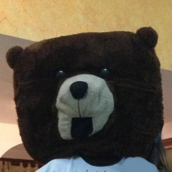
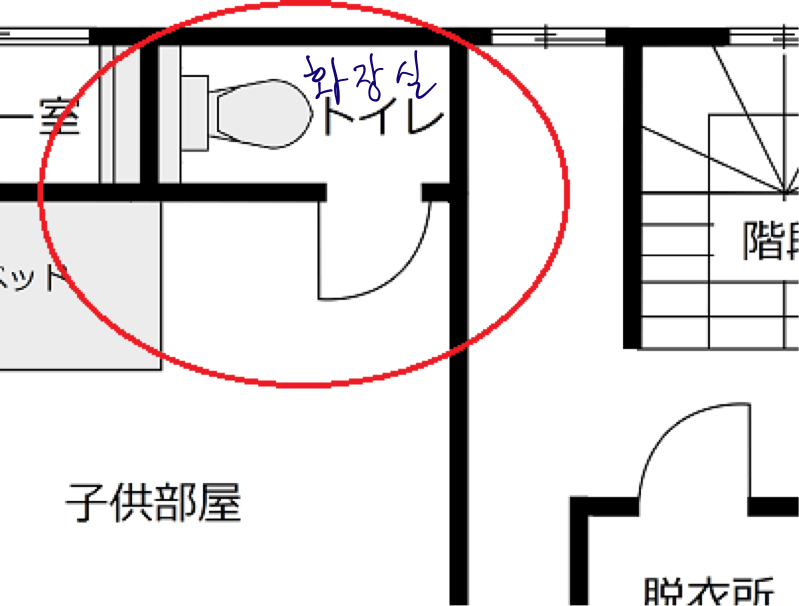

이 곳은 인터넷에 퍼져있는 도시 전설과 괴담을 모아두는 페이지이다. 소재의 범위를 한정하지 않고 오랫동안 캡쳐본과 복사본의 형태로 떠도는 것들을 모았다. 대부분의 이야기는 원출처 없이 ‘카더라’의 형태로 남아있는 것들이다. 원글을 찾을 수 있는 경우는 최초의 출처를 표기하였으나 그렇지 않은 경우에는 복사본을 퍼올린 링크를 첨부했다. 이름 있는 저자가 없어도, 진실성이 없어도, 심지어 원형이 없어도 이런 픽션들은 현실과의 공명으로 계속해서 인터넷 공간을 점유해 오고 있다.
로어(Lore)는 도시 전설을 뜻하며, 미스테리한 이야기와 미신부터 시시껄렁한 짧은 농담까지 포함하는 이야기의 단위이다. 이전에는 팩스나 인쇄물의 형태로 유통되었기 때문에 팩스로어(faxlore) 또는 제록스로어(xeroxlore) 등으로 불렸다. 오늘날의 로어는 손가락과 스크린을 통해서 순환한다. 자판 위를 뛰노는 손가락들은 가볍기 때문에 더 빠르고 쉽게, 거리낌 없이, 진위가 불분명한 믿거나 말거나 류의 이야기를 생산하고 반응하고 퍼뜨린다. 스캔들과 루머, 음모론과 가짜뉴스가 생산되는 방식과 같이, 이런 이야기들은 손가락으로부터 탄생하여 손가락으로 그 존재를 확인받는다. 가장 핵심은 사실 확인이 불가능하고 진실은 아무래도 상관없다는 것이다. 오히려 로어는 확인할 수 없기 때문에 믿음을 얻고 퍼지고 생명을 유지한다.
어린이들이 사용하는 타투 스티커에 마약 성분이 있다는 도시 전설은 팩스를 통해 학부모님들에게 배포되었다.
로어의 소재가 되는 이야기에는 사회 내의 오랜 고정관념에 대한 역전(逆轉)과, 그 자체로 멀리 퍼져나가는 역능(力能)이 공존한다. 처녀 귀신, 학생, 억울하게 죽은 혼, 흑인 귀신과 같은, 괴담의 주인공들은 거대 서사에서 뚜렷하게 그 모습을 드러내지 않는 이들이다. 1970년대 여성 살해가 빈번히 일어나던 시기에는, 여성 시체로 빚은 술이 있다는 도시 전설이 성행했으며, 2019 년 홍콩 민주화 운동 당시 실종된 소녀가 꿈에 나왔다는 로어가 유행한 배경에는 분명한 정치적 역학 관계가 존재한다. 이는 권력에서 배제되어 역사 속에서 그 자리를 잃어버린 자들이 웅얼거림과 소문의 형태로 일시적으로 형상을 얻고 유통의 자리를 차지한 것이라고도 볼 수 있다.
반면 그 퍼져나가는 역능은 혐오 또한 널리 퍼뜨린다. 인간은 본능적으로 자신과 다른 타인을 얕잡으면서 혐오하고 동시에 두려워한다. 이러한 이중적인 감정은 대부분 괴담의 기저에 저열하게 깔려 있다. 몇 년 전 인터넷을 떠도는 barbie.avi 라는 유튜브 영상(https://youtu.be/3gdnsVQ9ILE)과 이에 대한 로어(Barbie.avi | Creepypasta Wiki | Fandom)가 있었다. 한 여성이 계속해서 알 수 없는 말들을 웅얼대는 영상을 오래된 PC에서 발견한 글쓴이는 영상 속의 장소가 자신이 아는 곳이라는 곳을 깨닫고, 그 곳에 다신 가지 않겠다고 다짐하는 흔한 레파토리의 괴담이다. 다만 이 로어는 실제 여성이 등장하는 구체적인 영상이라는 매체를 증거 삼아 뜻밖의 시각적 충격과 함께 그럴듯함을 가미한다.
영상은 저화질이며 잡음이 많기 때문에 여자의 입 모양이 움직이는 것을 보고 있어도 뭐라고 하는 지 알 수 없다. 영상은 의도적으로 여자의 상반신만을 계속해서 클로즈업하여 편집되었으나 그의 어색한 움직임을 유심히 보고 있으면 여성의 오른팔이 없음을 짐작할 수 있다. 사람들은 링크된 영상을 보고, ‘이것은 구조요청이다’, ‘스너프 포르노의 첫 화면이다’, ‘이 여성은 사건의 피해자고 이미 죽었다’ 와 같은 코멘트를 계속해서 스레에 보태면서 여성의 정체에 대해 점점 더 큰 논쟁을 촉발했다. 사람들은 범죄 현장을 촬영한 기록물을 보고 있다는 있다는 망상에 사로잡혔고 그러한 두려움은 이 괴담과 영상을 더 빠르게 퍼뜨리는 역할을 했다.
결론적으로 여성은 포르노 배우도 아니고, 감금된 피해자도 아니었다. 이 영상은 단순한 인터뷰 영상으로, 한 여성이 자신의 장애와 그 경험을 고백하는 영상이었다. 원본 영상의 화질은 여전히 조악하지만 편집된 영상보다는 낫다. (https://youtu.be/QQ6yi37kCiE) 사람들은 업로드 과정에서 소실된 진실은 무시하고 남은 찌꺼기만을 과대해석하고 잔인하게 분석했다. 여성이 망설이며 말을 잇지 못하는 침묵의 순간은 이해불능을 이유로 쉽게 소름끼치는 범죄 현장이 되었고, 여성 혐오와 장애인 혐오가 부적절하게 뒤섞인 저열한 욕망은 여성을 걱정하는 척하며 마이너한 성적 패티쉬를 논하는 수백개의 스레를 세웠다. 한 유튜버는 이 영상의 출처를 계속해서 취재하다가 그녀를 알고 있는 장애 관련 커뮤니티 운영자를 만나 그녀의 행방을 물었다고 한다. 그 관계자는 너희 상관할 바가 아니라고 신경질적으로 대답했다카더라.
전형적인 군대 괴담에는 폐쇄된 공간과 엄격한 문화에서 해소되지 못한 자유에 대한 감각이 자리한다. 폭력적 행위가 끊임없이 발생하는 공간과 상명하복이라는 문화는 비상식을 묵인하면서 가짜와 진짜가 뒤섞인 형태로 불만을 표출시킨다. 택배 기사, 냉동차 기사, 탑차 기사들을 새벽의 자유로를 수없이 지나면서도 ‘자유로 귀신’을 한 번도 만나지 못했다고 진술한다. 그러고 보면 자유로 귀신을 보았다는 사람은 모두 연예인이었다. 자유로 귀신도 직업의 귀천을 따져 등장하는가? 우리는 계속 혐오하면서 두려워하고 배제한다. 어두운 현실 속의 집단적 공포는 염원적이고 교훈적이면서 차별적이고 비열하다. 하지만 괴담은 분명히 혐오스러운 것 = 우리가 혐오하는 것 = 혐오해서는 안 될 것에 대한 이야기이다. 그 혐오의 잔재는 이야기의 힘을 타고 다시 우리에게 칼끝을 겨눈다. 우리의 입가엔 씁쓸함만 남는다.
리서치를 진행하는 동안 온갖 괴담 커뮤니티를 넘나들었고 예상을 뛰어넘는 무수히 많은 혐오를 만났다. 여러 의미에서 가장 괴기스러운 것은 괴담을 타고 이어지는 댓글이었다. 프로젝트로 아카이빙할 로어를 선별하는 과정에서 일부 이야기는 그 이야기의 역능 차원에서 상당히 흥미로운 양상을 보임에도, 소수자에 대한 너무도 큰 혐오를 드러내고 있거나 실제 일어났던 사고나 사건을 극화하는 데 치중되어 있어 탈락되었다. 이 페이지에 올라와 있는 로어 또한 사람에 따라 역한 내용이 있을 수 있으니 유의하기를 바란다. 감히 혐오의 전시라고는 보이지 않기를 바랄 뿐이다.
박시내
이것저것 기획하고 종종 글을 씁니다.
nusinso@naver.com
무서움 속의 공간, 공간 속의 무서움_콘노 유키
일러두기: 본문에 포함된 괴담 및 무서운 이야기의 예시를 읽거나 궁금해서 찾아보신 분께서 무서운 또는 기괴한 경험을 하시게 될 경우, 독자 여러분의 책임도 아니며 필자의 책임이 아님을 밝힙니다―밝힐 수 없는 근거율 속에 이 글 또한 있음을 밝히면서.
서서히 들어가며
본 글에서 다루어지는 이야기를 필자는 ‘괴담’이나 ‘도시전설’이라는 말 대신 모두 ‘무서운 이야기’라 하겠다. 그 이유는 유령이나 괴물이 나오는 기존의 패턴화된 스토리 대신 ‘진짜로 있었던 무서운 이야기’나 ‘오컬트’ 게시판1에 작성된 글이 대부분이기 때문이다. 그리고 무엇보다 이들을 처음 만났을 때 느끼는 ‘다른 세계에서 온 것 같은’ 감각을 존중하고 싶기 때문이다. 형언하지 못하거나 비슷하지만 다른 존재는 처음부터―그리고 앞으로도 계속―정체 모를 대상이기 때문이다. 일본 에도시대에 라프카디오 헌이 민간에서 들은 무서운 이야기를 묶어 정리한 『괴담』2처럼, 본문에서 예시로 다루는 이야기 중 몇 개는 오늘날 무서운 이야기의 레퍼터리로 정립되었다. <쿠네쿠네(クネクネ)>3 <기사라기 역(きさらぎ駅)>4 <핫샤쿠사마(八尺様)>5 등등 제목만 들어도 어떤 스토리가 자연스럽게 그려지는 ‘현대판 괴담’ 같은 이야기가 있다. 현대에 들어 민간에서 전해지는 이야기는 지역 사회의 범주를 벗어나 익명화된 개인이 허구인지 진실인지도 밝히기도 전에 자취를 감추는 더 넓은 온라인 공간에서 늘어놓게 되었다.
그런 글들을 읽고 나면 과학기술의 발전이 정체 모를 대상을 일제 배제하였다고 하기에는 부족하다. 심령 사진, 드라마 속 유령6에 이어 디브이디 속 유령7이나 스마트폰에 나도 모르게 저장된 사진8처럼 모습을 나타나고 전철을 타다가, 엘리베이터를 타고 올라가는 중에 사람들은 기묘한 존재를 만난다. 정체 모를 대상은 오히려 과학 기술의 발전에도 불구하고 존재하는 것들이다. 무서운 이야기의 구조는 어떤 것인지 일본 게시판에 올라온 사례를 통해서 분석하는 것이 이 글의 지향점이다. 말하기-쓰기가 뒤섞이면서 실시간성과 모으고 저장하기의 기록 방식을 이용하는 온라인 환경에서 무서운 이야기는 어떻게 유통되며 어떤 방식으로 무서움을 (구전과 어떻게 달리) 전하는가. 화자와 무서움과 기묘함을 느끼는 대상과 이야기까지 모두 익명화되어 공유되는 이야기의 서술방식에 주목하면서 말로 하는 괴담이나 심령사진, 그리고 티비기반의 유통 방식에 따른 경험과 어떻게 다른지 짧게나마 비교해본다.
이야기는 공간을 만든다. 우리는 이야기를 듣거나 읽을 때, 그곳에 마치 있는 것처럼 상상하고 머릿속에 그려낸다. 무서운 이야기는 공간 속에 무서움의 공간을 만든다. 그곳은 이야기가 서술됨에 따라 머릿속에 나타나는데, 이는 그들이 마주하는 정체 모를 대상의 출현 방식이기도 하다. 이 공간에서 우리는 상황 묘사에 주목하게 된다. 입에서 나오는 말이 무서운 분위기를 연출적으로 불어넣는다면 무서운 이야기에서 우리는 담담한 어조로 설명된 세부 묘사들이다. 한 이야기와 정체 모를 대상이 모습을 드러내는 조건은―여기서 조건은 어디까지나 결정적이지 않은, 바꿔 말해 근거율의 비-결정적 성격을 가리킨다―부정형의 묘사에 뒷받침된다. 무서운 이야기는 입을 열자마자 전개되는 스토리를 어느 순간 비-시공간적인 곳으로 보내 그곳에서 정체 모를 대상을 대면하도록 한다. 이 비-시공간적인 곳은 금기와 부정, 인식 불가능성으로 채워져 있다. 심지어 이때 부정은 무서운 이야기 속 주인공이 마주하는 상황뿐만 아니라 그 이야기가 말해지기 전까지 이어진다. 앞서 예시로 다룬 이야기는 다음과 같은 묘사가 앞서 등장한다.
(...)
친척에 나보다 한 살 어린 ‘슈우’라는 남자애가 있었는데, (...) 장례식에서 이번에 만나게 되면 15년만에 얼굴을 본다.
(...)
그런데 장례식 전날, 부모님과 누나만 와 있었다. 내 기대와 달리 슈우의 모습이 보이지 않았다.
이때 문득, 내가 초등학생 때 친척 장례식에 참가하고 난 뒤에 슈우랑 놀다가 무서운 일을 겪은 기억이 다시 났다.
이야기를 할 때 목소리로 강도를 주는 대신 디테일 묘사에 집착한다. 무서운 이야기에서 디테일 묘사는 현실성을 뒷받침한다. 이때 현실성이란 현장감이자 동시에 현실감 즉 리얼리티를 가리킨다. 마치 그곳에서 직접 기묘한 일을 실제로 겪는 것처럼 독자에게 와닿을 때, 부정과 배제의 묘사를 통해서 그 알 수 없는 존재는 출현한다. 미술관 화이트 큐브의 결백함과 어울리던 미니멀리즘 작업과 달리, 무서운 이야기는 묘사된 공간에서 부정과 배제를 통해 환영을 충분히 만들 수 있다. 아무도 없는 곳에서 소리나 시각까지 일시적이지만 사라져버릴 때 오히려, 우리는 유령이나 기묘한 존재를 만나게 된다. 내 몸을 내가 통제해서 자유롭게 돌아다니면서 물질성과 크고 작음을 느끼는 방식과 달리, 내 의도가 아닌 상태로 감각이 통제당하여 움직이지 못할 때 두려움을 느낀다. 두려움이 서서히 잠식하는 이곳은 병상이나 수술대 같은 성격을 지닌다. 몸, 시선, 소리의 방향이 차단되고 시간이 얼마나 흘렀는지 모르는 감각을 경험하는 곳은 단순한 서사 전개와 달리, 독자를 서서히 다른 곳으로 오도록 손짓한다.
무서운 일이 일어나기 전과 일어났을 때, 그리고 일어난 지 몇 십 년 후에도 이어지는 부정은 심령사진을 향한 의혹을 더 넓은 시간 폭 속에서 늘린다. 그것이 가짜인지 아닌지, 가짜였는지 진짜였는지, 혹은 내 기억이 잘못된 것인지 맞는 이야기인지, 그런 의미에서 무서운 이야기에서 전제되는 부정은 진위 판단은 물론 경험자의 경솔함을 반박하거나 깊은 뜻―의미나 신적 존재가 선사하는 가르침이나 부여된 동기나―을 찾아보는 일까지도 부정한다. 위의 이야기에 잇달은 네티즌의 말들은 다음과 같다.
[ 6030 ] NO TITLE
풍습이건 내려온 얘기건 안 알려주면서 혼나는 일은 뭐..
[ 2011/08/15 ] NO NAME ◆
[ 6671 ]
아무리 초등학생이라 해도 이해 못하지 않나?
어른들도 잘 모르고 있는데 어린이한테 알려주기 힘들 거야.
[ 2011/08/23 ] NO NAME ◆-
[ 7981 ]
“오늘은 무서운 유령이 나와. 모습을 보면 너네 끌려간다”
이렇게 말해주면 되는 얘기 아님?
전부 다 이해시킬 필요는 없고.
어중간하게 이야기 안 하고 아이들의 호기심을 자극하는 어른들이 바보지.
[ 2011/09/06 ] NO NAME ◆-
[ 8393 ] NO TITLE
>>“오늘은 무서운 유령이 나와. 모습을 보면 너네 끌려간다”
>>이렇게 말해주면 되는 얘기 아님?
그러다 “우리 공포 체험하자” 하면서 보겠지. 아니면 “어른이 무서워하고 있는데 우리가 정체를 한 번 봐보자” 이러면서 볼 걸?
설명 다 해주고 말 잘 듣는 어린이는 이 이야기에 나온 아이들처럼 괜히 안 그럴 걸?
전해지는 풍습인데 어른도 본 적 없고 설명하려고 해봤자 못하겠지.
그냥 대처법이랑 얼굴 보면 일이 터진다 이런 것만 알고 있지
[ 2011/09/11 ] NO NAME ◆-
[ 17835 ]
다들 얘기하듯이 어린이는 호기심 뭉치야. 그러니까 어른이 옆에서 챙겨볼 필요는 있었을 거야. 하필 그렇게 위험한 존재인데.. 그치 않나?
[ 2013/05/26 ] NO NAME ◆-
[ 24171 ]
위험 인식 능력이 없었어서 미친 놈 된 것뿐이지.
그게 운명이었어.
[ 2013/07/24 ] NO NAME ◆
무서운 이야기에 이어 나온 이야기들에서 처음부터 선택받은 자라고 안타까워하거나 어른의 잘못이라고 나무라는 일은 결국 그 알 수 없는 존재를 견고하게 지지한다. 만약에 금기를 어겨서 문제가 없다면 전에 있었던 일들을 더욱 불가사의한 결과로 내보내게 되는 한편―그러나 같은 지평에서―금기를 어겨서 벌을 받았을 때는 그 존재를 만나게 된다. 그런 측면에서 봤을 때, 무서운 이야기와 거기에 나오는 존재는 개연성이나 인과관계 너머에 있다. 애초에 관심을 아예 가지지 않고 신경 쓰지 않았다면, 하지만 거꾸로 돌아가 관심을 갖고 일의 진대함을 알고 있었다면 결과는 달랐을까? 무서운 이야기 속에서 조우하는 존재는 불가침의 영역에 있다. 운에 따른 명제는 존재를 만나는 운명과 이후의 삶을 결정할 뿐만 아니라 결국 무서운 존재가 물러선 채로 효력을 발생하도록 한다. “내 충고를 잘 듣기만 하면 너는 그 존재를 만나지 않을 것이다”와 “내 충고만 잘 들었어도 너는 그 존재를 만나지 않았었다”라는 말에서 ‘그 존재’는 지워지지 않는다.
닫힌 시공간 속에서 이동하기: 엘리베이터, 여행지, 꿈
발화 대신 글의 공간에서 흐름의 주도권은 말하는 이가 아니라 독자에 있다. 괴담을 말하는 이가 처음부터 몰입하도록 소리의 높낮이나 효과음으로 연출한다면 글은 독자가 글을 따라가면서 어느 순간 나도 모르게 '그곳'에 있게 된다. 제의적으로 폐쇄된 공간이 만든 괴담 대회 같은 공간[각주] 대신, 글은 독자인 내가 내밀하게 맺는 관계에 따라 무서움을 마주하는 공간을 만들게 된다. 정체 모를 대상을 만나는 곳으로 이행하는 과정은 처음부터 분위기가 조성된 공간과 다르게, 글의 경우 내가 이곳 아닌 상상 속이라는 공간에서 실제와 실제 같지 않은 대상을 함께 출현시키게 된다. 앞서 본 부정형의 공간은 다음과 같이 종종 기술적 이동 과정에서 무서운 대상을 만나도록 한다.
엘리베이터
(...)
밤 21시쯤에 직장에서 집으로 돌아왔다.
내가 사는 집은 10층짜리 아파트 6층인데 항상 엘리베이터를 타서 올라간다.
그날도 엘리베이터를 탔는데 이상한 소리가 들려왔다.
휙휙, 뭔가가 날아가는 소리였다.
그러다 6층에 아무일 없이 도착했다.
부모님이 계셔서 문을 그냥 열었는데 말을 잇지 못했다.
우리집 아니었다. 정말이지 당황스러웠다. 남의 집에 잘못 들어간 줄 알았다.
현관이 우리집과 달라서 당황하면서 문을 닫고 방번호를 확인하는데 603호, 우리집 번호 맞았다.
어? 어? 이상하다 해서 몇 번이나 확인했는데 603호였고 6층 맞았다.
그때서야 깨달았지만, 6층에서 보는 풍경이 매일 보는 풍경과 전혀 달랐다.
뭐가 다른지 구체적으로 말하면, 내가 사는 아파트는 전철역 근처에 있는 번창한 곳이 아니다.
무서운 이야기의 무대 중에 일상과 다른, 예를 들어 신사나 절, 장례식 같은 특별한 공간에서 일어나는 일에 국한되지 않는다. 화자는 엘리베이터나 전철, 운전중처럼 일상의 삶의 연장선상에서 다른 존재와 조우하기도 한다. 비-일상과 일상에서 벌어지는 일들의 중심에는 공통적으로 내가 움직이지 않고 시간 가는 줄 모르는 사이에 일어난다. 여가를 즐기는 사이와 움직이는 폐쇄된 공간에 있는 주인공은 흐르는 시간에 서서히 이질적이 침투하면서 다른 공간으로 이동해버린다. 앞서 든 예시들이 그렇듯이 무서운 이야기에서 유독 이동 과정 중의 장면이 많은 이유는 기술 발전의 결과로만 보기 어렵다. 무서운 이야기에서 이동 과정은 이야기 내용의 설정이자 동시에 화자의 서술과 전개 방식, 더 나아가 읽히는 형식이다. 따라서 제의적 공간이나 이동 수단이 무서운 이야기의 주된 무대라기보다 시공간이 닫혀 있는 동안에 이동하는, 그 과정에서 비슷함과 다름이 저울(질)처럼 흔들릴 때 무서움이 들어서게 된다고 할 수 있다. 그런 측면에서 봤을 때, 캠핑장이나 시골, 여행지 또한 무서움을 자아내는 공간이다.
캠핑장
(...)
예의를 지키고 천막 안에 있는 사람에게 한 마디 인사할까? 잠깐 그런 생각도 했지만, 나중에 도착한 저 사람이 인사를 안 했는데 내가 하는 것도 좀 그런가 싶었다.
근데 사실 이건 변명이다. 불길한 느낌이 나서 천막이 무서웠다.
힘이 더 들겠지만, 위치를 옮기기로 했다.
결국 나는 천막을 다시 접어서 저쪽에 있는 천막을 되도록 안 보면서 골짜기를 1킬로 더 올랐다.
오늘밤 야생동물 촬영을 포기할 수밖에 없었다.
상류 강가에 천막을 다시 쳤더니 시간은 벌써 9시에 임박했다. 간단히 밥을 먹고 잠들었다.
아직 쌀쌀한 5월인데도 땀을 흘리면서 한밤중에 일어났다. 시간은 대략 새벽 2시.
천막 안에 공기가 자옥해서 환기하려고 잠깐 열었다.
경악을 금치 못했다.
눈앞에 아까전에 본 파란색 천막이 있었다.
“거짓말 아니야!?” 그러자 천막 안에 불이 켜졌다. 얼룩이 보이기 시작한 천막 안에서 두 손바닥이 시커멓게 나타났다. 안에 있는 사람이 나를 향해 손을 뻗고 있었다.
다른 사례 중에 보면 시간이 흐르는 줄 모르는 상황, 방학이나 휴가 중의 묘사가 많은 점도 고려해볼 수 있다. 일상과 다른 시간의 흐름, 즉 한가로움이나 여유처럼 비-시간성이 전제된다. 바다에서 보내는 시간, 스키장이나 별장에서 보내는 시간 역시 시공간적으로 경과를 감각하기 힘든 상황이기에 무서운 이야기의 무대가 되기 쉽다. 시공간적으로 닫힌 경우는 극단적으로 개인에 해당된다. 분리하기 어려운 개인은 내적으로 이동하는데 바로 의식과 무의식, 잠과 깨어 있음 사이에서 움직일 때 무서움은 나타난다. 다음 세 개 예시를 통해 우리는 대비되는 항들이 교차하고 이행하는 과정을 볼 수 있다.
①
(...) 문이 열리는 소리가 들렸다.
그의 목소리가 내 방향으로 일직선으로 온다.
잠궈놨는데 왜 그대로 들어오냐고!? 왜 내가 숨어 있는 위치를 처음부터 아는 듯이 이쪽으로 바로 올까!?
어떨 땐 의식을 잃어 병원에 있는데 명확히 기억에 남는, 어떨 땐 한밤 중에 눈을 잠깐 떴더니 만나는, 깨어 있음과 잠 사이에서, 잠으로 위장된 죽음, 실제와 허구의 혼합된 지대에서 무서움은 모습을 나타낸다.
익명의 고해소: 화자와 이야기와 유령/괴물 모두 익명이 되었다.
익명의 주인공이 겪은 당황은 익명 속, 즉 인터넷 게시판 등을 통해서 널리 전파된다. 이들은 그간 금기를 어기면 안 된다는 듯 암묵적으로 간주되어 말하지 못한 이야기를 늘어놓는다. 익명의 누군가가 하는 이야기 속에 등장하는 익명의(정체 불명의) 존재를 익명의 우리가 읽을 때, 무서운 이야기는 결말에 적합한 결말 없이 끝나버린다. “(인과)관계가 없을 수도 있겠지만..” “결말 같은 결말이 없어서 미안하지만..”으로 종종 마무리되는 익명의 화자인 글쓴이는 어느 순간에 자신의 이야기를 늘어놓고 사라져버린다. 이런 특징은 화자 역시 그들이 마주한 무서움을 주는 존재 만큼 순간적으로 사라진다. 정체 불명의 전철역 ‘기사라기 역’에 도착한 익명(‘하스미’라 자칭하는)의 화자와 네티즌이 주고받은 대화를 보자.
배터리가 거의 없어요. 태워준 사람이 이상해서 도망칠 타이밍 보고 있어요. 아까부터 이상한 혼잣말 계속 하고 있어요. 혹시 모르니까 글은 이번이 마지막입니다.
636 ：당신의 바로 뒤에 익명 님이・・・：04/01/09 03:44
휴대폰에 카메라 없어?
637 ：당신의 바로 뒤에 익명 님이・・・：04/01/09 03:45
하스밍 성불했겠네(-∧-；) 남아미타불
638 ：당신의 바로 뒤에 익명 님이・・・：04/01/09 03:45
ㅅㄱ
(...)
이후 하스미의 댓글은 작성되지 않았다. 수많은 네티즌의 말들―걱정과 격려뿐만 아니라 뻥이네 하고 비웃거나 애스키 아트를 보여주거나 다른 이야기를 누가 시작하거나 (심지어 새벽인데도) 하면서 자취를 감춰버린다. 하스미는 이세계(異世界)로 완전히 가버린 것일까? 실시간으로 주고받은 대화에서 결말은 누구 입을 통해서도 나와 있지 않다. (나중에 자신이 하스미라고 이야기를 다시 시작한 사람도 있었다고 하지만,) 어찌 되었든 화자가 이세계에 사는 존재만큼 기묘하고 독자에게 무서움을 불러일으킨다. 우리는 하스미가 이상한 곳에서 기묘한 일을 겪은 것처럼 하스미를 목격자―그러나 끝끝내 증언하지 못하는―로서 보게 된다.
하스미가 그랬듯 마찬가지로 기묘한 존재를 만나거나 건드린 등장 인물은 다른 이야기에서 그들의 존재 역시 익명화되거나 모두의 기억에서 사라져버린다.
①
(...)
나중에 들은 이야기로, 집에 돌아오자마자 할머니에게
“저게 와버렸어! 저게 A를 먹어버렸어! 어떡해, 어떡해! 나, 나… 도망쳐 와버렸어…”
라는 말을 몇 번씩이나 했었다고 합니다. 그 말을 듣자 할머니는 지금까지 내가 본 적도 없었던 무서운 표정으로 내 뺨을 때리시고선
“A는 어디서 잡아먹혔는데!?”
라고 물어봤습니다.
내가 위치를 알려 근처 주민들과 같이 찾아갔지만, 그곳에 이미 아무것도 없었습니다.
(나보다 다섯 살 많은 오빠/형이 있어서 그에게 들은 이야기입니다.)
무서운 건 그 후의 일들입니다.
다음 날 아침에 나는 할머니에게
“A는 어떻게 됐어?”
라고 물어봤는데
“A? 누구? 그런 애 있었니?”라는 대답을 들었습니다.
처음에 무슨 말인지 몰랐습니다. 그런데 어머니, 아버지, 친구들한테 물어봤는데 아무도 A를 몰랐습니다.
무서운 이야기의 공간에서 화자, 화자가 하는 이야기, 이야기 속 주인공이 만난 무서운 존재, 그리고 이를 직접적으로 만난 이는 수평적으로 이어지면서 이중인화처럼 상()으로/이미지적으로 겹친다. 익명의, 가명의, 일단 ‘뭐뭐’으로 부르기로 한 존재는 실제로 겪은 일과 지어낸 이야기를, 금기를 어긴 결과와 선택받은 우연성을 모두 판단하여 결정짓거나 수습하지 못한 채 떠나버린다. 이들은 원인과 결과의 관계를 암묵적인 차원―밝혀지지 않은 차원으로 몰아넣음으로써 실제와 허구를 수평적으로 다룬다. 둘 다 모두 글로 씀으로써 일으켜 세워지는 것으로 나타날 때, 이야기를 가지고 진짜와 가짜를 가리는 일은 경험담 속 유령을 착각이나 오해로 나무라는 일과도 같다. 무서움이나 기묘함은 (밝혀지는) 증거에 앞서 있기 때문이다.
인터넷에서 익명의 네티즌이 게시판에 과거에 겪은 일을 토로하는 현상을 고해소로 이해한다면, 이때 꺼내는 말들과 그 내용은 죄를 뉘우치는 것과 다른, 어쩌다가 휘말리게 되어 대면한 일들을 또다시 출현시키는 일이 된다. 고해소에서 자신이 저지른 죄를 인정하고 용서를 비는 것과 달리, 이들은 예방과 보험에 들라는 이야기를 하는 것에 가깝다.26 “너네는 신성한 곳에서 함부로 떠들지 말라” “모르는 산에 들어가지 말라” “이상한 존재를 만났을 땐 모르는 척하라” 등등. 하지만 이런 예방과 보험은 본인의 경험 속 기묘한 존재를 더욱 확고히 한다. 말을 잘 들을 때=그렇게 하지 ‘못하도록’ 강요받을 때, 바꿔 말해 부정형의 설정을 통해서 무서운 존재를 만나는 결과로 전도(顚倒)된다.
(지)나가며: 잘 전해주세요
그 이야기를 실제로 있었던 일이라 믿거나 지어낸 것이라 반박하건, 무서운 이야기는 독자를 이야기 속 주인공과 동일한 위치에 서도록 사로잡는다. 그 이야기를 진실이나 착각, 꾸며낸 것으로 판별하지 못하는 사이에 우리는 그 이야기에 빠져든 것이다. 그 빠져든 곳에서 경험자, 그러니까 화자와 독자 모두의 무서워함과 무서운 대상은 모습을 보이기 시작한다.
무서운 이야기의 성격은 전해지는 데서 효과를 발생한다. 입에서 귀로, 그리고 다시 입에서 나온 괴담은 게시판의 난잡함에서 괴담 모으기 사이트에 정리되어 다른 사이트로, 유튜브를 비롯한 공유 사이트에서 널리 확산된다. 이 ‘복붙’ 형식의 콘텐츠는 다른 것보다 무미건조하고 재미없어보인다. 영상 없는 자막 같은 것보다는 유튜브에서 ‘사연 있는 집(事故物件)에 살아봤습니다!’ 같은 콘텐츠27나 비디오에서 데이터화된 과거의 심령사진 티비 특집28만큼 기대감이 조성되지 않는다. 그런데 이런 콘텐츠들은 그 명확한 시각성 때문에 금방 진위 판단 싸움에 휘말리기 쉽다. 단편 호러 드라마의 시각적 연출은 실제를 바탕으로 하건 허구/픽션을 바탕으로 하건 그 연출에 시각적 재현력 덕분에 무서움을 조성할 수 있다. 심령사진이나 비디오, 심지어 앞서 든 영상 공유 사이트나 라이브 방송의 기록의 경우 역시 가짜라는 의심을 받게 된다. 후가공과 편집 같이, 인과 관계를 얼마든지 만들 수 있는 수단이 이미 확산되어 있기 때문에 시각은 무섭지만 극복할 수 있고 해명 가능한 길로 가기 쉽다.
허구라는 증거, 연출이라는 기술은 밝혀지면서 무서움이 해명되고 평가받는다. 이미지의 순간적인 명증성 대신 글은 어떤 상상으로 서서히 이끈다. 인터넷 게시판에서, 유튜브 영상으로 배회하는 무서운 이야기는 이미지처럼 순식간에 다른 곳이 도래하는 대신 서사 구조를 따라감으로써 잠입하게 되는 또 다른 곳이다. 무서움을 만드는 글의 공간은 말투나 디테일 묘사에 뛰어난 연기 혹은 조작 기술을 통해 평가되는 가짜가 아니다. 가짜이기에 연출이나 조작 기술이 뛰어나다고 평가 받는 대신, 이들이 늘어놓는 이야기는 ‘무서움을 조성하기에’ 기술적으로 뛰어나다고 할 수 있다. 무서운 이야기의 전해지는 성격, 그것은 정보나 콘텐츠로서 확산되는 특성이라기보다 이미지 뒤편에 서서 상상으로 이끌면서 자연스럽게 무서움을 만드는 성격이다. 이야기를 믿거나 말거나, 나와 관련이 있거나 말거나, 이야기 속 주인공 못지않게 기묘하고 불명의 존재는 신의 저울질보다도 야속하게 독자를 무서움에 빠뜨린다―글이라는 공간 속에(머물면)서/통(과)해서.
2 1904년에 출판된 괴기문학 작품모음집. 일본 곳곳에 전해지는 전설이나 유령담을 재구성하였다.
3 하얗고 흔들리면서(쿠네쿠네) 움직이는 존재. 시골 논밭에서 봤다는 이야기가 많고 가까이서 본 사람은 정신이 이상해진다.
4 ‘하스미’라고 자칭하는 어느 네티즌이 전철 타다가 전혀 모르는 역에서 내렸다는 이야기. 실시간으로 네티즌끼리 이야기를 주고받으면서 상황을 묘사하는 현실성이 느껴진다. 본문 참고.
5 시골에서 이상한 웃음 소리를 내면서 걷는 키 큰 여자의 괴물. 만나면 죽는다고 전해진다. 본문 각주 17번 예시 참고.
6 내가 가지는 어렴풋한 기억 대신 기록된 것들의 증명으로, 영화와 드라마에 나오는 장면은 일시정지에서 캡처 저장까지, 순간을 더이상 지나간/지나가버릴 것들이 아니라 결정적인 것으로 만들었다. 예시로 立入禁止! STAFF ONLY ＃6 真夜中のレッスン（출입금지! STAFF ONLY #6 한밤중의 레슨, 1997년11월17일 방송） 가 그렇다. 다음 링크를 참고.
https://sp.nicovideo.jp/watch/sm15205060
9 사례를 언급할 때 다음과 같이 참고 바란다. 첫 째, 사례는 되도록 제목을 적지 않았다. 근래 탄생한 모음 사이트의 성격과 달리, 게시판은 수많은 글들의 잇달음 속에서 흐르기 때문이다. 둘 째, 게시물의 성격상 아이디나 날짜와 작은 작성된 정보는 가독성을 고려하여 일부 포함시키지 않았다. 세 째, ‘나’가 성별적으로 구분하지 못할 경우(즉 익명의 화자가 자신을 스스로 구분하지 않는 경우) 형/오빠 혹은 누나/언니의 두 가지 표기를 택했다. 넷 째, 작성된 글의 중간에서 인용하거나 글이 더 이어지는 경우에 (...) 표기를 넣었다. 다섯 째, 사례의 대부분이 일본어로 작성된 것이다. 본문에 모든 사례를 다루고 싶었지만, 이야기의 짜임새가 포화할 것 같아 그러지 못한 부분은 이해 바란다.
콘노 유키
한국과 일본에서 전시를 보고 글을 쓰는 사람. 출근길과 취침 전에 무서운 이야기를 습관적으로 자주 읽는다.
pilsun13@gmail.com
인터넷 도시괴담 (Creepy Pasta, 크리피파스타)_케니왕
2015. 1. 24. ~ 4. 17. (2021. 11. 2. 수정)
"The oldest and strongest emotion of mankind is fear, and the oldest and strongest kind of fear is fear of the unknown (인류의 가장 오래되고 강력한 감정은 공포이고, 가장 오래되고 강력한 공포는 미지에 대한 공포다)." [1]
― H. P. Lovecraft (현대 공포문학의 아버지)
무서운 이야기는 아마도 인류의 역사와 함께하지 않았을까 합니다. 왜냐하면 '모르는 것'에 대한 인간의 가장 원초적인 반응은 공포이기 때문입니다. 여기서 '모르는 것'이란, 우리가 현재의 지식을 가지고는 이유를 설명할 수 없는 것들을 말합니다. 오늘날 과학의 힘으로 그 신비함이 벗겨진 질병, 재난 등은 옛날에는 그저 알 수 없는 공포의 대상이었을 것입니다. 지금은 그냥 평범한 전래동화일 뿐인 "떡 하나 주면 안잡아먹지" 하는 호랑이가 나오는 <햇님달님 이야기>도, 뒷산의 호랑이가 심심치않게 마을 사람들을 공격하던 옛날에는 분위기만 잘 조성하면 충분히 무서운 이야기였을 것입니다. (특히 오누이가 나무 위에 도망가 있는데 호랑이가 도끼로 나무를 찍으며 올라오는 장면은 엄청난 서스펜스...)
이제는 <햇님달님 이야기>를 아무리 무섭게 해봤자 무섭지 않습니다. 호랑이는 벵갈 밀림 안에 조난되었거나 동물원의 호랑이 우리에 떨어지는 특수한 상황이 아니면 공포의 대상이 아니기 때문입니다. 오히려 멸종위기의 불쌍한 존재지요. 신에 의한 처벌이었던 자연재해도 이제는 미지에서 오는 공포보다는 오히려 현실적인 문제가 되어, 공포 영화보다는 재난 액션 영화의 소재가 됩니다. 분명 쓰나미같은 자연재해만큼 무서운 것도 없습니다만, 그것의 메커니즘을 알고 예측할 수 있으므로 그 공포의 성격은 달라졌다고 생각합니다. 질병은 말할 것도 없고요.
오늘날 현대의 주된 괴담의 소재는 귀신, 살인마, 좀비 같은 것들입니다. 이것들은 아직 정복되지 못한 미지의 세계와 관련되어 있습니다. 귀신, 좀비는 사후세계 또는 ‘죽은 후의 우리의 의식은 어떻게 되는가?’ 하는 의문과 관련되어 있으며, 살인마는 그 존재는 알려져 있더라도 우리 주변 어디에 있을지 모르는 싸이코패스, 그리고 드물게 등장하는 외계인도 미지의 세계에서 온 것이죠. 어떤 대상을 대놓고 공포의 소재화 하는 것이 식상해진 지금은, 사람의 진화과정 어딘가에 그 원인이 있을 거라 추정되는 여러가지 공포증(환공포증, 선단공포증, 고소공포증, 폐쇄공포증 등)들을 소재로 삼기도 합니다. 또는 온갖 상상력을 동원하여 우리의 통상적인 상식이나 지각이 더이상 통하지 않는 새로운 세계를 만들어 두려움을 일으킵니다.
우리는 누가 지어냈는지 알 수도 없는 수많은 무서운 이야기들을 접해왔습니다. 귀신 이야기의 고전 <빨간휴지 파란휴지>부터 시작해서, 90년대에 TV에서 해주던 <토요 미스테리>, <이야기 속으로> 시리즈, 그리고 학교 앞 문방구나 서점에서 팔던 '공포특급'같은 제목의 쪼끄만 500원짜리 조악한 책들, 여름이면 영화관에 걸리는 뻔한 공포영화들, 최근에는 공포 웹툰까지…
화장실 내 최대의 고민부터 시작해서 줄거리, 작화, 캐릭터까지 매우 충실했던 웹툰 <0.0MHz> 까지!
무서운 이야기는 동네마다 수십, 수백개가 있고, 에드가 앨런 포우와 러브크래프트의 자손들이 만들어내는 수많은 창작물들이 있습니다. 우리는 그것을 스릴을 위해서, 스스로의 담력을 시험하기 위해서, 또는 실재하는 공포에서(요즘 유달리 느껴지는 현실의 냉혹함) 도망치기 위해서, 아주 다양한 목적으로, 그리고 다양한 형태로 소비해왔습니다. 그리고 2000년대 인터넷의 시대가 되었고, 괴담에도 크리에이터의 시대가 왔더군요. 이 글에서는 인터넷을 떠도는 괴담에 대해서 이야기해볼까 합니다. 특히 우리나라에 그다지 알려지지 않은 미국 쪽 이야기를 해볼까 합니다.
Creepy Pasta 라는 단어가 있습니다(무서운 파스타 ㅋㅋ). 이것은 인터넷에 돌아다니는 짤막한 괴담들을 뜻합니다. [2][3]
무, 무섭게 생긴 파스타다...
크리피파스타는 단순히 무서운 이야기가 될 수도 있지만, 실제로 무서운 컨텐츠를 만드는 경우도 있습니다. 예를 들면, http://normalpornfornormalpeople.com 이라는 웹사이트가 있었습니다(2021년 현재는 없어짐). 이곳은 "비정상적 성행위를 근절하기 위한 웹사이트"라는 문구가 쓰여 있고, 몇 개의 동영상을 다운받을 수 있습니다. 위키피디아(위키피디아 페이지 역시 2021년 현재는 없어짐)에 따르면, 동영상 중에는 단순히 어떤 여자가 땅콩버터 샌드위치를 만드는 것도 있고, 어떤 남자가 세탁기를 고치더니 세탁기를 7분동안 혀로 핥는 이상한 것도 있습니다. 그보다 더욱 훨씬 폭력적이고 잔인한 영상들도 있습니다. 이 모든 영상들은 당연히 페이크이고 보는 사람에게 뭔가 무서우면서 불편한 느낌(disturbing)을 받게 하려는 목적이지만, 실제로 인터넷 사이트가 버젓이 존재하기 때문에 저 영상들이 페이크인지 아닌지 확신할 수가 없다는 점에 더욱 소름끼치는 요소가 있습니다. 마치 인터넷 어딘가에서 떠돌아 다니는 정체불명의 스너프 필름을 보는듯 한 미묘한 으스스함.
이러한 인터넷 상의 괴담들을 본격적으로 공유하는 사이트들(creepypasta.com, creepypasta.org 등)이 있습니다. 누구나 이야기를 창작해서 업로드할 수 있고, 이야기는 공유되어 별점을 매길 수 있습니다. 각 이야기를 “파스타”라고 합니다. 왜 하필 파스타라 부르는지는 모르겠습니다만, 여러 사이트의 크리피파스타를 모아놓은 크리피파스타 위키도 구축되어 있습니다. 제가 아는 한 가장 방대한 데이터베이스로, 왠만한 미국 도시괴담은 여기에 수록되어 있다고 봐도 무방하겠습니다.
수많은 이야기들 중 화제를 일으키거나 임팩트있는 것들은 다른 종류의 미디어로 파생되었습니다. 이른바 덕질인 것이죠. 사람들은 텍스트의 내용을 그림, 영상, 심지어는 게임으로 옮겨 확대 재생산했습니다. 스스로 성우가 되어 텍스트를 구연동화식으로 읽어 유튜브에 올리는 사람도 있죠. 그것들 중 가장 흥미로운 형태는 대안적 현실 게임(alternate reality game, ARG)이라고 불리우는 일종의 놀이인데요, 인터넷의 괴담이 실제라고 가정하고 여러 사람들이 마치 자기도 그런 일을 겪었다는 듯 각종 증거를 제시하며 살을 붙이는 것이죠. 뒤에 소개하겠지만 슬렌더맨(Slender Man)이라는 괴담은 2009년 처음 Something Awful이라는 사이트의 괴담포럼에 등장한 이후 최근까지 게임이 이어지고 있습니다. 아래는 크리피파스타가 다양한 컨텐츠로 확산된 예시들입니다.
〈Jeff the Killer〉라는 괴담에 나오는 살인마 제프의 모습을 누가 상상해서 그린 것들입니다. 눈꺼풀을 불로 태워 없애고, 칼로 입을 찢었다고 합니다.
세계의 기이한 물체들을 수집해 안전하게 보관한다는 설정의 “SCP Foundation”을 소재로 한 괴담이 게임으로 제작되어 배포되었습니다. 그 결과 수많은 게이머들이 심장마비에 걸릴 뻔했습니다.
크리피파스타를 읽어주는 동영상입니다. 슬렌더맨이 포착되었다는 증거로 돌아다니는 사진입니다. 뒤에 허옇게 삐죽 올라온 물체가 검은색 정장을 입는 슬렌더맨입니다. (당연히 합성…)
화제가 되는 크리피파스타들의 특징, 그리고 그것들이 확대 재생산되는 양상을 보면, 실화인지 지어낸 이야기인지 구별하기 어려운 점이 있습니다. 이미 지어낸 이야기인 줄 뻔히 알고 있다고는 하지만, 너도나도 동조하여 살을 붙이다 보니 자료도 방대해지고 지어낸 증거가 너무 교묘해져서(위 사진처럼) 더욱 빠져들게 만드는 것입니다. 옛날 일본의 심령사진들이나 영화 <블레어 위치 프로젝트(Blair Witch Project)>가 이런 '페이크 다큐멘터리'가 주는 공포감을 잘 활용했던 사례들이죠. 개인의 컨텐츠 제작이 점점 편리해지고 강력해지면서, 1인 또는 2-3명 정도의 소그룹으로도 상당히 높은 퀄리티의 영상을 만들 수 있고, 오픈 소스 엔진이 많아지면서 취미로 게임을 제작하는 프리랜서 프로그래머(라고 쓰고 양덕이라고 읽습니다)들이 많아졌습니다. 또한 공포라는 장르는, 퀄리티가 약간 낮을 때 오히려 공포감이 배가되는 점이 있으므로 더욱 크리에이터들의 진입이 더 쉬운 점이 있죠(심령사진은 찌글찌글한 아날로그 사진이 제맛).
그러면 가장 유명한 크리피파스타가 아닐까 하는 슬렌더맨을 소개 헤보겠습니다.
앞서 적었듯 슬렌더맨은 2009년 처음 “Something Awful”이라는 사이트에 등장했습니다. 포토샵으로 심령사진을 만들어 올리는 콘테스트 쓰레드에 Eric Knudsen (a.k.a. "Victor Surge") 라는 사람이 만들어 처음 등장했는데, 워낙 오래 전이라 정확한 소스를 확인하기는 어렵습니다. [4]
슬렌더맨은 매우 키가 크고, 아주 말랐으며, 얼굴이 없는 초현실적 존재입니다. 항상 검은색 양복을 입고 있으며, 아이들이 있는 곳에 잘 나타난다거나, 인적이 드문 숲 속에 나타난다는 이야기도 있습니다. 슬렌더맨에 대한 설명은 나무위키에 매우 상세하게 기술되어 있습니다. [5] 팔다리가 아주 길고 이목구비가 없으며, 등에서 여러 개의 촉수가 돋아나와 있다는 설도 있습니다.
슬렌더맨이 급격히 유명해진 기폭제가 된 것은 <마블 호넷츠 (Marble Hornets)> 라는 유튜브 시리즈입니다. [6] 첫 화는 전형적인(?) 블레어위치 스타일의 파운드 푸티지(found-footage) 영상인데요, 이야기의 시작은 제이(Jay) 라는 주인공이 알렉스(Alex) 라는 친구에게 한 무더기의 테이프를 넘겨받으면서 시작됩니다. 알렉스는 영화학도였고, 졸업작품으로 '마블 호넷츠'라는 영화를 찍기 위해 제이를 포함한 여러 명을 섭외합니다. 열심히 촬영을 하던 도중, 알렉스는 돌연 영화 제작을 중단했고, 2년간 연락이 두절됩니다. 같은 영화학도였던 제이는 그 프로젝트가 어떻게 되었는지 궁금하여 알렉스를 다시 만나게 됩니다. ‘마블 호넷츠’ 얘기를 꺼내자 알렉스는 매우 불쾌해했는데, 오랜 실랑이 끝에 당시 찍었던 비디오 테이프 원본들을 전부 넘겨받게 됩니다. 하지만 그 테이프들에는 2년 전 찍었던 영화와는 전혀 무관한 이상한 것들이 찍혀 있었습니다...
스포일러 방지를 위해 더 이상의 내용 설명은 하지 않겠지만, 이 시리즈는 단순한 파운드푸티지 스타일을 넘어 현재진행형으로 스토리를 이끌어 나가게 됩니다. 트위터 계정을 운영하면서, '내일 어디를 가려고 합니다'라고 예고한 후 다음주쯤 그때 찍었다는 영상이 올라오는 것이죠. 5년에 걸친 시리즈의 마지막에는 집중력이 떨어졌는지 업데이트도 늦고 내용도 지나치게 복잡해졌지만, 성공적으로 마무리를 지었고 현재 dvd까지 출시되었습니다(출연진들은 실제로 연기 및 연출 커리어를 꿈꾸는 청년들입니다). 여기서 dvd 및 관련 굿즈(티셔츠 등)를 판매하고 있습니다.
또다른 유튜브 시리즈로는 <트라이브트웰브(TribeTwelve)>라는 시리즈가 있습니다. [7] 노아(Noah)라는 친구의 사촌이 어느 날 죽었는데, 그의 죽음과 관련된 석연치 않은 점들을 발견하고, 그 원인을 찾아가면서 그 배후에 있는 것으로 생각되는 슬렌더맨과 그의 부하들에 맞서 싸운다기 보다는 도망다니는 이야기입니다. 이 시리즈는 한 차원 높은 ARG를 보여주는데요, <마블 호넷츠>에 주인공들 외 다른 사람은 등장하지 않는데 비해, <트라이브트웰브>의 노아는 슬렌더맨에 대항하는 다른 유저들과(다른 유튜브 채널) 교류까지 합니다. 그 과정에서도 서로의 기억이 약간씩 다른 것으로 미스터리함을 보여줍니다.
노아 역시 트위터로 관객들과 소통하는데, 중간중간 슬렌더맨의 부하가 트위터계정을 해킹하여 이상한 메세지나 사진을 올린다거나, 유튜브 채널에 이상한 영상을 올립니다. 노아가 등장하는 기괴한 영상도 올라오는데, 노아는 그 영상을 찍은 기억이 없는 경우도 있습니다(노아를 연기하는 배우가 꽤 연기력이 좋은 것 같습니다).
슬렌더맨은 비록 이목구비가 없지만, 그 얼굴을 마주하게 되면 몸과 정신을 통제할 수 없고 슬렌더맨의 의사에 따라 죽거나, 한참 후 엉뚱한 장소에서 깨어나거나 하게 됩니다. 또한 순간이동을 하며, 전자파를 일으키는지 슬렌더맨이 근처에 있으면 사진기나 비디오카메라에 노이즈를 일으켜 영상이 일그러지고 잡음이 납니다. 이런 특징들을 살려 여러 개의 공포게임이 나왔습니다. [8] 이 모두는 일종의 팬아트로 무료 게임들입니다. 제일 유명한 게임은 〈Slender: The Eight Pages〉 로, 어두운 숲 속을 후레쉬 하나 들고 돌아다니며 슬렌더맨에게 잡히지 않고 8장의 쪽지를 모으는 것입니다.
단순하지만 간떨리는 게임…
이렇게 유저들이 만든 기이한 세계가 안타깝게도 현실에 나쁜 영향을 끼치는 경우도 있습니다. 청소년들이 인터넷에서 슬렌더맨 이야기를 보고 현실과 혼동하여 본인들이 슬렌더맨의 지령을 받았다고 착각하거나, 스스로 슬렌더맨의 부하가 되기 위해서 친구를 칼로 찌르는 강력범죄를 저지른 사건이 있었다고 합니다. [9]
ARG에 대한 이야기에서 다시 ‘괴담’ 자체로 돌아오도록 하겠습니다. ARG는 크리피파스타에서 파생된 일종의 2차 창작물 컨텐츠라고 볼 수 있으며, 최근 흔히 쓰이는 밈(meme)이라는 개념으로도 설명되는 인터넷 현상이라고 볼 수 있습니다. 이제 앞서 소개드린 슬렌더맨 같은 밈보다는 보다 이야기의 형태를 갖춘 크리피파스타를 몇 개 소개해보도록 하겠습니다.
* 주의: 스포일러 방지를 위해 번역문 또는 원문을 읽어보신 다음 읽으시는 것을 권장합니다.
1. Ted the Caver
(번역 전문 링크) 〈Ted the Caver(동굴 등반가 테드)〉는 영화 〈블레어 위치(Blair Witch Project)〉 또는 〈클로버필드(Cloverfield)〉로 대표되는 '페이크 다큐멘터리' 식의 괴담입니다. 시놉시스는 다음과 같습니다. 미국에 사는 ‘테드(Ted)’ 라는 동굴 등반가가 동료 'B'와 함께 집 근처 동굴 속에서 벽에 난 구멍을 발견합니다. 구멍에서 불어나오는 바람은 구멍의 뒤쪽 새로운 통로가 있다는 것을 의미하기에 둘은 구멍을 깎아 넓히고 직접 들어가 탐사해보기로 합니다. 하지만 구멍을 넓히는 작업은 고되기 짝이 없고, 원인을 알 수 없는 이상현상들이 발생하기 시작하는데...
소위 '페이크 다큐멘터리'라는 장르는 이제는 식상하기까지 한 현대 공포물의 전형 중 하나가 되었고, 특히 영화가 아닌 이야기 괴담은 대략 절반 이상이 해당되지 않을까 싶습니다. 단순한 예를 들어도, "몇 년 전 철수라는 아이가..."로 시작하는 것 보다는 "10년 전 제가 대전에 처음 왔을 때..."로 시작하는 것이 훨씬 리얼하고 흥미를 끌죠. 고전 중의 고전 에드가 앨런 포의 <검은 고양이>만 해도 1인칭 시점으로 쓰였죠. 1인칭 시점의 공포영화가 등장한지 그리 오래되지 않았을 뿐이지, 독자의 상상력을 이용할 수 있는 소설에서는 1인칭은 이미 고전적인 것이라는 걸 지금 깨닫게 되네요.
〈Ted the Caver〉는 인터넷에 처음 업로드된지 10년이 넘어가는 이야기입니다. [10] 크리피파스타의 아버지 격인 작품인 것이죠... 실제 이름이 테드인 사람이 1999~2000년 친구 브래드(Brad)와 함께 등반했던 동굴에서의 경험과 거기서 찍었던 사진을 바탕으로 2001년에 쓴 소설입니다. 물론 이야기에 나오는 이상현상들은 지어낸 이야기고요. 인터넷에 그냥 동굴 탐사 일지를 공유하려 하다가, 무서운 이야기로 각색해보면 재밌을 것 같아 탄생한 것입니다. 흥미로운 점은 당시에 만들어 아직도 존재하는 원본 웹사이트의 조악한 디자인이 오히려 더 섬뜩한 느낌을 준다는 것입니다. 2001년이면 블로그라는 개념도 별로 없었을 때고, 워드프레스같이 깔끔한 웹사이트를 쉽게 만드는 도구도 없었을 시절이니... 마치 똑같은 영상이라도 심하게 열화된 VHS 비디오테이프 영상으로 보면 뭔가 무섭고, 인터넷에 심령사진이라고 돌아다니는 것도 죄다 저화질인 이유도 그런 것이겠죠.
인터넷에서 상당히 인기를 끌었던 이 괴담은, 의외의 논란에 휘말리게 됩니다. 인터넷에 Thomas Lera라는 사람이 쓴 것으로 보이는 한 소설이 pdf 파일로 올라오게 되는데요(문제의 소설), 이 소설은 모든 설정에 있어 〈Ted the Caver〉와 거의 똑같습니다. “친구 둘이서 동굴에 내려갔는데, 벽에 무슨 구멍이 있어서 팠더니 어쩌구저쩌구... 으아악 살려줘 도망가자 으어어어어” 이런 내용입니다. pdf 파일 하단에 보면 “Thomas Lera 1987-2004” 라고 쓰여있는데, 이 글이 1987년에 쓰였다는 인상을 주죠. 그래서 〈Ted the Caver〉가 그 글을 베낀 것이 아니냐는 의혹이 불거졌습니다. 그 의혹에 결국 〈Ted the Caver〉의 저자가 한 블로그를 통하여 표절한 것이 아니라는 변호를 하게 되었습니다. Thomas Lera 라는 사람은 검색해도 별로 나오지 않는 것을 보아 프로 작가도 아닌 것 같고요.
〈Ted the Caver〉는 〈Living Dark〉라는 제목의 영화로도 제작되었습니다.
포스터는 그럴싸 한데... 슬프게도 트레일러만 봐도 아주 구린 영화로 만들어진 것 같습니다. 원작자한테 저작권료 주긴 했을까요?
아마도 〈Ted the Caver〉는 여태까지 나온 크리피파스타 중 매우 파급력이 컸던 것 중 하나가 아닐까 합니다. 거의 슬렌더맨 만큼이나 말이죠. 이게 미국 동굴투어 산업에 어떤 영향을 줬을까 궁금해지네요...
2. 1999

(번역 전문 링크)※ 루리웹에 올린 글이 블라인드 처리되어 케이신 님의 블로그에 옮겨진 글을 링크합니다. 제가 처음에 번역했던 글을 업데이트한 버전입니다.
〈1999〉는 〈Ted the Caver〉와 마찬가지로 인터넷 블로그의 형식을 빌린 이야기입니다. 〈1999〉는 흥미롭게도 한 텔레비전 프로그램에 대한 이야기입니다. 20대 초반의 대학생인 '엘리엇'이라는 사람이 어렸을 적 TV에서 보았던 이상한 채널에 대한 이야기인데요, 집에 있던 고물 TV로만 잡히는 데다가, 방송 시간도 아침 9시에서 오후 4시 정도 까지로 제한적이고, 프로그램들의 퀄리티도 하나같이 아주 조악했다는 것입니다. 그러던 어느 날, 그 채널에 등장하는 '곰 아저씨'가 방송에 출연할 어린이들을 모집한다는 광고를 보고 엘리엇은 아버지와 함께 광고에 나온 그 주소로 가게 되는데, 도저히 방송국이라고는 볼 수 없는 쓰러져가는 폐가에는 곰 아저씨가 아닌 경찰들이 있었습니다. 그 이후 기억에서 잊혀졌던 채널이 문득 다시 생각난 엘리엇은, 당시 도대체 무슨 일이 있었던 것일까 궁금하여 스스로 조사를 시작하고, 그 경과를 블로그에 올리게 됩니다.
엘리엇이 올린 블로그 포스팅을 모아놓은 해당 괴담은 앞으로 또 업데이트 될지도 모른다는 여지를 남기고 있습니다. 앞서 언급했던 〈Marble Hornets〉 시리즈와 마찬가지로, 바로 완결이 난 것이 아니라 '현재진행형'인 이야기는 독자와의 상호작용이 가능한 인터넷이라는 매체에서만 가능한 새로운 괴담 포맷이라고 볼 수 있습니다. 읽고 나서 '그래서 어떻게 된 거지? 빨리 다음 이야기가 나왔으면 좋겠다' 하는 생각이 드는 것이죠. 마치 드라마를 본방사수하며 다음주를 기다리게 되는 것처럼.
게다가 이런 형식은 마치 'X 닦다가 만 듯한' 찝찝한 엔딩으로(오픈 엔딩) 끝나더라도, 저자의 사정으로 아직 완결을 내지 못한 것처럼 보이기 때문에 어느정도 용서가 된다고 할까요? 갑자기 뚝 끊기는 이야기가 오히려 리얼리티를 배가시키는 면도 있습니다. 〈Marble Hornets〉의 경우 사실 시리즈를 완결내기 위해 끝으로 갈 수록 뭔가 전개가 억지스러워지는 면을 보이기도 했는데, 역시 모든 창작은 끝마무리가 제일 어렵고 중요하다는 점에서 이런 '블로깅' 형식은 전문 작가가 아닌 인터넷 작가들에게 좋은 형식이 아닐 수 없습니다. 기-승-전에서 그냥 끝내버리는 것이죠.
〈1999〉 역시 다른 컨텐츠를 파생시켰습니다. 슬렌더맨 이나 〈Ted the Caver〉 만큼은 아니지만, 본인도 어렸을 때 캐나다 온타리오 주에서만 볼 수 있었다는 'Caledon Local 21' 이라는 그 괴상한 채널을 보았다고 주장하는 사람들이 있고, 위 영상같이 당시 방영되었던 에피소드를 녹화했다면서 유튜브에 올리는 사람도 있습니다. 그 영상들을 찾아봤습니다만, 솔직히 재밌진 않았습니다. 〈1999〉에서 묘사하는 것과도 많이 다르고.
북미의 유명한 인터넷 괴담들을 보다 보면, 〈1999〉와 같이 '어렸을 적 보았던 프로그램'을 소재로 삼는 괴담들이 꽤 많이 있습니다. 위의 흑화한 징징이 그림은 〈Squidward's Suicide(징징이의 자살)〉라는 괴담에 나오는 것입니다. 이 괴담의 작성자는 2005년 〈스폰지밥〉 제작사에서 인턴으로 근무하던 중, 다음 시즌을 위한 미완성 에피소드를 모니터하게 되었다는데, 내용은 대강 이렇습니다.
징징이가 클라리넷 콘서트를 했는데, 관객들이 심하게 야유를 합니다. 다음 장면은 징징이가 자기 집 침대에 앉아있는데, 숲 속에서 불어오는 듯한 바람 소리 같은 소음을 제외하고는 아무런 소리도 나오지 않았다고 합니다. 그리고 천천히 징징이가 흐느끼는 장면이 나오는데, 순간적으로 다른 그림이 한 프레임 지나갔습니다. 그 프레임을 돌려서 보니 난자당한 소년의 시체였습니다. 잠시 후 또 이상한 프레임이 지나가서 멈춰보니 이번에는 비슷하게 난자당한 소녀의 시체였습니다. 섬뜩한 것은 그 사진에 사진을 찍은 것으로 보이는 사람의 그림자도 나와있었다는 것입니다. 그러다 영상의 소리에 "Do it(해)"이라는 말 소리가 반복적으로 섞여 나오기 시작했고, 이제 징징이는 피눈물을 흘리며 자신의 입으로 엽총을 가져갑니다. 방금 나왔던 난자당한 어린이 시체와 비슷한 모습이 된 징징이를 보여주며 영상은 끝납니다.
작성자는 이 일에 대한 회사 및 경찰 차원의 수사가 있었으나, 누가 이런 영상을 만들었는지, 살해당한 것으로 보이는 아이들은 누구인지 아무것도 알아내지 못했다고 합니다.
또 다른 예로 〈Candle Cove〉라는 괴담이 있습니다. 이건 이야기라기 보다는 ‘Nostalgia Forum’이라는 사이트의 게시판에서 몇 명의 유저가 댓글로 대화를 나누는 건데요(상당히 짧음), 어렸을 때 보았던 〈Candle Cove〉라는 세서미 스트리트 스타일의 인형극 프로그램을 기억하느냐는 내용입니다. 대화를 나누면서 서로의 묻혀있던 기억도 되살아나게 되는데, 어린이 인형극이라고 보기에는 이상한 점들이 많았다는 것입니다. 더군다나 어렴풋이 기억나는 것으로는, 에피소드 내내 주인공 여자아이는 울고 있는데 나머지 캐릭터들이 전부 발작을 일으키며 비명을 질러댔다고 합니다.
〈Candle Cove〉도 상당히 유명한 크리피파스타고, 위와 같이 유튜브에 그 비명 지르는 에피소드라고 주장하는 영상도 올라와 있습니다.
이런 괴담들은 잔혹동화들을 연상시키는데요, 어렸을 때 동화라고 읽었던 것들이 사실은 아주 무섭고 잔인한 내용이라는 것 말이죠. 자신의 어렸을 적 추억이 사실은 설명할 수 없는 끔찍한 미스터리의 일부라는 생각은 그야말로 'disturbing', 뭔가 섬뜩하게 만듭니다.
3. My Grandfather Suffered from Dementia
'할아버지께서는 치매를 앓으셨다' 라는 제목으로 번역한 단편 소설입니다. (번역 전문 링크) WriterJosh 라는 분이 지은 것인데, 많이 유명하진 않지만, 많은 사람들이 겪었을 법한 집안 어른의 치매를 소재로 삼아 자전적으로 쓴, 슬프면서도 마지막에 소름이 확 돋는 작품입니다.
내용을 요약하자면, 필자의 할아버지가 연로하셔서 치매에 걸리시자, 본인을 젊은 미혼의 남자로 착각하시더니, 가상의 인물이 자신을 스토킹하고 괴롭힌다고 하며 고통스러운 말년을 보내셨다는 내용입니다. 그리고 할아버지의 장례식이 끝나고, 할아버지의 망상이 사실 망상이 아니었을지도 모른다는 충격적이 반전과 여운을 남깁니다.
공포와 슬픔은 수많은 작품에서 엮이는 감정입니다. 특히나 동양권 괴담의 경우, ‘억울하고 안타까운 사연으로 죽게 된 사람이 귀신이 되어 사람들을 공격하는데, 주인공이 그 원한을 어떻게든 풀어주자 귀신이 없어졌다(승천하였다)’ 식의 스토리가 아주 클리셰 중의 클리셰죠(전설의 고향). 그리고 마지막에 그 귀신이 생전에 겪었던 불쌍한 일들이 쭉 보여지면서 그 원한에 공감하게 되는 스토리... 꼭 이렇게 대놓고 나타내지 않더라도, 공포 장르에서는 인간이 가장 무서워하는 '죽음'이 등장하기 마련인데, '죽음'은 당사자에게는 공포지만 당사자 주변의 사람들에게는 슬픈 일이니까요.
서양 공포물에서는 원래 이런 정서보다는 그냥 우악스러운 살인마 또는 악령에 대한 무서움 자체에 집중하는 경향이 강하다고 봅니다. 슬래셔, 좀비물 같은 것들이 깜짝깜짝 놀라게 하는 요소는 있지만, 사실 정말 공포스럽지는 않죠(코미디 패러디물이 많아서 그런 것도 있지만). 오컬트 장르의 경우도 그냥 이유를 알 수 없는 기독교적인 색채의 절대악을 소재로 하기 때문에, 역시 동양에서는 큰 감흥을 주기 어렵습니다. 깜짝 놀라게 하는 것도 어디까지나 시각적 청각적 효과가 있어야 가능한 것이지, 글에서는 불가능하죠.
이 작품은 슬픔과 공포가 잘 배합되어 있습니다. 특히나 할아버지나 할머니께서 치매에 걸리셔서 기억을 잃어버리시고, 급기야는 자신마저 알아보지 못하는 경험을 하신 적이 있다면 더욱 와닿겠죠. 그것에 느닷없이 할아버지 말년의 망상증이 집안 대대로 내려오는 것이라는 반전이 훌륭한 작품입니다.
제가 번역한 다른 크리피파스타들은 여기서 만나보실 수 있습니다. 앞으로도 재밌는 작품을 만나게 되면 부족한 실력이지만 번역을 계속 해볼 생각입니다. 긴 글 읽어주셔서 감사합니다.
케니왕
외국의 괴담을 취미로 번역하고 있다. 인디밴드 노이지의 보컬로도 활동하고 있다.
maljaebul@gmail.com
이 이야기는 군대괴담으로 많이 알려져있고
실제로 이와같은 유사한 사건들도 빈번했기때문에 여러가지 이야기가 많더라구요,
실제로 GP에서 근무는 하지 않았지만..(양평 기계화사단에서 근무)
내용을 보니 좀 불쌍하기도하고 무서웠습니다.
일단 제가 들은얘기 + 인터넷 내용을 종합해보면
1960년대 아직도 전쟁의 아픔이 가시지 않고 북한과 대립하던 시절,
강원도 양구쪽에 한 GP가 있었습니다.
비무장지대였지만 가끔 민간인 출입도 있었구요.. 그런데 어느날부터인가
북한인 처녀가 들락 거렸다고 합니다. 처음에는 경계의 눈빛으로 보던 근무병들도
처녀가 굉장한 미인이였고 사회와 격리된 오지에서 젊은 여자와 대화를
할 수 있다는 사실에 술도 같이 마시고 막 그랬다고 합니다.
그러던 어느날.. 북한 처녀와 함께 술을 마신 근무병들은 최소한의 경계병만
세워둔채 모두 술에 취해 골아떯어졌는데..
이때 한무리의 병력이 북한에서 소리소문없이 접근해서 대검과 야삽으로
취해서 자고있는 남한GP 병력들을 모두 학살했다고 합니다.
북한군의 학살이 끝나고 마지막으로 후퇴하면서 거기에 화염방사기를 지졌다고 하네요
기름냄새랑 살타는 노린내로.. 완전 gp는 그야말로 처참했다고 합니다.
일부 시체에서 떨어진 살점들이 화염방사기때문에 벽에 들러붙어 있었고
골수며 피며 모두 떡진채 붙어있었답니다..
온전한 시체는 찾아볼 수 없었다네요 (물론 경계병들도 순식간에 사살당했구요)
그래서 일명 '불고기GP'사건이라고 불려지게 된 거구요.
나중에 북한 처녀로 인해 이렇게까지 소대원이 몰상당했음을 안 한국군은
시체만 수거한 채 일부러 그 GP를 방치합니다. 다른 GP근무병에게 교훈을 주려
했던거죠..
근데 문제는 그 GP를 지나는 병력이 GP내에 불이 켜져있다는걸 봤다는 둥..
담력훈련차 들어갔던 신병들이 허공에 눈알이 막 돌아다녀서 기절했다는 둥..
기괴한 일들이 너무 많아서 결국엔 폐쇄를 시켰다고 합니다.
위 이야기중
처녀에 관해서는 말이 많은데요 다른 설로는
대남,대북방송처럼 매일밤 남측GP에 북한찬양노래를 불르던 처녀였는데
하도 듣기 짜증나서 특공대를 편성해서 작두로 머리를 잘라왔다고 합니다.
그 뒤에 축하파티를 열었는데 술을 마시고 자는 사이에 북한군의 와서 그랬다는
설도 있고.. 여러가지 이야기가 많았습니다.
사실 GP사고는 05년 김일병(죽는줄알았습니다 이때 빡세져서)사건 외에도
80년대에도 이등병 한명이 수류탄으로 12명을 죽인 것도 있고 엄청 많습니다.
그래서 GP에 근무하러가는 병사들이 참 측은하게 느껴지더라구요 불쌍하구요
아무튼간에 전 예비역이지만 더운여름에 고생하시는 국군여러분 좀만 힘내십시오
시간 빨리.. 흠.. 네 빨리갑니다^^; 고생하세요
백화소주.
아마 요즘은 백화수복으로 알고 있을 청주를
원래는 백화양조라는 오랜 주류회사에서 만들었었음.
그게 지금은 두산에서 롯데로 넘어와 백화수복으로 팔리는 것.
이렇게 되기까지는 한 살인 사건이 존재했음.
1978년 4월.
피해자 김모양은 사건 당시 고3이었음.
군산 지역에서 알아주는 미모였고
동갑내기 강모군과 사귀는 사이였음.
강모군은 백화양조 계열사 사장의 아들이었음.
김모양이 여기저기서 구애를 많이 받았는데
강모군의 친구가 강모군에게
김모양이 남자 관계가 복잡하다라는 식으로 얘기를 한 게 화근이었음.
강모군은 분개하여 김모양을 추궁하기 위해
회사내 실험실로 김모양을 데리고 감.
그리고 추궁을 시작했는데
김모양은 자신의 결백을 주장하기 위해 스스로 옷을 벗기까지 했다고.
하지만 강모군이 계속해서 추궁하자
충격을 받은 건지 어쩐건지 경련을 일으키다 기절 함.
강모군은 놀라서 김모양을 흔들어 깨우려 했으나
김모양이 깨어나지 않자 죽었다고 생각함.
사람들이 출근할 시간이 다가오자
죽었다고 생각한 김모양을 술통에 넣어 버림.
하지만 김모양은 죽은 상태가 아니었고
술통에서 그대로 익사해버리고 맘.
강모군은 김모양을 자살로 위장하고 회사를 빠져 나옴.
그렇게 한달여쯤 후 시체가 발견되고
강모군이 김모양 집에 전화해서 만나기로 약속했던 것들이 포착 되면서
체포 되어 자백을 받아 냈다고 함.
김모양이 스스로 옷을 벗었다거나
기절한 것을 죽은 것으로 오해했다거나 등
여러가지가 강모군에게서 나온 말이었고 쉽게 납득이 되는 얘기는 아니었음.
하지만 죽은 줄 알고 술통에 넣어버렸다는 말로 강모군은 3년형을 받게 됨.
이 사건은 최초로 거짓말 탐지기를 사용한 사건으로도 유명한데
총 13가지의 질문을 했다고 함.
그 중 핵심질문은
1. 사건 당일 김양을 만났는가
2. 김양의 옷을 벗기거나 벗게하고 술통에 빠뜨렸는가
3. 김양이 어떻게 2층 실험실에 들어 갔는지 아는가
4. 김양이 어떻게 죽었는지 아는가
였다고.
이 질문들에 모두 아닙니다 아닙니다 모릅니다 모릅니다로 말했고
거짓말 탐지기는 거짓말이라는 반응을 보여 추궁 끝에 자백을 받았고
관련 증거들을 발견하게 되었으나
재판부에서는 거짓말 탐지기를 증거로 채택하지 않았음.
다만 발견 된 증거들은 채택함.
실제로 사건에 대해 도는 이야기는
강모군이 김모양을 목졸라 죽이고
겁이나자 옷을 벗겨 소주공장 숙성 탱크에 넣어버렸다-인 듯.
그런데 시체가 발견되기까지 약 한달이 걸렸었고
아무도 몰랐기 때문에
그 탱크에서 만들어진 소주가 그대로 출하 되어 판매 됐다는 것.
당시는 소주 판매 프랜차이즈제도라는게 엄격해서
전북지역 사람들만 그 소주를 마셨겠지만
결국 사람 시체로 만들어진 소주를 마셨다는 것에 회사는 점차 몰락하게 됨.
...는 일단 썰.
시체 소주 판매는 괴담 같은 이야기고 확실히 밝혀진 바는 없음.
다만 이 사건을 시작으로 점점 몰락해서 두산으로 넘어간 것은 사실.
난 디즈니월드, 세상에서 가장 행복한 장소에서 일해. 디즈니에서 인터넷에 공개할 수 있는 것에 대해 꽤나 엄격한 규칙들을 세워 놔서 정확히 어디에서 일하는지는 밝히면 안 되지만, 그 얘기를 하지 않고서는 이 얘기를 할 수 없을 것 같다. 그리고 솔직히 내가 그만둘 때가 된 거 같거든. 더이상은 여기서 못 일하겠어.
나는 디즈니월드에서 일한지 23년차야. 첫 20년은 놀이공원에서 일했어. 좀도둑들을 잡고, 술을 너무 많이 먹는 사람들을 저지하거나 뭐 그런 일을 했어. 가끔씩은 싸움이 벌어질 때도 있었지만 그런 일은 잘 없었지.
놀이공원이 너무 덥기도 했고 걸어다니는게 좀 힘들어져서 에어컨이 있는 곳으로 옮겨달라고 요구했더니 디즈니는 날 리조트 중에 하나로 이동시켜 줬어. 에어컨과 앉아서 일할 수 있다는 것 때문에 직업 환경은 110% 좋아졌지만 손님 관련 문제는 더 어려워졌더라고. 거의 집안 문제들이었어. 여행의 자금 문제와 스트레스 같은 것 때문이었나봐. 부부싸움이 일어나서 부부가 서로 소리지르고 있다고 다른 방들에서 전화가 오곤 했어. 나는 방 사람들한테 한숨 자거나 서로 다른 활동을 잠시 하라고 권유했고 대다수의 사람들은 이렇게 하면 좀 진정하는 듯했어.
하지만 내가 글을 쓴 이유는 이게 아니야. 시간이 있을때 빨리 말해야 할 것 같다.
3일 전 나는 관리 부서에서 전화를 한 통 받았어. 며칠 전에 청소 팀이 그날 체크아웃했어야 하는 방으로 들어갔는데 아직도 전날 묵던 손님들 짐이 방에 있더라는 거야. 청소 팀은 이걸 보고하고 그냥 다음 방으로 넘어갔지만, 그 후로 이틀 동안 들어갈 때마다 모든 것이 그대로 있고 아무도 들어간 흔적이 없었대.
보고를 받고 확인하러 갔을 때 텅 빈 방에 짐, 옷, 간식, 장난감 같은게 널브러져 있는 게 보였어. 평범한 가족이 휴가를 갈 때 가져올 물건들이었지. 리조트 매니저랑 예약 정보를 조회해 봤는데, 이 방에 묵던 사람들은 4인 가족이었어. 아빠, 엄마, 그리고 애들 두명. 이 사람들 연락처로 전화해 봤는데 안 받고 자동응답기로 넘어가더라고. 좀 당황스러웠어. 일단 나는 청소 팀에 연락해서 방을 치우라고 하고, 그 사람들 짐은 연락이 될 때까지 보관하기로 했어.
일단 기록을 자세히 읽어봤어. 이 가족은 청소 팀이 짐을 발견하기 5일 전에 도착했더라고. 주차비를 결제한 걸 발견하고 차 정보를 알아냈어. 주차장에 가 보자 이 가족의 차가 아직 세워져 있었어. 그러니까 교통사고가 난 거거나, 짐을 버리고 간 건 아니라는 말이었지.
다음 결제 내역은 다이너 패키지였어. 식사 비용을 선결제해서 크레딧으로 쓸 수 있는 패키지야. 기록을 보니 크레딧을 3개만 썼는데, 마지막 사용한 크레딧은 체크인한지 이틀이 지났을 때 썼더라고. 도착한 첫날에는 시간이 늦어서 그냥 리조트에만 있었던 것 같고 다음날 앱콧에서 크레딧 두 개가 사용됐어. 그 다음 날에는 놀이공원 안의 매직 킹덤에서 아침 시간에 크레딧 하나가 사용됐어.
하나 설명하고 넘어가야 할 것 같은데, 디즈니에는 매직 밴드라는게 있어. 손님들은 매직 밴드를 착용하고 다니는데 이건 문 열쇠, 놀이공원 티켓, 신용카드, 식사비 결제, 패스트패스(줄 안 서고 먼저 탈 수 있는 패스권) 등으로 쓸 수 있어. 시간이 좀 걸렸지만 결국 이 가족의 패스트패스 기록을 찾을 수 있었어. 매직 킹덤에 갔던 날에 그들은 놀이공원 내의 레스토랑에서 식사를 하고, 놀이기구 두어개를 타고, 사라지기 전 마지막 놀이기구를 탔더라고. 오전 11시 즈음이었고 스몰 월드라는 놀이기구였어. 그 후로는 아무 기록도 없어.
나는 매직 킹덤에서 일하는 동료한테 전화해서 이 사람들이 놀이기구를 탔을 시간대의 CCTV 영상을 좀 돌려볼 수 있냐고 물었어. 내가 그쪽에 도착했을 때, 친구는 정말 혼란스러워하고 있었어. 보통 사람들이 어트렉션에 타고 내리는 곳에 CCTV가 있는데, 이 가족이 밴드를 스캔해서 패스트패스를 이용하고, 어트렉션에 타는 모습이 찍혀 있더라고. 그런데 내릴 때는 같이 타고 있던 다른 사람들만 내렸어. 이 가족은 없었어.
당연히 우리는 최악의 상황이 벌어졌다고 생각했어. 애들 중에 한 명이 떨어졌는데 엄마, 아빠, 그리고 다른 애가 도와주려고 내렸다가 다들 다치거나 죽거나 기계 어딘가에 끼어버린게 아닌가 하고. 그래서 일단 스몰 월드를 중단시켰어. 완전 대낮에 말야. 그 중독적인 음악을 꺼버리고 조명을 다 켰어. 나랑 친구랑 둘이 스몰 월드를 세 번을 걸어서 왕복했는데 아무것도 안 나오더라고. 그래서 도움을 요청했어. 결국 10명의 캐스트들이 와서 다같이 수색했는데 세 개의 휴대폰과 모자 말고 아무것도 발견하지 못했어.
정말 당황스러웠어. 그러고 나서 이틀동안 계속 이걸 조사했는데, 내가 이 다음에 알아낸 걸 대체 누구한테 말해야 할지 모르겠다. 일단 경찰을 불렀고 오고 있는 거 같긴 한데 디즈니는 이런 일을 덮어버리려고 하잖아. 사람들한테 어떤 경고라도 남겨야 할 것 같아서 일단 계속 쓸게.
음, 그 후로 계속 기록을 들여다보다가 오늘에서야 그들이 메모리 메이커를 샀다는 걸 발견했어. 놀이공원에는 사진가들도 엄청 많고 어트랙션들에도 카메라가 달려있잖아. 메모리 메이커를 구입하면 모든 사진을 무료로 받을 수가 있어. 시스템이 손님의 사진이 찍혔다는 걸 알게 되면 이 사진들은 손님의 디즈니 계정에 자동으로 저장돼. 그리고 시스템은 언제나 정확해. 모든 사람이 어디에 있는지 매직 밴드로 항상 알 수 있거든.
일단 이 사람들의 메모리 메이커 앨범에 접속했어. 그런데 사진이 732장이나 있더라고. 처음 30개정도는 그냥 평범해. 앱콧이랑 다른 어트랙션에서 찍은 것들이었어. 그런데 나머지가 전부 스몰 월드에서 찍힌 사진들이더라고. 놀이기구들은 한 번 탈때마다 사진을 한 장 찍어. 그러니까 이 사람들은 이걸 700번을 넘게 탄거야.
첫번째 사진은 정상적이었어. 모든 사람들이 행복해 보였고, 사람들은 북적였고 보트 전체가 손님으로 차 있었거든. 그런데 다음 사진부터 이상해져. 보트가 이 가족 말고는 텅 비어 있고 다들 혼란스러워 보이더라고. 다음 10개~15개에서는 아빠가 점점 화가 나다가 계속 소리지르고 있어. 엄마는 애들을 놓치면 죽는 것처럼 꽉 안고 있고, 애들은 점점 당황하다가 결국 울더라고. 그리고 쭉 비슷한 사진이 이어져. 50장 즈음부터는 이 가족이 나가려고 애쓰는 것처럼 보여. 사진 중 하나에서 아빠가 없어져 있는데, 다음 사진에서는 아무도 없어. 놀이기구 초반 부분에서 탈출하려고 했던 것 같아. 그런데 바로 다음 사진에는 다들 그대로 타고 있어. 450장부터는 엄마와 애들만 보이는데, 확대해서 자세히 보면 아빠가 보이긴 해. 아니면 아빠의 시체일지도 몰라. 다른 좌석 중에 하나에 고꾸라져 있는 게 보여. 675장부터는 엄마와 애 한 명 밖에 안 남았어. 다른 자리에 또 다른 움직이지 않는 형체가 생겨났고.
엄마와 애는 이제 움직이고 있지 않아. 내 생각에 둘은 아직 살아 있는 것 같긴 한데, 거의 혼미한 상태인 것 같아. 창백한 얼굴로 앞을 향해 가만히 앉아 있기만 해.
그리고, 진짜 내 목숨을 걸고 맹세하는데, 인형들이 움직이고 있다거나 뭐 그런거 같아. 사진 중에 몇 개에서 인형들이 있어야 할 곳에 있지 않아. 심지어 한 장에서는 인형이 이 가족과 함께 보트에 타 있다고.
더 이상 보다가는 토할 것 같아서 앨범을 닫아 버렸어. 그런데 파일 크기가 내가 처음 접속했을 때보다 더 커졌더라고. 새 사진들이 추가되고 있는 걸까?
지금 CCTV에 지역 경찰이 도착한 게 보이니까 아마 이제부턴 경찰이 조사할거야. 대체 무슨 일인지 좀 알았으면 좋겠지만, 이게 애초에 내 일이 아니었다면 좋겠다는 생각도 들어. 더 이어 쓰지는 못할 것 같아. 경찰이랑 얘기한 다음에는 사표를 내고 다시는 여기에 돌아오지 않을 거야. 디즈니가 언론에 왜 한 가족이 통째로 사라졌는지에 대해 말도 안 되는 해명을 하기 전에 여기서 나가고 싶어.
그들은 사라진 게 아니야. 난 그들이 어디 있는지 안다고.
◇댓글◇
Dpeezy09
난 이런걸 잘 안 믿는 사람이긴 한데, 스몰 월드에서 겪은 일을 떠올리면 또 모르겠어. 난 2012년에 저기서 일했는데 퇴사하기 전에 직원용 프리패스를 마지막으로 사용하기로 했어. 평소에 자주 타던 어트렉션들을 탔고, 나가려고 하는데 갑자기 옛날 생각이 떠올라서 마지막으로 스몰 월드를 타기로 했어.
유럽 섹션의 마지막이 되기 전까지는 좋았어. 유럽 섹션의 스위스에는 원래 작고 귀여운 알프스 소녀 인형이 있는데 이 날에는 없더라고. 이걸 100번은 넘게 타봐서 진짜 잘 아는데 없길래 뭔가 했지. 하지만 뭐 인형이 있고 없고는 내가 정하는 게 아니니까 별로 신경은 안 썼어.
그런데 진짜 거짓말이 아니고 다음 네 개 섹션에서 그 인형을 계속 봤어. 다른 인형들이랑 같이 춤추고 노래하는게 아니라 약간 뒤에, 배경 쪽에서 어슬렁거리고 있었는데 그래도 눈에 띄었어. 내가 뭘 보고 있는지 믿기지가 않았지만 정말 확실했다고.
이걸 탄 시간은 밤이었고 스몰 월드 캐스트랑 친해서 걔네가 나를 보트에 혼자 태워 보내준 거였거든. 온 몸에 소름이 끼쳤어. 그걸 못 본 척 다른 생각을 하려고 노력하다가 결국 거의 끝까지 왔는데, 그때 내가 절대 잊지 못할 걸 봤어. 이 작고 인형이 마지막 부분에 shalom이라고 쓰여진 표지판을 붙들고 있더라고.
첫 번째 든 생각은 이건 장난이고, 내 머저리같은 친구들이 날 놀리려고 이 짓을 했다는 거였어. 그런데 친구들이 정말 단호하게 자기들이 한 짓이 아니라고 하는 거야. 게다가 애초에 내가 본 건 불가능한게, 모든 인형은 하나만 있대. 하나가 고장나거나 부서지면 놀이공원 폐장 후에 고치거나 새로 하나를 주문제작한다는 거야.
그리고 스위스의 알프스 소녀는 없애버렸었대. 몇 번을 고치더라도 다른 인형들과 같이 춤추고 노래하지 않아서.
Notafraidofnotin
내가 마지막으로 스몰 월드를 탄 건 90년대였어. 나는 다시는 그걸 안 탈거야. 애들을 데리고 디즈니에 갈 때도 난 절대 그건 안 타!
아직도 가끔 그 안에서 본 거에 대해 악몽을 꿔. 심지어 나 혼자 본 게 아니었어.
어릴 때 학교에서 수학여행으로 디즈니월드를 갔었는데, 스몰 월드를 탔을 땐 밤이었어. 다른 어트랙션들은 벌써 전부 2번 넘게 탔었던 데다가 같이 다니던 무리 중에 한 명이 스몰 월드를 타고 싶다고 낮부터 계속 징징댔거든. 아마 우리 6명만 이걸 타고 있었던 것 같아. 다른 사람들은 거의 없었어.
내가 거기서 본 걸 평생 동안 잊지 못할거야. 한 절반쯤 지났을 때였어. 어느 나라 부분이었는지, 내 주변이 어땠는지는 기억이 안나. 너무 충격받아서 정신을 차릴 수가 없었거든.
갑자기 옆에 있던 친구가 내 팔을 세게 당겨서 친구를 쳐다봤어. 친구가 눈물이 고여서, 입은 크게 벌리고 뭐라고 말하려고 애쓰는데 아무 말도 못하더라고. 그러면서 우리 밑의 물을 미친듯이 가리키는거야. 걔 표정이랑 행동이 엄청 무서워서 정말 내려다보고 싶지 않았지만 얘가 뭐 때문에 그렇게 겁을 먹었는지 알아야만 했어. 나는 친구한테서 눈을 떼고 천천히 차 옆으로 몸을 기울였어. 보트랑 벽 사이에 몇 인치 정도 되는 틈이 있었는데, 그 사이로 밑을 내려다봤어.
아래 물에 셀 수 없이 많은 얼굴들이 있었어. 고통과 두려움으로 일그러져서 입을 벌리고 소리 없는 비명을 지르고 있는 얼굴들. 난 비명을 질렀어. 다른 애들이 다 깜짝 놀라서 나를 진정시키려고 했는데, 나는 계속 "우리 아래에 있어, 엄청 많이 있어, 물 안에, 물 안에 갇혀 있어" 이런 식으로 비명을 질렀어. 이걸 듣자마자 다들 물 안을 들여다봤는데 아무것도 없었대. 어두컴컴한 물과 보트 레일 말고는.
나랑 내 친구는 진정이 안 돼서 계속 울고 있었는데, 내리자마자 어트랙션을 조작하는 크루가 와서 괜찮냐고 묻더라고. 나랑 내 친구는 울면서 우리가 뭘 봤는지를 말했어. 그런데 물 안의 얼굴에 대해 말하자마자 그 사람이 확 굳더니 얼굴이 창백해지는 거야. 그 반응이 모든 걸 말해주더라. 빠르게 정신을 차리고 우리한테 괜찮다고, 인형 얼굴이 물에 비친 것뿐이라고 토닥여주긴 했는데 우리는 그게 거짓말인 걸 알았지...
noname
1999년에 우리 가족은 디즈니랜드에 갔어. 다들 행복하게 스몰 월드를 타러 갔지. 난 12살이었고 동생은 6살이었어. 모든 순간이 좋았고 부모님은 옛날 생각에 잠겨 미소지었어. 그런데 거의 끝날 때쯤에 갑자기 불이 꺼지더니 뒤쪽 조명이 켜지는 거야. 움직이던 어트랙션이 멈추고 빨간 옷을 입은 크루들이 오더니 비상구로 나가게 했어.
크루는 우리한테 무슨 일인지 말을 안 해줬는데, 밖에 앰뷸런스가 있고 경찰차가 와 있더라고. 그때 엄마가 카메라를 꺼내서 크루랑 인형들 사진을 몇 장 찍었어. 카메라 필름 롤 마지막 몇 장이 남아서 아무거나 찍은 것 같아. 어쨌든, 이게 천장을 향해 찍었던 필름 롤 마지막 사진이야..
아래부터는 디즈니랜드의 It's a Small World 어트랙션 사진들
롯데월드 판타지월드나 에버렌드 지구마을 느낌인가봄...
전 그런대로 잘 수능을 마치고 원하는 대학에 무사히 합격 할 수 있었고 이제 막 신입생이 되고 나서 간절히 바라고 바라던 유럽 여행의 꿈을 위해서 밤잠 줄여가며 학점을 관리 한 덕분에 장학금을 받아 [장학금을 받으면 모아두신 등록금을 부모님께서 내 용돈으로 주신다고 하셨기에] 겨울 방학에 꿈에 그리던 유럽 여행을 갈 수 있게 되었습니다.
생에 처음 외국으로 떠나는 장거리 여행이기에 떨리기도 했고 사진과 영상으로만 보고 읽던 독일, 프랑스 등을 직접 볼 수 있다는 생각에 들떠 있었어요.
수많은 여행자들의 글과 배낭 여행의 주의점을 인터넷을 찾아서 읽고 배웠지만 역시 인생은 실전이라고 첫 여행은 고난과 불편함의 연속이었지요.
의사소통의 어려움은 둘째 치더라도 도시에서 구할 수 있을 것이라고 믿었던 상비 약, 세탁 가루, 등등의 부족한 물품은 제 보름 간의 배낭 여행에 가장 큰 역경이었고 고생이었어요. 그래도 생각했던 것 보다 여행 자금과 기간을 알차게 쓰면서 잘 여행 막바지에 도착하는 듯 싶었으나.
가장 큰 문제는 외부보다 제게 있었고 제 짧은 생각으로 인해 800년이 넘었다는 교회에서 사건이 발생했습니다.
저는 그날을 기억하건데 여행의 마지막 날이었고 여행 도중에 찍어놓은 사진을 일괄 정리하면서 보고 있었습니다. 꼭 기억하고 싶은 추억을 만들자, 사진을 많이 찍어가자라는 모토로 여행을 하던 중 예상 외로 제 얼굴이 담긴 사진이 별로 없다는 것을 알고 좌절했던 것으로 기억해요.
그리고 지금까지의 사진을 보기엔 가져가서 두고 두고 기억할 만한 장소도 없는 듯 싶어 저는 그 교회에서 절대 관광객이 해선 안될 짓을 저질렀습니다.
교회 벽에 한국에서 가져온 진한 모나미 볼펜으로 직직 제 이름 석자와 날짜, 그리고 장소를 적은 뒤 왔다감 이라고 자랑스럽게 휘적휘적 갈겨 쓴 뒤에 교회 벽면을 등지고 카메라 사진을 찰칵 찍어 댔습니다.
집에서 가져온 디지털 카메라로 한 두 세방 찍은 뒤 그 중에서 가장 마음에 드는 사진 한장만을 남기고 나머지 두장은 모두 지운 뒤 저는 아무 생각없이 유유히 그 교회를 빠져나왔습니다.
그리고 제 여행도 그렇게 종료 되었으나 진짜 사건은 제가 한국에 돌아 온 뒤 부터 발생했어요.
유럽 여행을 마치고 돌아온 저는 그날 밤 부터 열병에 걸린 것 처럼 몇날 몇일을 열이 펄펄 끓면서 집에서 어머니 아버지 병 수발을 받으면서 3일 정도를 꼼짝도 하지 못했습니다.
덕분에 여행을 다녀오고 유럽에서 무엇을 보았고 어쨌고 자랑할 틈 없이 3일 밤낮을 아프기만 했던 것 같아요.
다행이 열이 많이 내리고 3일 후엔 한결 가벼운 몸이 되었지만 정말 까딱하면 병원에 실려 갈 뻔했다 싶을 정도로 아팠습니다. 저는 심한 몸살이라 여기고 제 방 침대 위에서 끙끙 앓았고 그렇게 거의다 나았다라고 생각했지요.
그러나 그렇게 아픈 뒤에도 조금만 움직여도 쉽사리 오한이 들고 참을 수 없이 몸이 떨려오는 등 계속해서 두렵고 이유를 알수없는 공포에 몸과 마음을 가눌 수 없는 이상한 상태가 계속 되었습니다. 그렇게 몸이 심상찮게 아프던 중 저는 생각 하기도 싫을 만큼 끔찍한 가위도 자주 눌렸는데.
가위의 내용은 정말 가히 기괴하다라고 표현 할 정도로 낯설고 우리가 평범하게 알고 있는 그런 내용이 아니었습니다.
꿈에서 저는 침대에 누워 있는 것이 아니라 몸이 거대한 목책에 매달려있습니다. 발만 묶인채 거대한 교수대 같은 곳에 거꾸로 매달려 있는 것입니다. 처음에 이 모습이 어디서 보았고 어떤 모습인지 표현하기 힘들었는데 이제 와서 생각해보면 타로카드의 "행맨"을 꼭하니 닮은 모습이었습니다.
그 곳에서 제가 보는 장면은 정말 충격적이었는데 지금 생각해봐도 이가 덜덜 떨립니다.
제가 그런식으로 매달린 모습이 이상하다고 생각되었는지 낯선 사람이 저를 향해 저벅저벅 다가옵니다. 그것이 마침내 제 앞에 섰을 때 그것은 사람의 모습을 하고 있지 않았습니다. 예를들어 얼굴이 피가 줄줄 흐르면서 기괴한 웃음을 짓고 있는 말로 형용할 수 없는 영적 존재들이었습니다.
즉 교수대에 매달린 제게 다가온 것은 하나같이 사람이 아니라 귀신처럼 보였습니다.
그러나 이것이 다가 아니었습니다. 그 가위에 눌리는 동안에는 정말 두려웠습니다. 그 흉칙한 몰골의 귀신들이 제게 다가와 "왜 이렇게 매달려있어?" 라며 물어서도 아니었고 저를 보면 "낄낄낄 깔깔깔 호호호" 거리면서 미친듯이 웃어대서도 아니었습니다.
정말 큰 문제는 다음에 있었습니다. 저에게 다가온 그 궁금증과 호기심 가득한 표정의 귀신들은 목이 잘려나갑니다.
네 정말 목이 잘려나갔습니다.
저를 향해 목을 길게 빼고 다가오던 귀신들은 낯선 어떤 거대한 것의 습격을 받고 목이 잘려나가는 것이었습니다. 저도 그 꿈에 대해서 더 이상 설명하기 어렵지만 확실한 것은 목이 잘린 귀신들은 끔찍한 단말마를 내뱉고 제 앞에 고꾸라집니다. 이유도 영문도 알 수 없다는 듯한 그 표정이 또렷하게 제 뇌리에 박히면서 저는 잠에서 깨어납니다.
며칠씩이나 이런 꿈을 꾸면서 저는 신경이 있는대로 예민해지고 좀 처럼 정상적인 생활을 할 수가 없었습니다.
그러면서 문득 전에 어머니를 따라 수능에 시험을 잘 치룰 수 있게 심적인 안정이나 얻고자 점집을 찾은 적이 있었는데 그때 저를 본 무당은 제 체구가 대장부와 같이 기골이 장대하고 주위에는 저와 함께하는 수호신들이 늘 있으니 잔병치례를 치룰 염려도 없고 큰 병이 나도 곧잘 나을 것이라고 이야기 한 적이 떠올랐습니다.
저는 왜 그 말이 갑작스레 뇌리에 꽂혔는지는 모르겠지만 온몸이 부들부들 떨리면서 그 생각이 머리를 맴돌았습니다.
제가 갑작스레 몸이 안좋아졌기에 그 무당이 사기꾼이라고 생각하고 있었던 것이 아닙니다. 저는 제 몸에 이상이 어쩌면 육체적인 문제가 아닌 영적인 문제가 아닐까라고 직감적으로 생각하고 있었던 것 같습니다.
그리고 제가 그 생각을 떠올린 그날 밤 저는 그 꿈의 실체를 제대로 봤습니다.
저는 그전에도 자주 가위를 눌려보았었습니다. 그때마다 저는 솔직히 두렵지 않았고 한번도 무섭다는 생각을 가져본적이 없었어요. 마치 주위에 뭔가 절 보호하는 느낌이 늘 들었습니다. 그러나 최근에 그것은 단순한 가위눌림 따위가 아니었습니다.
전 그 날밤 잠을 자다가 무슨 소리를 듣고 두눈이 갑자기 번쩍 떠졌습니다.
그리고 제 눈 똑똑히 그것을 확인했습니다.
가위에서 몸이 움직이는 경우는 흔치 않지만 저는 제 의지와 다르게 침대에서 몸을 일으켜 제 방의 발코니로 다가가 바깥을 바라보았습니다.[바깥을 보고 싶지 않다는 생각에 휩싸였지만 저절로 바깥을 내려다 보았습니다.] 그리고 그것은 좀처럼 꿈처럼 느껴지지 않는 무시무시한 풍경이었습니다.
아파트 단지 내에 주차장이라던가 가로등 같은 풍경이 보였습니다. 그리고 아파트 단지는 옅은 안개에 휩싸여 있었습니다. 그리고 그 안개 속에서 뭔가가 나타났습니다.
그것은 말을 타고 있었습니다.
그것은 정말 낯선 것이었고 아무리봐도 제가 지금까지 봐왔던 존재들과 너무나 달랐습니다. 가위에 눌렸고 몸이 뜻대로 움직이지 않고 생각할 새도 없이 후들거리는 다리를 꿇어 제자리에 털썩 주저 앉았고 그것이 벌이는 끔찍한 짓을 지켜만 보았습니다.
그 거대한 것은 단지내에 보이는 남자, 여자, 아이, 노인 할것 없이 모조리 목을 잘라버리고 있었습니다.
쫒기던 한 여자는 발코니에 있는 저와 눈이 마주치고는 잔뜩 겁에 질린 모습으로 제게 살려달라고 외쳤지만 제가 할 수 있는 일은 아무것도 없었고 저는 그 여자가 산 사람이 아니라는 것을 한눈에 보고 알 수 있습니다. 두 동공이 하얗고 얼굴이 파란빛을 띈 것이 사람의 형상이 아니었습니다.
그 여자 귀신 생김새는 아직도 눈앞에 그려지 듯 생생한데 겁에 질려 쫒기는 모습은 평범한 사람 처럼 온몸을 휙휙 저으며 도망치고 있었습니다.
안그래도 아무런 생각도 떠오르지 않는데 저를 보며 살려달라 애원하던 그 여자 귀신 머리가 잘려 바닥을 굴러다니는 모습을 보고는 더 더욱 머리가 하얗게 질리고 말았습니다.
그리고 다음 순간.
그 말을 탄 낯선 것이 지금까지 다른 귀신들 목을 베어대던 커다란 검을 들어 발코니에 주저앉아있는 저를 향해 가리켰습니다. 그 멀리있는 대도 저는 제 목에 그 차가운 검날이 닿고 있다고 느껴졌고 제 목이 잘려나갈 것 같은 다음 순간 정말 기적처럼 눈이 딱 떠졌습니다.
저는 순간 이게 진짜 꿈인지 혹은 제가 봤던 영화가 꿈 속에서 재현된건가 싶었지만 잠에서 깬 순간 몸이 진짜 사시 나무 떨듯이 떨려오고 온몸에 열이 뺐긴 듯 차갑게 식어 바들바들 거렸으므로 범상치 않은 일이고 곧 제게 일어날 현실이라는 것을 직시 할 수 있었습니다.
그리고 저는 그 악몽에서 깬 새벽부터 부모님 방으로 도망가서 제가 격었던 일 그리고 그 꿈의 내용까지 싹 다 내뱉으며 이건 범상치 않은 일이고 제게 무슨 일이 생기려 한다고 미친 사람처럼 중얼거렸습니다. 진짜 그 때는 살고 싶어서 잘못하면 죽을 것 같아서 그렇게 부모님께 빌듯이 사정사정하면서 떠들어댔습니다.
다행스럽게도 부모님 또한 이게 범상치 않음을 생각하신 듯 절 그날 바로 전에 찾아갔던 점집으로 데려갔습니다.
사실 귀신이나 영적인 존재에 대해서 그다지 믿고 있지 않은 편이었는데 저는 그날 겪은 일을 기점으로 무당과 귀신을 믿습니다. 점집에 택시를 타고 앞으로 가자마자 제가 겪은 건 또 숨이 안쉬질 정도로의 공포와 혼이 빠져나가는 듯한 추위였는데.
점집 앞에 선 순간 저는 정말 귓속이 찢어질 듯이 커다란 비명소리를 들었습니다. 문제는 그 소리가 제 귀에만 들렸어요. 사지가 바들바들 떨려오는 공포에 저는 옆에 계신 어머니께 비명소리를 듣지 못했냐고 거듭 물었지만 어머닌 두눈만 휘둥그레 뜨시곤 절레 절레 고갤 흔드셨습니다. 게다가 더 놀라운 것은 제가 그 점집에 들어서자마자 그 곳에서 손님을 받고 있어야 할 무당이 호들갑을 떨면서 제게 뛰어온 것입니다.
그러면서 사시나무 떨듯 떠는 제 두 손을 꼬옥 붙잡더니. '어디서 괴물을 데려왔어 도데체 어디서 무얼 했길래 저 엄청난 서양귀를 데려온거야!' 라고 호통을 치듯이 제게 고함을 질렀습니다.
전 순간 두려움과 알 수 없는 죄송스러움에 두 눈에서 눈물이 하염없이 흐르는 것을 느꼈는데 도저히 눈물이 멈추지 않았습니다. 그러면서 제가 당시에 생각지도 못하고 있었던 오래된 서양 교회에다가 낙서를 한 일과 사진을 찍은 일 그리고 그곳에 누를 범한 일까지 샅샅이 무당 손을 붙잡고 떠들어댔습니다. 제가 벌벌 떠는 만큼 그 무당도 호들갑을 떨며 제 말을 듣더니만 더 이상 제 주위로 피를 보지 않으려면 제가가 장군들이 있는 곳으로 가야한다고 말했음.
그 무당이 그때 장군들이 있는 곳이라고 이야기 한곳은 '군대' 였습니다.
제가 빠른 시일내에 입대를 해야지만 그 서양 귀신이 자신의 군마를 이끌고 더 이상 참극을 벌이지 않는다고 호통치셨어요. 그러면서 이어 말하길 지금도 제 주위로 귀신이라는 모든 귀신, 악귀, 잡귀 할것 없고 저와 함께 계셨던 수호신까지 그 서양 귀신에 의해 싸그리 또 한번 죽고 있다고 이야기하는 것이었습니다.
몇 월이고 관계없이 저는 빠른 월일에 입영신청을 넣었고 될수 있으면 빠른 시일 내에 입대를 하게 되었습니다. 그렇지 않으면 제 목이 잘려 죽을 것이라고 무당은 제게 크게 호통을 쳤습니다.
그리고 그 입대일 전까지 저는 밖으로 나갈 수도 나가지도 않았습니다.
최대한 몸을 사렸어요. 또한 우리나라의 전통적인 "천하대장군" "지하여장군"인 장승을 현관문 앞에 의자만한 크기로 주문 제작하여 세워두기 까지 했습니다. 그래야지만 제 명줄을 잡고있을 수 있다고 무당은 신신당부하면서 알려주었지요.
정말 장승이 저를 지켜줬다고 저는 생각합니다.
제가 입대를 하는 그 날 놀랍게도 저희 현관문 앞에 서있던 두 장승 모두 도끼로 쪼개지듯 반으로 갈라져버렸거든요...
이름 : 장산범 ( 통칭이다. 후에 수정될 수 있다 )
벌명 : 허연번개 ( 매우 빨라 이런 벌명이 붙은 듯 하다 )
정식 명칭 : 와호 (臥虎 ) - 엎드린 호랑이
묘사된 모습으로는 "희고 네발로 움직이며 매우 빠르고 마치 얼굴이 없는 것 같은 괴생명체 "
백색의 털이 온몸을 덮고 있으며 마치 멀리서 보면 인간과 유사함.
그러나, 얼굴이 없으며 ( 일부에서는 길다란 얼굴에 날카로운 이빨을 가졌다고 봄 )
매우 빠른 속도로 산악 징겨을 이동하거나 도로를 이동한다고 함.
울음소리는 칠판 긁는 소리, 사람 비명 혹은 부엉이와 유사하나
완전히 다른 소리 또는 키엑키엑에 가까운소리를 낸다는 사람도 있음
털이 너무나도 아름답다. 이상하게 자태가 고와서 잘못보면 달맞이하러 나온 아가씨로 오인할 정도
간단히 말해서 고운몸매와 은실같은 긴 머리카락을 가진 미인처럼 보일 수 있다는 말이다.
출몰할 경우 개들이 울부짖는 소리가 매우 심해진다고 한다.
또한 처량한 여자 울음소리를 내어 사람을 홀리기도 한다.
성격은 매우 흉폭함 잡식성인 듯 하다.
일단 인간을 식량으로 보고 있는 듯 하다
다만, 인간이 많이 있을 경우 회피한다.
사람을 먹었다는 목격담이 있다.
참고로 와호가 무서워하는 건 붉은 색 ,
술을 매우 좋아하고 시끄러운 소리를 싫어한다.
타는 냄새도 싫어한다. 특히 머리카락 타는 냄새 의외로 상어 공략법 만큼 간단하다.
출현 조건
" 달은 있으나 달빛이 밝지 않고 하늘이 흐려 공기가 무겁게 가라앉는 밤 "
" 이상하게 밤새도 울지 않고 밤벌레도 울지 않아 매우 조용한 밤 "
" 바람이 심하게 불지 않으나 물기 어린 서늘한 바람이 잔잔하게 계속 부는 밤 "
출현지역
소맥산맥 일대에 서식, 목격담 최고 북쪽이 대구였고 남쪽으로는 부산, 멀리는 여수
경주 용림산 위쪽의 '귀미산'에서 오른쪽으로 약 15km
따라서 서식범위가 상당이 넓은 듯
경북 - 경남위주로 산간지역 탐사하다보면 만날 수도 있을 듯 하다.
영남쪽 산악회에서 장산범에 대한 소문이 간간히 들려온다.
목격 사례 지역
경주 1건
미상 4건
만월산 1건
백양산 1건
부산 장산 지역에 보고 6건
경상도/전라도 경계 지역 지리산 인근 1건
탄생설화
백호의 털을,용의 이빨을,봉새의 눈을, 죽은개에게 주었더니 그것이 만들어졌다.
본래는 귀신을 쫓아내기 위해 [삽살개]로 만들어져야 했으나 실패작이 된 것이 바로 와호이다.
북청사자탈춤에 나오는 사자와 닮은 것 같다.
목격담 개요
1#
지역 : 경주 (귀미산 동쪽 15km 부근 )
목격시간 : 밤 11시경
짚단불을 피우기 위해 창고에 가던 중 밭을 가로질러가는 이상한 생명체 발견
깜짝 놀라 손전등을 비추자 흰털을 지닌 채 네발로 뛰는 ' 무언가 ' 를 보게 됨
얼굴은 정확히 확인하지 못했으나 뭔가 뭉그러진 느낌이었고 앞발이 뒷발보다 조금 더 길었다고 여겨짐
빛을 보자 하이톤의 날타로운 비명을 지르며 도주
2#
지역 : 경상도로 추측
목격시간 : 심야 ( 정확하게는 알 수 없음 )
밤 중 눈을 뜨자 아버지가 문 앞에서 촛불을 올리고 있는 것을 목격
불빛에 의해 문 너머 이상한 생명체가 왔다갔다하는 것을 봄
마루 위로 올라왔다가 마당에 내려갔다가 하는데 몸 움직임에 비해 발자국 소리가 이상하고
창호지를 살살 긁어보기도 하고 짐승처럼 숨을 내쉬기도 함.
후에 아버지가 그것과 마주친 이야기를 어머니에게 해줌
( 본인이 산의 동굴 입구에서 피투성이 옷들을 보게 됨 )
* 특징 추가 : 발이 짐승발처럼 넓적하지않고 가늘고 고왔다고 한다.
아마 짐작컨데 가지런한 고양이발 같은 형상이 아니었을까 추측
3#
지역 : 경주일대
목격시간 : 정확하지 않음
경주지역에 알려진로어 #1 목격자의 할머니가 해준 이야기
'원폭 맞아서 한국에 귀환한 병사가 하나 있는데 그 뒤 사람을 너무 많이 죽여서 부처님에게 벌을 받게 되어 개가 된 사람이있다. 밤 늦게 까지 안자면 그 괴물이 애들만 골라 잡아간다 '
이 로어의 '개'는 하얀색에 몹시 빨라서 '하얀번개'라고도 불린다.
그 '개'와 마주보게 되면 '번개맞았다'라고 해서 바보가 된다고도 한다.
4#
지역 : 부산 장산 인근
목격시간 : 밤
여름경 바다에서 놀다가 열이 올라 친구집 거실에 누워있다가 목격
누워서 산을 보고 있는데 어두운 산을 굉장히 빠른 속도로 올라가는 물체를
친구와 둘이서 목격했다고 함
너무도 의아한 나머지 친구와 함께 나갈가 했지만 몸이 아팠기에 그만 둠
5#
제가 10여년 전에 겪은 일입니다.
그다지 무서운 일은 아니지만 기이한 것을 봐서 올려봅니다.
제가 중학교때 해운대 근처에 살았습니다.
저희 집 근처에는 장산이라는 산이있는데, 아버지께서 등산을 좋아햐셔서 몇 번 정도 가본적이 있습니다
산을 싫어하진 않아서 계속 따라 갔었는데 그 일을 겪고 나서는 산행을 꺼리게 되었습니다.
초 여름이었을 겁니다. 일요일새벽 아버지와 함께 산에 올랐습니다.
마고당을 지날때쯤 뒤에서 하얀 옷을 입은 사람이 빠른 속도를 달려와서 저를 밀치고 지나갔습니다.
다행히 넘어지진 않았지만 순식간에 일어난 일이라 어안이 벙벙했습니다.
아버지께서는 다른 곳을 보고 계셔서 못 보셨다고 합니다.
그리고 계속 산을 오르는데 뭔가 시선이 느껴저서 뒤를 돌아봤습니다.
저 멀리서 하얀 털옷을 입은 사람이 바위 뒤에서 절 바라보고 있었습니다.
자세히 보이진 않았지만 한 여름에 털옷을 입고 있어서 이상한 사람으로 생각했습니다.
그런데 그 사람이 바위에서 나와 다가오는데
불현 듯 아까 절 밀치고 간 사람이 아닐까 생각이 들었습니다. 오싹했습니다.
가는 길이 외길이라 돌아올 수 없었을텐데 .. 순간 그 사람이 네 발로 달립니다.
그리고는 저를 덮치 듯 엄청난 속도로 달려옵니다.
으아아악 !!
두 눈을 질끔 감으며 비명을 질렀습니다.
살짝 눈을 뜨니 그 사람은 없었습니다.
앞서 가시던 아버지께서 무슨일이냐며 걱정스럽게 쳐다보셨는데
아무래도 아버지께서는 못 보신 것 같습니다.
사람인지 짐승인지 모르겠습니다.
털옷이라고 생각했는데 달려올때 보니 아예 털 같기도 했고
무엇보다도 얼굴이 이상하게도 희미하게 보이지 않았습니다.
마치 이목구비가 없는 것 처럼 ..
주변 친구들에게 이야기해봤지만 아직까지도 저 의외에는 장산에서 그걸 본 사람은 없는 것 같습니다.
6#
36살이나 먹은 아줌마가 이런 이야기를 한다는게 왠지 부끄럽기도 하지만
오랜 시간이 지난 지금도 잊히지 않는 일이라 이야기해봅니다.
25년전 당시 국민학고 4학년이었던 저는 유난히 무서움을 많이 타던 아이였습니다.
제가 다녔던 부산시 북구에 있는 **국민학교 뒤에는 커다란 산이 있었습니다.
지금은 상 중턱 너머로 아파트가 빼곡하게 들어섰지만 그 당시에는 말 그대로 산이었습니다.
교문에서 바라보면 산자락 속에 학교가 있는 듯이 보입니다.
산 중턱에는 멀리서도 보이는 커다란 당산나무도 있었습니다.
4학년 2학기 어느 날이었습니다.
아침부터 안개비가 내려서 쌀쌀하게 느껴지던 아침 조회시간 준비물을 챙겨보다가ㅍ
분명히 가방에 넣었던 철가루가 없어서 당황했습니다.
당시에는 자연이라는 과목이 있었는데
철가루를 책받침에 올려두고 그 아래에서 자석을 움직여서
찰가루의 움직임을 관찰하는 실험을 하는 날이었습니다.
시계를 보니 수업시작까지는 시간이 남아있어서 교문 바로 옆에 있는 매점으로
우산도 쓰지 않고 텅 빈 운동장을 가로질러 뛰어갔습니다.
철가루를 손에 쥐었을 땐 이미 수업시작 종이 울렸고
종소리에 놀라 뒤돌아서는 순간 .. 무언가에 이끌리듯 산 중턱 위쪽에 시선이 고정되었습니다.
처음에는 흰 옷을 입은 사람이 산을 오른다고 생각했습니다.
사람이 어떻게 빨리 산을 오를 수 있나 싶을 정도로 엄청난 속도로 산을 오르고 있었습니다.
더 이상한 것은 산마루 쪽에는 안개인지 비구름인지가 서려있는 흐린 시야 속에
그 흰 물체는 신기할 정도로 선명하게 보였습니다.
머릿속은 ' 수업시작 되었는데 빨리 들어가야 되는데 선생님한테 꾸지람 들을텐데 '
이런 생각으로 가득 찼지만 몸이 움직여 지지않았습니다.
멍하니 쳐다보는데 잘 보니 그 흰 물체는 두 발로 오르는게 아니었습니다.
사람이라면 기어서 올라가고 있었다고 표현할 수 있었을까요 ?
우습다고 생각하실지 몰라도 제가 본 걸 다시 말씀드리면
그것은 머리끝부터 발끝까지 하얀색이었는데 옷이 아니라 왠지 털들이 휘날리는 것처럼 보였습니다.
그런 흰 물체가 네 발로 산을 오르고 있었습니다.
어렸지만 사람으로는 불가능한 자세다.
아니 사람이 아닌 것 같다 라는 생각이 들었습니다.
공포감이 스멀스멀 피어오른다는 표현이 정확한 표현이라는 것도 알았습니다.
발은 운동장에 잠기는 듯했고 몸은 움직일 수 없었습니다.
하지만 역시 어린애는 어린애였던지라
이 신기한 걸 친구들한테 자랑하고 보여주고 싶다는 생각이 용솟음쳤고
순간적으로 몸이 움직여지자 두려움 반 자랑하고싶은 마음 반으로 미친듯이 내달렸습니다.
숨을 거칠게 쉬며 교실문을 열어젖혔습니다.
아까 본 그것을 친구들에게 소리치려는 순간 담임선생님의 꾸지람에 목소리는 쏙 들어가고 말았습니다.
그래도 흥분을 감출 수 없었던 저는 친구들에게 아까 그 것을 이야기했습니다.
하지만 친구들은 평소에도 겁 많고 눈물 많은 저의 이상한 이이기로 생각하고 재미나게 들어주었습니다.
그렇게 그 일은 미스터리한 어린 시절의 추억으로 남았습니다. 아니 남을 뻔했습니다.
10년전 아이러브스쿨이라는 사이트가 한창 인기를 끌던 시기가 있었습니다.
저 역시 그 곳을통해 어릴 때 동창들과 연락을 주고받았는데
정확한 년도는 기억이 나지 않지만 그 사이트가 주목을 받던 그 시기에
여름특집으로 무섭고 미스터리한 이야기들을 기재하던 코너가 생겼습니다
무서운 이야기를 좋아해서 열심히 날마다 그 곳에 올라온 이야기들을 탐독했습니다.
그러다 절 얼어붙게 한 이야기를 발견했습니다.
제가 25년 전에 본 그것과 너무도 흡사한 모습을 묘사한 이야기를 발견했습니다.
그 분은 심지어 울부짖는 소리까지 들었다고 합니다.
저랑 연령도 비슷한 걸 보니 비슷한 시기인 것 같습니다.
그래서 혹시나 해서 잠밤기에도 올려봅니다.
혹시 '그것'을 보신 분이 계시나 해서 말입니다 ..
7#
저희 외할머니는 올해 연세가 93세십니다. 연로하시죠.
그렇지만 아직 정정하셔서 아직도 잘 걸으시고 집안에 행사가 있으면
소주 1병쯤은 거뜬하십니다 노래도 잘부르시고 ^^
기억력도 굉장히 정확하세요. 몇년전 있었던 집안에 사소한 일까지 다 기억해내시죠
건강도 또래 친구분들 그 연세에 비해선 상당히 건강하신 편이에요
각설하고 제가 초등학교때,중학교때 할머니께서 자주 해주시던 이야기가 있어요
범이야기 .. 그거였죠... 그 이야기를 하실때면 할머니는 굉장히 늘 긴장하시고 표정도 상당히 진지해지십니다. 아무래도 직접 겪으셔서 그렇겠죠 ..
부들부들 떠시기도 하고 아무튼 좀 무섭습니다.
평소에 안그러신데 .. 그 이야기를 하실때는 굉장히 긴장하시면서 하세요 ..
초등학교때, ~고등학교떄까지 .. 할머니는 그 이야기를 자주 하셨습니다.
TV에 나오는 호랑이를 보시면 할머닌 그게 범이 아니라고 하세요.
그거 범 아니라고 범은 영물이고 하얀거라고 ..
왜그런진 모르겠습니다만 하여튼 할머니는 그렇게 주장하고 계세요
외할머니께선 20대초반 그러니까 1930년대 말 .. 북한 황해도에 사셨습니다.
6.25떄 가족이 모두 월남하셨구요.
할머니 연세 20살때 동네 친구분들하고 산에 고사리를 뜯으로 가셨다고 합니다.
평소에 가던 길 말고 더 깊은 어느 산을 가자고 누가 그러셨다는군요. 거기는 고사리가 많다고
정말 가보니 거긴 인적이 아예없는곳이라 고사리가 너무 잘 올라와서 깊숙히 산에 들어가셨다고해요.
친구분은 할머니포함 4명 길도 없이 그 산을 한참을 올라거서
고사리를 뜯고 여러가지 산나물도 많이 캤다고 합니다.
큰 광주리랑 보자기에 한아름
이윽고 점심떄가 되서 거의 산 정상부근 바위위에 앉아서 다같이 모여 점심을 먹었더랍니다.
싸온 점심 보리밥에 된장이랑 오이김치를 먹고 오늘은 나물도 많이 캤으니 내려가자 했다고 해요
동네까지 멀었다고 합니다. 낯선곳이라 ..
날씨는 비가 오려는듯 조금 흐렸다고 합니다. 바람도 불고 해서 밥을 먹는대로 내려가자고 했대요
그런데 가져온 물이 부족했던거죠 사람은 넷인데 .. 물이 두사람은 목을 축이고 ..
두사람은 물을 거의 못마셨대요 ..
식사를 다 하고 내려오는데 친구 하나가 목이 너무 마르다고 칭얼거렸답니다.
너무 목마르다고 .. 정상부근이라 물이 있을턱이 없고 점점 비가오려고 날씨는 어두컴컴해지고
갑자기 날씨가 급변했다고해요 .. 서둘러 내려오는데 그 목마르다는 친구는 맨앞에 가고 있었고
뒤에 일행이 셋이 가고있었는데 갑자기 어디선가 물흐르는 소리가 나더랍니다
청명하고 맑은 소리 .. 졸졸졸 시냇물 흐르는 소리 넷다 정확히 들었다고해요
물이 흐르는 소리를 들으니 그 목마르다는 친구에게 친구들은 얼른 내려가서 물을 마시고 오라고 그랬고
그 친구는 무서우니 같이 가자고 해서 할수없이 다같이 그 물흐르는 밑의 계곡을 찾아 내려갔다고해요
그 소리를 따라서 .. 그런데 아무리 내려가도 그 계곡은 나오지 않는거죠 ..
이상하게 물소리는 들렸다 안들렸다 하고 ..
다들 너무 지쳐서 그냥 그럼 다시 올라가서 길따라 내려가자고 하는데 어디선가
인광이 허연 그냥 요즘 자동차 서치라이트 비치듯 하는 두개의 불빛이 나타나더랍니다
올라가는 길목이고 그 인광은 밑을 내려다보는 형세 ..
할머니께서 그 모습을 묘사하는데 하얀털 .. 그냥 솜같은 아주 고운 긴털이라는 군요
그 솜털같이 하얗게 덮힌 뭔가가 .. 딱 봤을때 호랑이나 짐승이라고 생각이 드는게 아니라
사람은 분명 아닌데 .. 사람같았다고해요 .. 여자
모습은 하얀털로 뒤덮힌 뭔가인데 .. 머릿속은 아주 곱다는 느낌이었다는군요 ..
눈빛이 굉장히 강렬하고 .. 딱 서서 아래로 굽어보면서 얼굴의 입으로 추정 되는곳에서는
계속 계곡 소리를 내고 있었다고 해요 .. 졸졸졸 ...
그것을 본 네명의 여자들은 광주리고 보자기고 다 던져버리고 걸음아 나살려라
네명이 다 뭉쳐서 소리를 막지르고 신발이고 뭐고 정신없이 아래로 내려왔다고 합니다.
마침 내려오니 산중턱에 약초꾼들이 임시로 쓰는 오두막같은게 있었다고해요.
원래있던 암자의 스님들이 나가고 약초꾼들이 약초캐고 어두워지면 묵고 내려가고 그런방인데
부지불식간에 거길 정신없이 들어갔데요 위에서는 그 졸졸졸 소리가 계속 들려오며 따라오고
방안에는 작은 불상도있고 염주도있고 말려놓은 약초를 벽에 걸어놓은것도 있고
문을 잠그고 다들 울고 불고 하는데 갑자기 위의 그 소리가 딱 멈추더랍니다.
뭔가가 스슥 내려오는 소리가 나더니 그 목마르던 친구 이름을 부르더랍니다 빙빙 돌면서
아주 다정스럽게 ... 너무나도 부드럽게 .. 그 목소리는 그 친구의 어머니 목소리라고 해요
다들 너무 무서워서 벌벌 떨고 .. 그 누구도 대꾸를 할턱이없죠 ... 다들 숨직이고 있는데
비가 막 오더랍니다 후드득 .. 소나기가 막 오더래요 .. 여자넷은 벌벌 떨고
얼마나 지났을까 밖은 잠잠해졌는데 내려갈 생각도 못하고 어느덧 넷이 한방에서
잠시 잠이들었다고 합니다. 새벽에 깨보니 그 목마르던 친구는 없어졌고 비는 계속 오구요 ..
아무리 밖에 나가 찾아도 찾을수가 없었고 .. 셋은 마을로 겨우 내려올수 있었다고 합니다.
다들 만신창이 .. 그뒤로 마을은 발칵 뒤집어졌고 칼찬 일본순사가 열명넘게 그 마을을 조사했다고해요.
그 친구는 결국 못찾았다고 해요 .. 시신도 .. 뭐도 ..
아주 오래전 일인데 할머니는 제가 아주 어릴때부터 그 이야기를 가끔 하셨어요.
너무 생생하다고 해요 그 불빛이랑 목소리가 아주 영물이라고 ..
아무것도 안듣는데 독백처럼 하실때도 있었고 누군가 들으면 너무나 진지하게 ..
티비에 나오는 호랑이는 호랑이고 범은 아니라고 하시는 할머니 ..
그 졸졸졸 물소리를 내던 존재는 무엇이었을까요 ?
할머니는 범이라는게 있다고 하시네요 아주 무서운 영악하고 사람같은 범이
8#
저 이거 불과 몇일전 화요일에 직접 봤습니다.
뻥이라고 믿을사람들이 많겠지만 저 실제로 봤습니다.
제가 상근 예비역이라 하는 군인입니다. 상근하면 안좋은 말들 많이하실건데
그냥 넘겨주시면 감사해요. 전 충남 공주시에 살고있습니다.
천안과 무지 가까운 곳에 살고있고 한일고와 정말 5분 ? 거리에있구요.
퇵느길이었스빈다. 한 6시 10~15븐정도 ? 집이 시골이다 보니 주변에 산도 정말 많구요.
제가 집에갈때 산 밑 논길로 다닙니다. 자전거 타구요.
동내에 다 오면 동내분이 운영하는 멧돼지키우는 곳이 있습니다.
그 산 밑을 지나는데 논 안에서 뭔가 움직이는데 개라고 하기에는 뭔가 이상한 동물이
꼭 거북이 육지에서 다니는 모습을 하고 기어다닌다 하죠 ? 그렇게 해서 움직이는 겁니다.
멀지도 가깝지도 않았구요. 어둠에 익숙해지면 눈으로 어두운곳에있는 것들이 보이지 않나요 ?
무튼 그래서 순간 멈춰서 핸드폰으로 플레시 라이트로 그쪽을 비추는데 그 순간
절 보더니 제쪽으로 빠르게 오는겁니다 놀래서 자전거 타고 소리지르면서 미친듯이 패달을 밟으면서
오는데 21살 평생 본적없는 동물이 따라오니까 미칠거 같더라구요.
크기는 도사견정도 되는거 같았습니다. 정확한 생김새는 못봤지만요.
그게 뭔가 해서 집에서 밥먹으면서 이야기 하는데 엄마 아빠 할아버지 다 그냥 아픈 개인가보지 라고만
하시고 할아버지도 별말이 없으셨어요.
할아버지는 올해 84해병대 8기이십니다.
그리고 할아버지가 평소와는 다르게 행동하셨구요.
제 생각엔 할아버지는 뭔가 아시는거 같은 생각이 드네요. 정말 21살 살면서 이런 신기한 경험
처음이었구요 진짜 그자리에서 그냥 있었다면 어떤 일이생겼을지 .. 아찔합니다.
9#
이렇게 생긴게 장산범이라는 한국의 미스테리 생명체인데요.
제가본건 이렇게 생긴게 머리쪽 털이 더 길었습니다. 얼굴은 일그러진 성인얼굴이구요.
본론으로 들어가서 저의 친가는 경북 김천입니다.
추석이고 하고나니 다들 제사 지내고 제삿상 치우는대 바쁘길래
제가 먼저 산소에 가있겠다고 하고 제가 먼저 갔습니다.
그때가 오후1시쯤 이었습니다.
대략 산소입구는 저곳이고 제가 올라간 경로 그리고 만난지점입니다.
사진에서 보는거와 같이 올라가죠.
올라갈때 부터 엄청난 습기가 엄청나서 땀을 뻘뻘 흘리면서 올라갔습니다.
한 10분 정도 올라가니까 산속에서 먼가 움직이는 듯한 기운을 느꼈어요.
저는 그냥 야생노루나 야생동물이겠다 하고 올라갔죠.
그리고 한 4분정도 더 올라가서 산속에 먼저 도착했습니다.
먼저 왔고 해서 산소에서 앉아서 쉬는데 막 등꼴이 오싹하면서 뒤에서 누가 절 지켜보는거 같았습니다.
그래서 뭐지 ? 하면서 뒤돌아봤는데 얼굴이 일그러진 성인남성 얼굴에 눈은 파랗고
나무늘보같은데 윤기나는 흰털에 성인키만한 괴생물체를 봤어요.
그 괴생물체도 절 뚫어져라 처다봤구요.
그때 겁먹어서 한 1분동안은 경직했을거에요.
그 생명체가 4족보행하는건 아닌데 좀 기어온다 ? 기어오는데 처음엔 느릿느릿하게
기어오는데 한 10m쯤 안에 들어오니까 괴성을 지르면서 빠르게 기어서 저한테 오더라구요.
저는 뭔가 도망안치면 난 죽을꺼같다 라는 생각이 들어서 필사적으로 산아래로 굴러떨어지듯이
도망쳤습니다. 그 괴생명체는 계속 괴성을 지르면서 따라오고요.
그렇게 빠르게 생명의 위협을 느끼면서 도망가니까 어디 나무에 박아도 아픈걸 못느끼겠더라고요.
한 4분만에 굴러떨어지듯이 내려와서 저기 간이 화장실 안에 숨었습니다.
간이 화장실에서 친척들한테 살려달라고 막 전화를 했죠.
그리고 친척들이 한 3분?4분만에 도착하니까 화장실 밖에서 노크하는 소리가 들리더라고요.
우리왔으니 문열라고 그때서야 안심이 되서 화장실에 나와서 이런일 있었다고 말하니까
못믿는다는 눈치로 절 보더라고요.
저는 답답해 죽는 줄 알았어요. 진짜로 있었던일인데 아무도 안믿다니 ..
이글을 보는 사람들도 산행할때 이 괴생명체 안만나게 조심하세요.
2007년이였나....
언제였지는 잘 모르지만 몇년전 ㅋㅋ
학교에서 이놈이 와갤 정모간다구 하대?
그러려니 하고 잘 다녀와라 했긔 ㅋ
어디 조그만 까페였나 정모주최자 집이였나
이건 기억이안나는데 하여튼 친구가 말하길
어떤 공간에서 테이블과 닉네임이 붙은 좌석(헐 준비성 개쩌름)이 준비되어있었대염 ㅋ
서로 닉네임 확인하고 자리에 착석 후 정모 주최자가 올때까지 와갤 고정닉들 개떠들고있었대염ㅋ
아 와우 환장하던 내 친구는 당연히 거기 있었곸ㅋ
그러케 노가리까다가 시간좀 지나니까
드뎌 정모 주최자 였던 '칼슨'개샠뀌가 나오는거임
칼슨섂끼 오자마자 정모 스타트되고 서로 자기소개하고 와우 얘기까다가 시간이 또 흘러감.
.
.
그러다갑자기칼슨썌뀌가 목마르지 않느냐 하더니 웰치스좀가꼬 오겠다. 하고어디로 빠져나가더니
뚜껑따인 웰치스를 쟁반에 받쳐서 가져오는거 ㅋㅋㅋ
'와갤 공식음료'였던 웰치스를 보니까 이놈들이 소리지르고 탄성을 질러대는거임 ㅋㅋ
모두 "칼슨형 잘 마실게요"등등 하나씩 웰치스를 붙잡고 건배 한 뒤 '쭉~ 크아!!' 했긔 ㅋㅋ
그리고 칼슨이 밖에 봉고차 대기시켰다고 같이 타고 피씨방가서 와우나 쌔리자 해서
모두 그러케 하자고 했는데내 친구는 '아직 학생이라 학원에 가야 한다.' 라는
찌질한 이유로 파티 이탈.
다른 고정닉들은 봉고 타고 잘가라구 인사하구 친구새뀐 역으로 향했음.ㅋ
그리고 그썌끼가 역 안에서 생각하길....' 오늘따라 왤케 졸리지?' 하다가 이게 슈발 수면제라도 먹은듯이
미친듯이 눈이 감겨서 감당할수 없을정도로 비틀비틀 거리다가
'여기서 잠들면 된다' 생각 하나로 자기 뺨 두둘기면서 벽잡으면서간신히 역안으로 들어와
열차를 탔음
근데 이새뀌가 열차 의자에서 잠이 들어버린거ㅋㅋㅋ
슈발 그리고 새뀌가 눈뜨게 된 계기가 종점에서 누가 깨워줌
'헐 여기 어디' 하니까 신세계.ㅋㅋㅋ
핸드폰 열어서 '아 엄마 나 여기 어디역인데........'
결국 어머니 차 몰고 오셔서 데려가셨다는데(물론 학원 안갔다고 아부지한테게 뚜둥겨 맞곸ㅋㅋㅋㅋㅋ)
다음날 와갤 들어가니까 고정닉새뀌들이 안보이는거
정모 어땠냐 등등 물어보니
슈발 어떻게 된 일인지 정모참석자들이 댓글을 안다는거
뭐하나 이썌뀌들.....
그러는사이 어느덧 2주일이 흘러갔씀.
아직도 고정닉썌끼들 보이지 않구.
친구새뀐 와우를 쌔리고있는데 길드원중에 그 와갤정모 참석자중 한명이 갑자기 접속한거
친구가 '어디있었냐' 물어보니...
.
.
.
.
.
.
.
.
.
.
.
.
.
"칼슨형이 날 원양어선에 팔았어."
.
.
.
.
.
.
"뭐?
앍ㅋㅋㅋㅋㅋㅋ 나 이때 레알 돋읔!!
그가 하는말잌 ㅋ
자기들이 칼슨형 차 타고 피시방가는데 모두 다 잠이 들었다는거.
눈을 뜨기전에 파도가 갑판때리는소리 들리고 끼룩끼룩 소리랑 뱃소리 막 들리는거 듣고 일어났는데
자기가 갑판위에 누워있더라는거임.
ㅋ 뱃전 뒤쪽 보니까 배 출항중이고 뱃사람들이 '이제 정신이 드느냐'등등 말을하는데
그사람들 하는 행동 심상치 않더라 그러고 주변에 궤짝들 엄청 쌓아놓은거 보니
'이건 필시 원양어선이다' 생각이 들었다는거 ㅋ
아 어쩌지 하는 생각할 겨를도 없이 배가 막 출발한 상태라 지금 아니면 못튄다 생각으로
그냥 냅다 다이빙ㅋㅋㅋㅋㅋㅋㅋㅋㅋㅋㅋㅋㅋㅋㅋㅋㅋㅋㅋ
게 헤엄쳐서 도망가는데 선원들이 잡으려고 뒤따라 뛰어들어갔다는뎈ㅋㅋㅋㅋ
상상만해도 오줌쌀거가틈ㅋㅋ
앍 내가 도망가려고 갑판다이빙 해쓴데 뒤돌아보니 나 잡으려고 선원
몇명이 눈알부리면서 쫒아오는거
상상하면..........돋음!!!
하여튼 그인간이 말하길 초등학교때 수영대회 나가길 잘했다 생각이 들정도로
자기 수영보내준 어머니에게 고마웠대염ㅋ
그러케 Sea of Despair(씨 오브 데스파이어 - 절망의바닼ㅋㅋ)를 빠져나오고
선착장 올라오니까 뒤에서 "저썌끼 잡아!!!" 하는 소리 들리니까
거기 있던 사람들이 죤놔게 오는데
레알 얼마나 무서운지 상상이 감? ㄷㄷㄷ
젠장맞을 '왜 자신에게 이런일이 일어나는가' 이딴 생각 들고 너무 무서워서
온몸이 마구 떨리고 '흐긁흐르읗으르르그륵' 이딴소리 다나오더래염 ㅋ
죨롸 다리 막 풀릴꺼같고 온몸 진동 개쩌는덹
달리기 컨트롤 미스나면 바로 자빠져서 뒤에 쫒아오는놈들한테 잡힐뻔했대염 ㄷㄷ
그 미들 스피드 장난 아니라 도중에 꺾고 주변 사물 막 던지면서 달렸는데
우려하던 컨미스로 인해 자빠져씀
얼마나 쎄게 달렸으면 '치이이이익!!!'하면서 등짝으로 슬라이딩했는데
그때 몸 가누지 못할정도로 아팠는데 도망쳐야한다는 일념 하나로 바로 스톤핑구 작용반작용의 원리처럼
몸 튕겨서 굴러일어나 죨롸게 달렸다는뎈ㅋㅋㅋㅋㅋㅋ
등 까졌겠다 생각하고 등쪽 파이어볼트맞은것처럼 졸롸 뜨끈뜨끈하고 땀이 주루륵 흘르는거 느꼈는데
시뱔 땀이 찝찝하고 땀이라기엔 온도좀 있고 약간 점성있는거 봐서 달리면서 등 한번 훑고
봤는데
피가 죤놔게 나더라는거 ㄷㄷㄷ
슈발 등쪽 피범벅되서 개 내달리는데 수산시장쪽 달리다가 이리 부딪히고 저리 부딪히고
뒤질라게 도망치고
근데 도망가면 도망갈수록 어둑칙칙한곳으로 가는 느낌이 들어서 도중에 방향 바꿔야겠다 하고 어떤 골목이 있길래
그쪽에서 자동차들 냄새가 났다고 하고 그쪽으로 갔는데
어떤 터널이 나왔다는거....
하필이면 막힌터널 헐 ㄷㄷ
ㅈ됬다 하고 다시 돌아가려 하니까 이미 추적선원들 들어오는소리 들리고 순간 오줌싸고 말았다는뎈ㅋ
이놈들이 자기를 보자마자 좀비들처럼 달려오더니 사정없이 후려 패는데 진짜
뱃사람들한테 쳐맞으면 숨도못쉴정도로 아프다고.. (여기서 장대하게 자기가 줘 맞는걸
설명했다고함 ㅋㅋㅋ)
이미 심장이 못버틸정도로 오래달린듯하고 맞느라 현기증도 나고
이러케 죽는건가 하다가 어디서 그런 용기가 나왔는지 모르지만
있는힘껏 개 발작 발버둥치면서 레알 발길질 허공에 졸롸게 해대면서
1초에 몇천만 헤르츠 광속의 진동으로 발길질을 약 5초간 하니 이 뱃사람들이
당황해서 한발짝 물러나니까 '이때다 !!!!!!!' 하고 재빨리 몸 일으켜서
바로 앞에 보이는놈 진심 '고자나 되라 ㅆ샊꺄' 이 일념하나로
슈퍼 싸커킥을 꼬발로 죤놔 수직상승으로 찍었는데
그때 발가락 느낌이 '크리터졌다' 이생각 들정도로 개쌔게 찻다고 함ㅋㅋㅋㅋㅋㅋㅋ
그때 타격감 쩔었다는데 타격감 들자마자 0.1초의 여유도 없이
"크아ㅡ아으아아아!!!!!!!!!!!!" ㅋㅋㅋㅋㅋㅋㅋㅋㅋㅋㅋㅋ 하는 비명잌ㅋㅋㅋㅋㅋ 아이곸ㅋㅋㅋㅋ
그리곤 밖으로 죽 내달렸는데
이상하게 달리면 달릴수록 발목이 삐꺽삐꺽했다는거
알고보니까 아까 고자만들때 잘못찼구나 생각들더니 첨엔 삐끗삐끗 찌릿찌릿 아항~♡ 하다가
몇발짝 달리지도 못하고
한발짝 걸을때마다 지반의 작용반작용이 자신의 발목을
장거한 철퇴로 카운터 백어택 맞는느낌으로 줘 패는듯하고
그때 오는 찌릿함은 마치 자신이 영약한파리인데 동네 초딩이 자신을 잡고
라이터에서 뽑는 전기충격가지고 자신을 쏘는 느낌이였다는뎈ㅋㅋㅋㅋㅋ
뒤엔 계쏙 쫒아오는 선원 아찌들 ㅠㅠ ㄷㄷㄷ
이번엔 잡히면 자신도 고자된다 그생각으로 발목의 심한 고통도 이겨내며 뛰었다는데
어떤 담벼락 밖에 자동차 달리는소리 들리고 점점 밝아지고
그 담 넘으면 바로 사람들있는곳이구나 생각하고
이 담 넘고 바로 살려달라고 소리질러야지 이생각으로 발구름을 뛰었는데 거기서 발목이 충격을 이기지못하고
픽 쓰러졌는데....ㅜㅠ
아아 여기서 끝장나면 안되 하면서 말목 하나 줘버리자 라는 생각으로
풀파워로 발구름해서 뛰어서 손으로 담 잡아서 있는힘껏 당겨
반대쪽으로 넘어갔는데 힘을 너무 많이 쓴 탓인지 힘이 부족해 착지할때
발이 완전히 꺾인거...
고대로 앞으로 꼬구라지면서 땅바닥에안면긁고 코피쏟아내며 살려다라고 존놔게 소리쳐서
사람들이 모두 쳐다보고
선원들이 텼대염 휴.....
글고 어떤 아저씨가 구급차 불러줘서 그거 타고 발목 완전탈골된 상태에다가 인대가 완전히 찢어져서
이대로 가다가 절름발이된다고 수술해야된다고 바로 수술......
그리고 2주일 뒤에 아버지 노트북으로 와우 접속한거임....
내친구가 겪은일이라면 더욱 스릴넘치겠지만ㅋㅋㅋㅋㅋㅋㅋㅋㅋㅋㅋㅋㅋㅋㅋㅋㅋㅋㅋ
하여튼 레알 정말 돋는얘기였음
시뱔 근데 나머지 고정닉새뀌들은 어떠케 된거냐 하니까.
어떤놈은 일어나니 수술대위였다 그런소리나오고
일어나니 길바닥이거나
얼어나니 병원침대여서 어찌된거냐 물어보니 간호사가콩팥이식수술했다그러길래
자기가 이식받은거냐 물어보니까 아니요 환자분이 주셨잖아요 이러고 절규했다고 하고
하여튼 그 칼슨 걔썌낀 다신 볼수 없었고
뚜껑따인 웰치스 라는 괴담이 생기게 된거..........
으휴....
이얘기 듣고 좀 지나서 친구놈은 여전히 지금까지도 웰치스를 좋아하고 나도 좋아함...ㅋ
내가 웰치스 혼자 마실때 "마실래?' 하면 "너가 칼슨임?" 이런 얘기 나옴ㅋㅋㅋ
이번에 홍콩 앞바다에서 변사체로 발견된 소녀의 이름은 진언림 (광동어 발음:천얀람, 보통화 발음:천옌린)
15세 중학생이고 최근 홍콩 범죄인인도법안 반대 시위부터 적극적으로 시위에 참여하는 학생이었음.
수영선수였는데 바다에서 알몸 익사체로 발견되었고
소녀의 지갑이나 신발 등 소지품이 학교에 남아있는 이상한 점에도 불구하고 홍콩 현지경찰에서는 자살, 익사라고 함
홍콩 현지에서는 경찰에 대해 타살은 물론 성폭행 의혹 까지 하고 있는 상황임.
한국뉴스에서는 소녀가 19일부터 실종되어 실종 사흘만인 22일 변사체가 발견되었다고 하는데
사실 실종신고가 들어온것이 19일이고,
지난 8월31일, 경찰이 지하철 Prince Edward 역에서 정차중인 열차에 타고 있던 시위대 및 시민을 무차별 폭행한 사건 당시 현장에 있었고 그 날 실종된 것이라 함.
실제로 그날 홍콩경찰은 해당 역을 폐쇄하였고, 그곳에서 경찰에게 폭행당한 시위대, 시민이 어디로 갔는지 지금까지도 아무도 모르는 상태임. 현재 홍콩에서는 그날 실종된 사람들의 가족들은 경찰을 믿을 수 없어서 실종신고조차 하지 않는 경우가 더 많다고함. (실종신고 했다가 어딘가에서 변사체로 발견되었다고 연락 오는 경우가 더 많으니까)
이런 상황에서 며칠전부터 홍콩의 한 인터넷 커뮤니티에 9월 21일에 올라왔던 글이 이슈가 되기 시작함.
이 글은 홍콩의 한 네티즌이 9월 21일에 자기가 꾼 꿈에 대해 쓴 글임.
<번역>
꿈을 하나 꿨는데(진짜꿈) 꿈속에서 나는 즐겁게 캠핑을 하고 있었음.
그때 갑자기 한 소녀가 나타났는데
그 소녀는 자기가 경찰한테 살해당했다고 나에게 도와달라고 부탁했음.
소녀는 자기의 이름을 알려줬는데 중간글자는 기억이 잘 안나고
陳(혹은 程) X 藍(혹은 琳) 이었음.
[陳과 程의 발음은 각각 천, 청으로 유사하고 藍과 琳의 발음은 람으로 성조까지 똑같은 이름에 자주 사용되는 한자]
내 생각에 성은 陳이 맞는것같음. 소녀는 검정색 뿔테안경을 쓰고 있었고 검은색 외투에 속에는 하얀색 옷을 입고있었음.
아마 중학교 교복인것 같기도하고.
소녀는 자기가 옛날에 엄청 뚱뚱했는데 운동을 많이해서 지금은 날씬하다고 했음.
나는 소녀를 따라 어떤 곳으로 갔는데 그곳에는 부서진 바위들이 있었고, 옆에는 고가다리가 있었음.
그리고 지하에 기차역 플랫폼 같이 생긴 넓은 공간있었는데,
거기에는 검정색옷을 입은 남자 시체가 있었고 아직 죽지는 않은 하얀색 옷을 입은 남자도 있었음.
그리고 그 지하공간에는 기둥들이 많이 있었고, 특이한 건 기둥의 바닥이 아니라 천장쪽에 주춧돌이 있었음.
거기는 경찰이나 군사시설 같았는데,
왜냐하면 내가 그 소녀를 따라갈때 그곳을 지키는 사람이 수류탄을 차고 있었던걸 봤고 내쪽으로 총을 쐈었음.
나는 그 소녀에게 "너는 831(8월31일에 있었던 대규모 시위)에 san uk ling 구치소에 잡혀온거냐?"라고 물어봤음.
*新屋嶺(san uk ling) 구치소 - 중국 선전과 홍콩 경계부근, 선전으로부터 불과 1.5km정도 밖에 떨어지지않은 홍콩 북부 외곽에 위치한 구치소
그러자 그 소녀는 "그 사람들이 나를 발견했다" 라는 말을 하고 사라졌고 나도 꿈에서 깨어났음.
이게 그냥 예지몽인지 개꿈인지 모르겠는데 혹시 陳X琳아니면 비슷한 발음의 이름 가진 사람을 아는 사람 있어?
ㅡㅡㅡㅡㅡㅡㅡㅡㅡㅡㅡㅡㅡㅡㅡㅡㅡㅡㅡㅡㅡㅡㅡㅡㅡㅡㅡㅡㅡㅡ
이 꿈에 대한 글은 9월 21일에 올라옴.
이후, 9월22일 홍콩 앞 바다에서 신원 미상의 시체가 발견되는 사건이 일어나고
며칠전에서야 그 시체가 陳彥霖(천얀람) 진언림 학생인것으로 신원이 밝혀졌음.
그리고 신원이 밝혀진 후에 위의 글에 나온 소녀에 대한 묘사가 피해자 진언림 학생과 너무나 유사해서 현재 이슈가 되고 있는데
실제로 사람들이 진언림 학생의 인스타그램에서 수영을 시작하기전 뚱뚱했던 어린시절의 사진을 찾아내기도 했음.
개인적으로는 인상착의나 중학생, 뿔테안경 뭐 이런 점 보다도 꿈속에서 소녀가 알려준 이름이 거의 일치한다는 점이 너무 소름끼침.
이름 세글자를 다 맞춘것도 아니고 한자 여러개를 추측했는데 맞출수도 있는거 아니냐, 뭐가 소름끼치냐 라고 할 수도 있는데
일단 꿈에서 들었다는 이름, 陳(혹은 程) X 藍(혹은 琳) 을 보면 陳과 程은 상당히 비슷한 발음임.
광동어로 각각 천, 청 인데 한국식으로 따지자면 정씨와 전씨 정도의 차이 라고 할 수 있음
근데 성조 때문에 그거보다 더 비슷한 발음임.
그리고 藍(혹은 琳), 이 마지막글자는 진언림의 실제이름인 霖, 이 글자와 한자만 다르고 발음, 성조 까지 완벽하게 일치함.
이건 개인적인 추측인데 저 글을 썼던 글쓴이가 중간글자 彥을 못들은 것도 이 "언"자는 광동어에서 발음은 "얀"인데
성조가 매우 낮아서 거의 그냥 저음 허밍으로 "음"하는 수준임. 그래서 아마 잘 못들었을 수도 있을 것 같음.
그리고 광동화는 성조가 9개로 보통화보다 가능한 발음이 훨씬 많음.
이런걸 생각해보면 그냥 단순히 우연한 일이라기엔 좀 무리가 있는것 같아서 나는 더 소름이 끼침.
(글자로는 좀 다르게 적었지만, 실제 광동어 발음으로는 피해자 학생의 진짜 이름과 거의 비슷하게 적었다는 말.
우리나라 식으로 예를 들어 보자면, 만약애 실제 이름이 정은임 인데, 그걸 정(혹은 전)x임 이라고 글에 적은것이 됨. )
어쨌거나 이 글로 인해 그 홍콩 커뮤니티에서는 소녀의 영혼이 나타났다...라던가 뭐 이런걸로 이슈가 되고 있는 상황이었음.
그런데 그 글을 본 어떤 사람이 새로 글을 올림.
꿈을 꿨다는 글쓴이에게, 니가 꿈에서 본 지하공간이란게 이렇게 생긴것이냐 라고 물어보는 내용.
그러자 처음 꿈 글 작성자가 나타나, '정확하게 일치하는것 같다'라고 댓글을 남겼고,
그에 대해 해당사진을 올려준 글쓴이는 "이런 장소는 白虎山(백호산)근처에 있다, 그쪽을 찾아봐라" 라고 조언을 해주고 사라짐.
뭔가 알고있는것 같은 뉘앙스를 풍기면서...
(참고로 위 사진은 홍수에 대비한 시설로 평시에는 진입이 통제되는 피난시설이라함)
그래서 해당 커뮤니티의 사람들이 그쪽 지역을 찾아보기 시작했는데 놀라운 것을 발견했음.
백호산이라는 지역은 중국과 홍콩의 경계지역임. 쉽게 말하면 국경정도 됨. 일단 구글 지도를 먼저보면...
여기, Pak Fu Shan Operational base. 구글맵에는 경찰서라 되있는데, 거의 군사기지인것 같음.
저 회색선이 중국과 홍콩의 경계고, 중국홍콩이 연결되는 것처럼 보이는 도로는
오른쪽에 있는 "루모샤로드"밖에 없는거를 잘봐두셈. 아래는 백호산 작전 기지 사진.
거의 뭐 우리 GP나 GOP 느낌이 나는데, 경찰시설보다는 군사시설에 가까운듯.
이 주변을 홍콩 네티즌이 찾아보다가, 발견한게 있음.
Strava라는 달리기/사이클링 기록용 앱의 이용자 활동지도에서 이상한점을 찾아낸것.
이 앱은 자전거타기, 걷기 이런거 운동거리나 운동량 같은걸 GPS 위치정보를 기반으로 측정하는 헬스관련 앱임.
이 앱의 사용자 지도에 앱 사용자들이 다니는 길을 표시하고 있는거.
여기서 주목해야될건...
파란색으로 칠한 이 부분.
이부분은 아까 구글지도에서 보다시피 도로가 없음.
그런데 저 도로가 없는 지역이 Strava앱내에서 사용자가 지나다닌 루트로 표시되고 있음.
위 위성 사진에서 볼수 있듯이, 지상에서는 빨간선처럼 직선으로 이동이 불가능한 지형임.
그래서 지금 홍콩 네티즌들은 저것이 중국과 홍콩이 연결되는 알려지지 않은 땅굴 같은 지하통로일거라고 추측하고 있음.
만약에 그렇다면, 홍콩시위 진압하던 경찰들이 실제 홍콩경찰이 아니라는 의혹들도
저 지하통로로 중국 공안이나 군인을 몰래 들여왔다고 한다면 설명이 되는것.
(실제 시위당시 찍힌 사진에 나온 군번으로 조회해봤을때, 성별이 일치하지 않았다거나 했던 사건들이 여럿 있었음)
이미 알려진 육로로 중국 공안을 대놓고 진입시키면 전세계적으로 보는 눈이 많아 부담스러우니까
알려지지 않은 지하통로를 이용해 공안이나 인민군을 몰래 홍콩으로 들여온뒤
홍콩 경찰로 위장시켜 시위 진압에 이용했다는 의심.
그래서 지금 해당 커뮤니티에서는 꿈속의 소녀가 말한 시위자 처형장소를 찾으려고 하는 분위기라고 함.
근데 또 동시에 그런 장소라면 아무도 모르게 죽게될 수도 있으니까 두려워하는 분위기도 있고.
제일 무서운 사실은 아직도 진언림 학생외에 그 장소에서 처형되고 있거나 처형을 기다리는 시위자들이 있다는 거 아닐까...
추가내용으로는
진언림학생 자살당한거 관련해서, 경찰은 사인을 자살, 익사라고 발표했음.
그리고 사람들은 부검해봐야하는거 아니냐 라는 여론이 있었는데 소녀의 엄마가 이틀만에 화장해버렸다고함.
진언림학생은 아빠는 없고, 엄마랑은 평소에 관계가 나빴다고함. 그리고 엄마의 애인이 현직경찰.
그리고 저 사실은 글쓴이가 저 학살 가담자인데 양심에 너무 찔려서 예지몽 꿨다는 식으로 이야기하고
다른 IP로 자기가 쓴 글에 다른 사람인 척 백호산 지명을 알려준 일종의 내부고발이 아니겠냐고
합리적으로 의심하는 여론도 있다고함
세줄요약
1. 시체로 발견된 소녀가 발견되기 전 어떤 네티즌의 꿈속에 나타남.
2. 꿈속의 묘사를 근거로 군사기지로 보이는 시설과 중국-홍콩을 연결하는 지하통로를 발견함
3. 현재도 시위자들이 알 수없는 군사시설에서 처형되고 있고 해당 지하통로로 중국 군대, 공안이 투입되고 있을 수 있음
마찬가지로 제일 무서운 괴담을 말한 사람에게 식대를 면제하는 모임 자리에서 다른 선배가 했던 이야기
벼노사 라이프 원데이 투데이를 쌓아가다 보면 어느새인가 특정 사건만 자기에게 몰리는 것을 겪게 됩니다.
예를 들자면, 이혼 전문 벼노사, 건설 전문 벼노사, 교통사고 전문 벼노사, 접견 전문 벼노사 같은게 그런겁니다.
펌에서 자신의 경력을 인정받게 되는 거지요.
물론 변호사 협회에서는 그 경력을 인정하여 전문 변호사 자격제도를 운영하고 있어서,
협회에서 인증받지 않은 벼노사에 대해서는 전문 벼노사라는 명칭을 사용할 수 없도록 합니다만,
많은 변호사 회원들이 "과연 협회에서 인증하는 전문 벼노사 자격으로만 벼노사의 내공을 측정할 수 있는지?"에 대해서는 의문을 드러내고 있습니다.
그렇게 로펌에서 특정 사건을 도맡아서 하다 보면 그 분야에서 활약하는 다른 전문가들을 친구로 두게 됩니다.
반대로 해당 벼노사가 누구랑 친구친구를 하는지를 보면 이 양반이 어느 분야에서 활동하는지를 좀 알게 됩니다.
이번 이야기를 할 오니상은 부동산 매매, 재개발 재건축 관련 사건을 많이 했기 때문에 복덕방... 아니 떳다방.. 아니
공인 중개사 오지상 오바상들과 친구친구를 하게 되었다 합니다.
참고로 저의 경우 제가 담당한 사건들 특성상 기술사 아조씨들과 감정평가사 오지상들을 많이 알게 되었는데
그 이야기를 하자마자
"아이고 어린 나이에 고생하는구나...."
"불쌍해..."
"일단 맛있는걸 많이 먹으렴"
...이라는 소리를 들었습니다.
불쌍한 화음이쟝
여하간.
몇년전에 있었던 일입니다.
부동산 사건을 많이 하다보니 공인중개사 오지상 오바상들과 인맥을 쌓게 된 선배.
그날도 열심히 일을 하고 있는데, 갑자기 이전부터 친하게 지냈던 모 지방의 공인중개사 아저씨로부터 득달같은 연락이 왔습니다.
내용인 즉슨 아래와 같습니다.
"자기가 어떤 아파트 매매를 중개했는데 매수인이 갑자기 그 아파트에서 불미스러운 일이 있었다는 것을 알려주지 않았다는 것을 이유로 중개수수료를 반환하라고 하고, 반환하지 않으면 협회와 국토교통부에도 민원을 제기하겠다"는 연락이 왔다고 합니다.
자초지종을 물어보니
몇달 전 어떤 의뢰인이 찾아와서 아파트를 사고 싶다는 연락을 했다고 합니다.
그래서 이런저런 아파트를 보여줬습니다.
마침 사무실로부터 멀리 떨어진 아파트 1층이 나와있었다고 합니다.
준공 30년이 넘은 낡은 아파트라서 신식아파트처럼 편리하지는 않았지만
덕분에 가격도 좀 저렴하고, 거주하다보면 향후 10년 내에는 재건축이 될 수도 되겠거니(...) 하고 믿는 눈치였다고 합니다.
의뢰인도 매도인도 만족하는 거래를 성사시켰고 약속된 날짜에 중개수수료도 받았습니다.
그런데 몇달 후 의뢰인이 찾아와서
"왜 그 아파트에 사람이 떨어져서 죽었다는 이야기를 하지 않았느냐.
계속 귀신이 나온다.
지금 당장 계약을 해제하겠다. 중개 수수료도 환불해 달라.
공인 중개사의 과실로 자기가 손해를 보았으니 손해배상금도 청구할 것이다"
라고 생떼를 부리기 시작했다는 겁니다.
많은 사람을 만나는 입장인 공인중개사 경험상 수 많은 진상을 만나기는 했어도
아파트에서 귀신이 나오니까 중개 수수료를 환불해 달라는 기묘한 일은 처음이라고 합니다.
그런데 공인중개사도 억울한 것이, 사람이 죽은 것은 그 1층이 아니라 그 아파트 1X층에 사는 주민이었습니다.
주민은 오랜 시간 우울증을 앓고 있다가 옥상에서 투신해서 사망하였다고 합니다.
그것도 계약 체결일로부터 3년이 지난 사건이라고 합니다.
보통 부동산에서 사람이 불미스러운 원인으로 사망을 하면 가까운 공인중개사에게 의뢰하지 않고 소문이 퍼지지 않은 다른 지역의 공인중개사에게 맡기는 경우가 많습니다.
때문에 그 공인중개사도 매도인이 아무것도 모르는 척 물건을 팔았기 때문에 알기가 어려웠던 것입니다.
만약에 중개하는 대상 물건이 전 소유주가 우울증을 앓아서 사망한 그 1X층이었다면 당연히 조사해서 사전에 고지했겠지만
너무 오랜 시간이 지나서 자기도 알지 못했던 사건인데다 1X층과 관련이 없는 1층 물건을 중개할 때에도 고지의무가 있었는지를 물어보는 겁니다.
선배는 "어렵습니다" 라고 설명했습니다.
공인중개사법 제25조 제1항 및 동법 시행령 제21조 제1항을 보면 개업공인중개사가 성실, 정확하게 설명해야 하는 대상을 규정하고 있습니다.
해당 중개대상물의 상태, 입지 및 권리관계, 법령의 규정에 의한 거래 또는 이용제한사항, 중개대상물의 종류, 소재지, 지번, 지목, 면적, 용도 , 구조 및 건축연도 등 중개대상물에 대한 기본적인 사항 등입니다.
또한 국토교통부가 2009년에 한 유권해석에도 "중개대상물건에 거주하던 사람이 죽은 사실을 매수인에게 설명하지 않았다고 해서 동 법령에 정한 중개업자의 중개대상물 확인, 설명의무를 위반했다고 보기는 어렵다"고 해석을 내린 적도 있었습니다.
때문에 해당 조항 외의 사항을 설명할지 여부는 민법상의 신의성실에 맡길 수밖에 없는데,
3년이나 지난 사건인데다가, 상당히 멀리 떨어진 동네의 물건이었기 때문에 공인중개사가 알기는 어려웠다는 점, 그리고 1X층이 아니라 별개의 부동산인 1층이라는 점에서 신의성실의 원칙으로 보호된다고 보여졌다고 합니다.
.............................아니 이거 괴담이 아니라 갑자기 자문서가 되버리는데요
여하간, 선배가 자세하게 설명하자 공인중개사 오지상도 "아이고 설명해줘서 고마워요 한결 마음이 놓였네요"
라고 고마워했습니다.
그래서 선배도 너털 웃음을 터트리며
"의뢰인이 갑자기 경제적 사정이 어려워졌나보죠? 왜 멀쩡한 계약을 해제하려고 합니까?"
라고 아무 생각 없이 물어봤다고 합니다.
그러자 같이 따라 웃던 오지상이 불연듯 웃음을 멈추더니 갑자기 목소리를 착 낮추며
오지상 : 나온댑니다.
선배: 녜?
오지상: ....죽은 사람의 마지막 모습이 계속 나온댑니다.
선배 : ......
오지상 아저씨의 말에 의하면,
그 주민은 옥상에서 투신했으니 논리적으로 말하자면 1X에서 죽은게 아니라 1층에서 사망한 것이고,
귀신은 사망한 현장에 묶여 있는 경우가 많으니 1층에 나오는 건 어쩌면 당연한 일이 아니겠냐는 겁니다.
게다가 나오는 방식이 너무 끔찍 하다고 합니다.
선배 : 사망한 모습 그대로 어딘가 깨지거나 부러진 채로 나오는겁니까?
라고 물어보자
오지상 : 아니요. 그게 말이죠 벼노사님.
"그 사람은 아직도 쉬지않고 옥상에서 지상으로 계속 떨어지는거에요.
의뢰인은 이따금 비명소리와 함께, 큰 물주머니가 떨어지는 은은한 진동 소리까지 들린다고 합니다"
오지상은 "아마 그 의뢰인은 영감이 강한 사람이겠죠?" 라고 했습니다.
의뢰인은 이사온지 몇주가 된 어느날, 거실에서 커피를 마시고 있던 중
갑자기 처절한 고함소리가 들리는 것과 동시에 창문으로 떨어지는 사람과 눈이 마주쳤다고 합니다.
그리고 무언가 큰 물주머니가 터지는 끔찍한 소리가 뒤이었다고.
혼비백산해서 1층의 마당을 쳐다보니 아무것도 없었는데,
그 이후로 이따금 똑같이 고함소리와 떨어지는 사람이 보였다는 겁니다.
의뢰인은
"그 사람은 옥상에서 지상으로 떨어지는 일을 하루종일 반복하고 있다. 자신은 가끔 예고 없이 떨어지는 모습을 보게 된다"
라고 주장했다고 합니다.
처음에는 너무 무서워서 최대한 안 보이도록 했다고 합니다.
거실에 암막 커튼을 설치해서 창문 밖이 보이지 않도록 확실하게 관리하고,
집에서 생활할 때에는 되도록 귀마개를 꼈다고 합니다.
그러나 청각으로도, 시각으로도 막을 수 없는 자극이 있습니다.
떨어질 때 느껴지는 "진동"과 "후각"입니다.
우리도 물병이나 양장본 책을 떨어뜨리면 그 근처에 있는 것만으로도 은은한 진동을 느낄 때가 있지 않습니까?
육중한 무게의 남자가 옥상에서 1층으로 떨어질 때 느껴지는 진동은 순간적으로 몸서리치게 만들지요.
그 사람의 말에 따르면 물주머니가 터지는 듯한 진동이라고 하는데요.
더불어 산산조각이 났으니 내용물이 1층 사방으로 날아갔겠죠.
그래서 후각.
과학적으로는 설명할 수 없는 끔찍한 비린내가 날이 갈수록 심각해져서 매일매일이 지옥같은 날이 되었다는 겁니다.
그러나 진동은 온 몸을 막지 않는 이상 막기가 어렵고, 숨을 참지 않는 이상 냄새를 막을 수는 없는 법이라 고스란히 노출되게 된다는 겁니다.
선배는 할말을 잃었습니다.
그래서 "이건 공인중개사가 아니라 매수인과 매도인 사이에서 해결해야 할 문제일거 같아요..."
라고 조심스럽게 말하고 일단은 전화를 끊었습니다.
몇달 후 오지상으로부터 "의뢰인이 1층에서 자살시도를 했더라.."
는 이야기를 전해 들었습니다.
결국 의뢰인은 어느 정신병원에 입원했는데, 가족들도 정신이 피폐해진 나머지 아파트를 구입하면서 빌린 돈을 변제하지 못하고 아파트에 저당권을 설정한 저당권자가 경매를 신청했다고 합니다.
...전세요?
깡통인데 누가 들어와요
매수인이 거의 변제하지 못해서 저당권 비율이 너무 높은데다가,
준공 후 30년이나 지난 낡은 아파트라는 점,
서울과 너무 먼 지방인데다가 교통도 불편하고 치안도 좋지 않고 호재가 거의 없다는 점,
이미 그 1층이 심상치 않다는 이야기가 흉흉하게 돌아서 경매가 잘 이루어질지는 모르겠다고 합니다.
가끔 경매 임장을 하러 찾아온 사람이 아파트를 보자마자 혼비백산해서 비명을 지르며 도망치는 일도 있었다는 소문도 들렸다고 합니다.
오지상으로부터 전화가 왔습니다.
오지상 : 벼노사님 그 아파트 경매 낙찰 되긴 했는데요.
선배 : 오. 그것도 결국 소유주가 생기긴 하네요? 누가 샀는지 아세요?
오지상 : 전 소유주가 샀습니다
선배 : ...네?
오지상 : 매수인이 저당권설정자고 매도인이 저당권자이니 다시 자기가 사들이고 경매대금과 매매대금을 상계 처리하면 아파트는 돌려받고 이미 받은 매매대금 대부분을 손에 쥘 수 있으니까요
선배 : ......
선배는 문득
"매도인은 귀신이 출몰한다는 사실을 알고서 저당권을 설정한게 아닐까"
라는 의구심이 들면서 등줄기가 오싹,해졌다고 합니다.
선배는 이후에도 가끔 심심하면 그 아파트를 검색해 보았는데,
마치 짜고친것처럼 바로 재건축 대상으로 지정되면서 대규모 현금청산과 입주권 지급이 이루어졌다고 합니다.
만약 매수인이 1년만 더 1층을 잡고 있었다면 지금쯤 굉장한 수익을 이루었겠거니 생각하면 안쓰러움을 느낀다고 합니다.
이야기를 듣는 우리들은
"떨어지는 사람은 새로운 아파트에서도 떨어질까?
언제까지 떨어지는 걸까?
새로운 아파트의 1층에 사는 사람도 떨어지는 주민을 보게 되는걸까?"
라는 의문이 들었지만, 이제 더이상 이 의문을 해결해 줄 사람은 남아있지 않게 되었습니다.
제주도 숨비소리 수살귀
1956년에 대구에서 태어난 우리 삼촌은 어릴 때부터 물놀이를 유난히 좋아하셨다고 한다
중고등학생때 청소년 수영선수로 활약하며 국제대회에서 상을 받을 정도로 수영에 대한 재능과 열정이 남다른 분이었다
하지만 삼촌이 성인이 되기전에 할아버지가 병환으로 돌아가시며 가정형편이 어려워졌고 삼촌은 수영선수로서의 꿈을 끝내 접을 수 밖에 없었다
그럼에도 꿈을 포기할 수 없었던 삼촌은 22살이 되던해에 경남진해에있는 해군해남 구조대 통칭 ssu에 자원입대하셨다
하지만 불과 하루만에 땅을 치며 후회하셨다고 하는데 훈련의 강도가 상상을 초월했던 것이다
고된 훈련을 하루하루 간신히 버텨내신 삼촌은 군복무중에 수중용접기술을 배우셨고
전역후에 부산의 꽤 규모있는 조선소에 취직해 5년동안 산업 잠수소로 활동했다
그러다 서른살에 제주도가 고향이신 직장동료분과 사랑에 빠지셨고 그 분과 결혼후에 제주서귀포의 작은 어촌마을에 정착하게 되었다
그때가 팔십년대 초반이었는데 당시 전문인력이 귀했던 제주도에서는 젊은 나이에 1급 잠수기능사인 삼촌을 필요로 하는 곳이 많았다
삼촌은 인양작업이나 수중공사등 다양한 일을 하셨고 그렇게 가정을 이룬 삼촌은 열심히 일하시며 나름 넉넉하고 행복한 나날을 보내셨다
그러던 어느 날 평안한 마을에 불미스러운 일이 일어났다
마을 해변과선착장사이에는 커다락 갯바위 하나를 중심으로 암초대가 형성되어있었는데
이것은 다양한 바다생물의 굴락지로 낚시꾼들 사이에서 인기있는 낚시 포인트였다
그런데 이곳에서 밤낚시를 하던 낚시꾼 두명이 실종된 것이다
주민들은 그저 낚시꾼들의 부주의로 그들이 너울에 휩쓸린거라며 유감을 표할뿐 크게 동요하는 사람은 없었다
하지만 며칠 후에 같은 장소에서 또다시 낚시꾼이 익사하는 사건이 일어났고
사고와 관련된 이상한 소문이 마을 전체에 퍼지면서 삼촌은 사건의 자세한 내막을 알게되었다
한 젊은낚시꾼이 동료들과 함게 갯바위위에 자리잡고 앉아 회를 안주삼아 과하게 술을 마셨다고 한다
그때 누군가 물가와 가까운 암초위에 서서 소변을 봤는데
그러다 갑자기 바다에 첨벙 뛰어들었다는 것이다
동료들은 처음에 그가 술에 취해 고꾸라 진줄 알고 깔깔 웃었는데 물에 빠진 그가 갑자기 소리를 지르며 먼 바다로 헤엄쳐갔다고 한다
일행들이 그를 애타게 불렀지만 그는 뭔가에 홀린듯이 걔속 멀어져갔고 몇몇 사람들이 물에 뛰어들어 그를 쫓아갔는데
다들 물에서 뭘 본건지 반쯤 넋이 나간채로 기겁을 하며 물밖으로 도망쳐 나왔다고 한다
바닷속으로 사라진 그는 다음날 싸늘한 시신이 되어 뭍으로 밀려왔는데 시신의 입안에는 정체모를 머리카락이 한뭉텅이 들어있었다고 한다
갯바위 낚시가 위험하긴 해도 그것은 전례없이 끔찍한 사고였다
연이은 사고로인해 평화롭던 마을 전체가 술렁거리기 시작했다
그후로 몇달사이에 바다에서 물질을 하던 해녀까지 실종하는 사건이 일어났다
해녀들은 수심 15미터이상에서도 작업을 거뜬히 하는 베테랑이었다
그리고 보통은 서너명의 해녀들이 짝을 지어 작업을 하기 때문에 위험한 상황이 발생한다면 분명 동료들이 먼저 알아챘을 것이다
마을해녀들이 바다에 나가 사망하거나 실종되는 일은 단 한번도 없었다.
그런 해녀들의 사고소식에 마을 주민들 모두 몹시 황당해 햇다
당시 주변 해녀들의 말에 따르면 실종된 해녀들 모두 평소와 같이 물질을 하다가 어느순간 감쪽같이 사라져버린탓에 그 누구도 이상한 낌새를 알아차리지 못했다고 한다
그런상황에서 실종자 수색에 나선 숙련된 잠수부까지 실종이 되자 마을은 한바탕 난리가 났고
작은 어머니는 삼촌이 수색작업을 하시는걸 필사적으로 막았다고 한다
이모든 일들이 불과 반년사이에 한 마을에서 일어났다
그 후로 얼마 지나지 않아서 인근의 낚시꾼 한명이 또다시 실종되자
이 모든 것이 물귀신의 탓이라는 흉흉한 소문이 마을 전체에 돌기 시작했다
결국 한 평생 물질을 업으로 삼았던 해녀들조차 바다에 들어가길 꺼려했고 낚시꾼들 역시 더이상 마을을 찾지 않게되었다
거기다 설상가상으로 어업수확량까지 눈에 띠게 줄어들자 급기야 마을에 터를 잡고 살아온 주민들마저 떠나가기 시작했다
어업의 잠정중단과 줄초상으로 평화로운 마을은 한순간에 아비규환이 되어버렸다
상황을 보다못한 마을 어르신들은 영험하다는 신방을 불러오셨다
신방은 제주도 방언으로 무속인을 칭하는 말이다
해가 저물어갈 무렵 긴 잿빛 머리를 뒤로 정갈히 묶은 중년 여성의 신방이 마을로 들어왔고 그는 해변가에 우두커니 서서 바다를 한참동안 노려보았다
그리고
"어유 이렇게 멀리 있어도 숨통이 조여오는구만 이건 예삿기운이 아니야"
연신 방울를 흔들며 뭔가를 찾는 듯 물가를 천천히 둘러보던 신방은 심각한 얼굴을 하고 도망치듯 뭍으로 나왔다
마을 촌장에게 그간의 일을 전해들은 신방은 잠시 무언가를 생각한 끝에 입을 열었다
"그간 못되고 끔직한 것들은 많이 봐왔지만 저렇게 흉측한건 난생 처음 봅니다
독이 어찌나 바짝 올랐는지 내가 모시는 할망도 등뒤로 숨어버렸어요
악귀도 저런 악귀가 없습니다 태생은 본디 인간이었겠지만 이제 인간의 모습은 완전히 잃고 말았어요
그 악독한 깊이를 알 수 없을 정도이니 어설프게 나섰다간 도리어 화를 입을 수 있습니다"
"어떻게 할 방법이 없겠습니까 굿으로 어찌할수는 없겠습니까"
"물귀신은 보통 넋건지기 굿을 해서 한을 풀고 넋을 물에서 건져서 천도시키는 것으로 달래긴 합니다만
이정도로 본질이 변형된 귀신은 생전에 가지고 있던 정신이나 기억따위는 모두 소멸되었을 것입니다
이런 부류는 증오나 원한조차도 없어려 그저 매목적으로 산사람의 목숨을 끝없이 거둬가죠
사연을 알 방법도 없고 대화조차 되지 않을테니 성불은 당연히 불가능합니다
음기가 바다의 기운보다 강해서 다른 곳으로 내치기도 힘듭니다"
"아이고 대체 그런게 왜 우리마을에 나타난겁니까?"
"글쎄요 분명히 하루아침에 나타난건 아닐테고
오랫동안 휴면상태에 있다가 최근에 어떤 이유로 인해서 깨어난게 틀림 없습니다"
"제발 도와주십시오 뭐든지 하겠습니다 무슨 방법이 없을까요?"
"쉽진 않겠지만 방법은 하나 뿐입니다 액막이를 쳐서 저걸 봉인시켜야 합니다"
그날밤 마을에는 칠흙보다 깊은 어둠과 끝없는적막만이 감돌았다
그리고 이튿날 새벽
문제의 갯바위 위에서 액막이 굿과 봉인의식이 치뤄졌다
의식은 매 썰물때마다 행해졌고 마을 해안에서 들려오는 북소리는 무려 닷새동안이나 이어졌다
봉인의식이 모두 끝난 후에는 의식에 사용된 물건에 명주실을 감아 쇠붙이를 달아 물속에 수장시켜버렸다
"신방..앞으로는 이 마을에 끔직한 일은더이상 없겠지요?"
"그건 저도 장담할 수 없습니다
누가 부정타는 일을 해서 저걸 깨우는 날에는 장담하건데 모두 무사하지 못할겁니다
그러니 저 갯바위근처에는 누구도 얼씬거리지 못하게 하세요"
그후로 마을사람들은 기다란 철근에 빨간페인트를 칠해서 갯바위쪽에 군데군데 심어두고 그곳에 사람들의 출입을 막았다
그러자 신기하게도 더이상 나쁜 일들은 일어나지 않았다
시간이 흘러 해녀들은 다시 일을 시작했고 마을은 다시 평화로워졌다
그후 4년의 시간이 흘렀다
하루는 삼촌이 장인어른에게 이상한 이야기를 듣게 되었다
"저번주였나?
새벽에 배타러 나가는데 저 멀리 해변가에서 이상한 소리가 들리더라고.
처음에는 잘못들은 줄 알았는데
그게 무슨 여자의 목소리같기도하고 바명소리같기도한것이...
아무튼 기분이 영나쁘더구나
그러고 잊어버리고 있었는데 엊그제 새벽에 같은 장소에서 또 그 소리가 들리더라고
이번엔 그 소리를 듣자마자 오한이 들면서 머리가 아프고 속이 매쓰거운게.....
어휴 그길로 집에 와버렸지 어째 느낌이 영 불길하단말이야
자네도 바다나갈땐 각별히 조심하게"
하지만 삼촌은 예전에 마을에 안좋은 일이 있었던 탓에 장인어른께서 예민하게 반응한거라 여겼다
며칠 후 비가 추적추적내리던 시월의 어느 오후 태풍이 온다는 소식에
삼촌은 양식장 보수작업을 마친 후 보트를 타고 돌아오고있었다.
그런데 해안에 가까이 다달았을 무렵 쿵소리와 함께 보트의 모터가 멈춰버렸다
팬에 그물같은게 잔뜩 엉킨탓에 삼촌의 친한동생 고씨가 급히 입수하여 물 아래쪽으로 내려갔다
삼촌은 보트위에서 온신경을 곤두세운채 상황을 지켜봤는데 한참을 지켜봐도 고씨가 물밖에 나오지 않았다
걱정스레 주변을 살펴보는 삼촌의 시야에 갯바위가 들어왔고 그날따라 군데군데 솟아있던 붉은 철근들이 평소보다 훨씬 음산한 기운을 뿜어내고 있었다
왠지 모를 불길한예감에 삼촌이 입수를 하려던 그 때 고씨가 꼬로록 소리를 내며 물밖으로 고개를 내밀었다
";아 놀래라 왜이렇게 오래걸렸는데"
"행님 이거 그물이 아니고 머리카락같은데요?"
"말이되는 소릴해라 그물이 아니면 해초같은거겠지"
"이상하네 암만 봐도 해초 아닌거같은데요 암튼 싹다 잘라낼테니까 저기 니퍼좀 주이소"
"어 그래 니혼자서 괜찮겠나?"
"아이고 행님 매번 있는 일 아닙니까 금방처리할게요"
그렇게 도구를 챙겨 물속으로 들어간 고씨는 영영불밖으로 나오지 않았다
뒤늦게 뛰어들어간 삼촌이 한참동안 그를 찾아다녔지만 고씨는 마치 증발이라도 한듯 흔적도 없이 사라진 후였다
보트는 여전히 꼼짝도 하지 않았고 날은 어느새 어둑어둑 저물어가고 있었다
삼촌은 곧장 어촌에 전화를 걸어 도움을 청했고 근처에있던 어선한척이 연락을 받고 와서 고씨의 보트를 끌고갔다
사라진 고씨를 찾기위해 온 마을사람들과 경찰 구조대등 수많은 사람들이 투입되었지만 태풍이 북상하며 파도가거세지는 바람에 수색이 중단되고말았다
고씨의 생사조차 알수없는 상황에서 삼촌은 발만 동동굴렀다
밤 열시 무렵에는 잠시 비가 걷히면서 바람이 제법 잠잠해졌는데 수색작업은 여전히 중단된 상태였다
썰물때까지 고씨를 찾지못한 채 이대로 태풍이 지나가버린다면 그의 시신조차 영영 수습하지 못할것이다
사실 삼촌과 작은 어머니가 처음 제주도에 정착했을때 도민들의 텃세에 쩔쩔매던 삼촌에게 선뜻 손을 내밈 사람이 고씨였다.
그는 삼촌이 어려움에 처할때마다 자시의 일처럼 나서서 도와줬고 삼촌 역시 그런 고씨를 친동생처럼여겼다
통곡을 하다못해 실신해버린 고씨의 아내
그리고 아무것도 모르는 고씨의 어린자녀들을 그냥 보고만 있을수는 없었떤 삼촌은 결국 직접나서기로했다
당시 삼촌이 사용하던 머굴이라는 재래식산업용잠수장비는 조력자없이 혼자선 사용이 불가능했다.
그래서 삼촌은 스노쿨과 랜턴 오리발등 최소한의 장비만 착용한채 가족들몰래 밤바다에 뛰어들었다
'여기는 해안선이 복잡하니 조류에 휩쓸렸다해도 아직 이 근방에 있을거야
태풍이 여기까지 오려면 반나절 넘게 남았으니 빨리 찾아서 복귀하자'
삼촌은 태왁라는 기구에 연결된 로프를 붙잡고 수면을 오르내리며 해안곳곳을 수색하기시작했다
태왁이란 부력이 있는 커다란 스티로폼덩어리로
구명조끼를 입지 않는 해녀나 다이버들에게는 생명줄과도 같은 것이었다
하지만 시야가 흐린데다 비가 다시 쏟아지며 바람이 다시 거세져버렸고
지금당장 철수하지않으면 위험하다는 것을 알면서도 삼촌은 수색을 멈추지 않아다
'딱 한군데만 더 둘러보고 가자'
그렇게 얼마나 지났을까 수심 8미터 지점에 랜턴불빛이 비추는 곳에 희미한 사람형체가 보였다
순간 가슴이 철렁 내려앉은 삼촌은 급히 수면 위쪽으로 올라가 숨을 한번 가다듬은 후
다시 물 아래로 내려가 랜턴을 비추었다.
그곳에는 아까보았던 사람 형체가 여전히 그자리에 있었다.
삼촌은 그것이 고씨의 시신이라 확신하며 가까이 다가갔다
하지만 강한 조류탓에 시야가 점점탁해지며 몸이 밀려나 접근조차 쉽지가 않았다.
삼촌은 전력을 다해 다가갔고 오미터 삼미터 그리고 드디어 손만뻗으면 닿을 거리까지 다가갔다.
"저게뭐야!"
몸을 곧게 세운채로 바닥을 바라보며 물속 한가운데 둥둥 떠있던 그건
키가 보통성인남성의 족히 두배는 되어보였다.
그리고 그것의 긴 머리카락은 사방으로 뻗쳐서 기분 나쁘게 살랑거리고 있었다.
이를 악물고 힘껏 헤엄쳐도 앞으로 나아가기힘든 이 거세 조류속에서
저 앞에 있는 사람형체는 꼿꼿 하게 서서 지며넹 시선을 고정시킨채미동조차하지않았다.
삼촌은 뭔가에 홀린듯 잠시 넋을 잃고 그 형체를 바라보았다.
그리고
찢어질듯 높은 톤의 음성이 물속에서 나지막히 들려왔다
그건 분명히 사람이 인위적으로 내는 소리였다
해녀들의 숨소리르 입으로 흉내내는 듯한 여자의 목소리는 듣기 거북할 정도로 몹시 불쾌했다
소리를 찾아 사방을 둘러본 후 다시 고개를 돌린 순간 삼촌의 자신의 눈을 의심했다.
미동도 없던 사람의 형체가 몸을 서서히 움직이며 삼촌쪽으로 방향을 틀고있었던 것이었다.
그것은 빗바랜 색동저고리 치마를 입고 있었는데 사방으로 뻗친 기다란 머리카락에 가려 얼굴은보이지가 않았다.
그것은 고개를 좌우로 까딱까닥 거리며 기이하게 움직이고 있었는데
물살에 의해 자연스레 움직이는 것으로 보기엔 자세가 상당히 비정상적이었다.
온몸에 소름이 돋으면서 등골이 오싹해진 삼촌은 서둘러 수면을 향해 올라갔다
글고 그때 귀 바로옆에서 또다시 그 소리가 들렸고 깜짝 놀란 삼촌이 주변을 둘러봤지만 아무것도 없었다.
괴형체가 있었던 아래쪽 역시 아무것도 없었는데 무심코 고개를 든 순간 그섯이 삼촌의 코앞에 서있었다.
길고 검은 머리카락이 물살에 휘날리며 삼촌의 얼굴을 마구때렸고
전방의 시야를 다 가릴정도로 커다란 얼굴이 갑자기 나타나자
삼촌은 자신도 모르게 냅다 비명을 지르고 말았다.
그와 동시에 몸속에 남아있던 공기가 모두 빠져나가버렸고 삼촌은 자신도 모르게 숨을 크게 들이키고 말았다.
다량의 바닷물이 순식간에 삼촌의 폐와 식도로 들이쳤고
가슴에 엄청난 통증을 느낀 삼촌은 급히 수면을 향해 헤엄쳐 올라갔다
그런데 그 순간
한쪽 다리가 갑자기 꿈쩍도 하지 않았다.
불빛을 비춰 확인하려했지만 랜턴은 두번 깜빡 거리더니 휙 나가버렸다
삼촌이 새카만 물아래로 손을 뻗어 다리쪽을 더듬거렀고 손끝에 날카로운 손톱과 크고 기다란 손가락들이 만져졌다
누군가의 손이 삼촌의 왼쪽 오리발을 강하게 움켜쥐고 있었던 것이다
삼촌은 마구 발버둥을 치며 오리발을 벗어던진후 사력을 다해 위쪽으로 올라걌다.
하지만 밖의 상황은 더더욱이 암담했다.
로프는 이미 놓친지 오래고 태왁을 찾기는 커녕 어느쪽이 육지인지 구분조차 할 수가 없었다.
달빛하나없는 어둠속에서 비바람과함게 강한 퍄도가 끊임없이 삼촌을 덮쳐와 숨조차 제대로 쉴수가없었다.
구명장비 하나도 없이 한치앞도 보이지않는 밤바다한가운데 둥둥떠있는건 자살행위와 다름이 없었다.
삼촌은 또다시 발목이 붙잡혀 물속으로 끌려들어갈지도 모른다는 생각에 무작정 앞으로 헤엄치기 시작했다.
패닉상태에 빠진 삼촌은 참을 수 없는 공포를 견디지 못해 그저 본능적으로 앞으로 나아갈 뿐이었다.
거친 숨을 쉴대마다 머리위로 끊임없이덮쳐오는 파도때문에 공기를 마시는건지 바닷물을 마시는 건지 분간조차 할 수가 없었다.
이제 더이상
체온이 급격하게 떨어지며 힘이 다빠진 삼촌의 정신이 흐려지던 찰나
무언가 단단한게 머리에 쿵하고 세게 부딪혔다.
순간 정신이 번쩍 든 삼촌은 손에 닿은 물체를 붇잡고 필사적으로 위로 기어오르기 시작했다.
머리에 부딪힌 그것은 커다란 암초였다
온몸이 암초에 찍히고 긁혀 피가 흘러내렸지만 고통을 느낄 겨를이 없었다.
구사일생으로 간신히 물밖으로 올라온 삼촌은 잠시 숨을 고르며 저 멀리 보이는 마을 가로등의 희미한 불빌을 바라보았다.
머리와 몸에서는 끊임없이 피가 흘려내렸고 그제야 정신이 들며 고통이 밀려왔다
상처가 꽤 심각해서 서둘러 지혈을 해야했지만 머리에 흐르는 피에 빗물이 섞인 채 얼굴을 뒤덮어 버려 눈을 제대로 뜰 수가없었다.
삼촌은 랜턴을 집어들었다.
"제발...제발 좀 켜져라"
그렇게 랜턴 뒷부분을 몇번 치자 탁하고 불이 들어왔고
불빛을 빛춰 주변을 둘러본 삼촌은 정신이 아찔해졌다
주변 곳곳에 설치되어있는 철근들이 모두 붉은 색이었기 때문이다.
오래전 신방이 그 누구도 얼씬조차 하지말라며 신신당부했던 그곳에 삼촌이 위태롭게 몸을 기대고 있었다.
조금 전 물속에서 겪었던 악몽같은 일을 떠올리며 좌절해버린 삼촌은 고민끝에 갯바위를 벗어나 육지로 가기로 했다.
육지까지는 그리 멀지않은 거리였지만 만조때 수심이 제법 깊은데다 비바람이 거세져 파도가 꽤 높아진 상태였다.
이미 탈진한 상태로 만신창이가 된 몸이 이 성난 파도를 뚫고 무사히 육지에 닿을 가능성은 얼마나 될까
하지만 이대로 있다가는 파도에 휩쓸리거나 물속에서 봤던 그것이 또다시 나타날지도 모른다
삼촌은 자리에서 일어나 랜턴으로 주변을 비춰보았다.
그런데
"저게 뭐야!"
대략 오미터 남짓 떨어진 수면 위쪽에 무수히 많은 사람들의 머리가 솟아있던 것이다.
족히 수십명은 되어보이는 남녀가 빼곡히 모여서 삼촌을 등지고 물 위쪽으로 머리만 빼꼼 내밀고있었다.
도저히 믿을수 없는 이 기이한관경에 삼촌은 두 눈을 비비며 그것들을 다시 한번 똑바로 쳐다봤다
그것들은 출렁이는 파도속에서 꿈쩍하지 않고 있었는데 그중 바짝깎은 머리에 커다란 귓불을 가진 남자의 뒤통수가 유난히 눈에 띄었다.
"임마야 니 거기서 뭐하노?
행님왔다 당장 나온나! 임마 퍼뜩 집에가자!"
그건 바로 삼촌이 애타게 찾고있던 고씨였다
하지만 대답은 돌아오지 않고 잠시 침묵이 흐르더니 어디선가 기이한 소리가 파도를 뚫고 나지막하게 들려왔다.
아까보다 훨씬 더 날카롭고 소름끼치는 그 소리에 삼촌은 반사적으로 소리가 나는 쪽으로 고개를 돌리며 랜턴을 비췄다
그리고 그곳은 누군가 갯바위 뒤쪽에서 고개만 내밀고 삼촌을 노려보고 있었다.
상반신 만으로도 일반 성인의 키를 훌쩍 넘기는 그의 얼굴은 새파랗게 질린채 퉁퉁 불어있었다
이마 곳곳에는 붉은 점들이 찍혀져있었고 비정상적으로 넓은 미간에 가로로 길게 찢어진 눈은 움푹 패여져 광대뼈 바로 위쪽에 붙어있었다
끝이보이지않게 늘어진 덥수룩하고 퍼석한 머리칼은 흡사 들짐승의 갈기처럼 보여서 더욱더 공포스러웠다
그것은 살기가 가득한 시뻘건 두눈을 부릅뜨고 삼촌을 노려보고있었다
시선이 아래로 내려간 곳에는 온통 피로 얼룩긴 오방색 저고리가 보였다.
역시 그건 삼촌이 아까 물속에서 보았던 바로 그것이었다.
삼촌의 손끝에 느껴졌던 기다란 손가락 끝에는 새까만 손톱들이 제멋대로솟아나있었다.
공포에 질려 그대로 얼어붙은 삼촌은 그저 그것에 시선을 고정시킨채 아무것도 할 수 없었다.
잠시라도 한눈을 팔면 그것이 바로 삼촌을 덮칠 것만 같았다.
그렇게 얼마나 지났을까
그것은 조금의 미동도 없이 삼촌을 노려보고있었다
그리고 요란한 파도소리와 빗소리가 잠깐 멈춘거같은 착각이 들었다
심장은 터질듯 요동을 쳐댔고 피를가득 머금은 슈트에서는 아련한 온기와 함께 비릿한 피비린내가 스멀스멀오라오고있었다
'그래...이렇게 된 거 이제 죽기살기다'
삼촌은 마음속으로 셋을 센 뒤에 곧장 물로 뛰어들어 전력을 다해 육찌까지 헤엄쳐가기로 했다
여기서 백미터 정도만 헤엄치면 발이 땅에 닿는 수심까지는 갈 수 있을 것이다.
자칫 조류를 잘못 만나면 순식간에 먼바다로 밀려나 그대로 죽을 지도 모르지만 그 상황에서 모든건 운에 맡기는 수밖에 없었다.
'하나...둘....'
방금전까지 삼촌의 눈앞에있던 그것이 순간 자취를 감춰버렸다.
삼촌이 육지까지의 거리를 재느라 순간적으로 그것에게서 시선을 떼어버렸기때문이다.
그 때 불쾌한 숨소리와 함께 얼음같이 차가운냉기가 삼촌의 볼을 스치며 말로표현할수없는 엄청난 악취가 풍겨져왔다.
온몸에 털이 쭈뼛선채 그대로 굳어버린 삼촌은 눈만 겨우 움직여 곁눈질로 그걸 살짝 쳐다보았다
차마 랜턴으로 그걸 비출 엄두가 나지 않았다
"으악-!"
외마디 비명과 함께 삼촌은 물속으로 몸을 날렸다
짠 바닷물이 상처에 닿아 칼에 찔리는거같은 통증이 느껴졌지만 아픔을 느낄 여유따윈 없었다.
삼촌은 죽을힘을 다해 육지로 헤엄쳐갔다.
몸이 조금 앞으로 나아간다싶다가도 금새 힘이 빠지며 숨이 턱까지 차올랐고 눈에는 핏물이 들어차서 이내 시야가 흐려졌다.
삼촌은 오랜경험과 나름대로의 방법으로 처음출발했던 방향을 애써 기억해내며 앞으로 계속 나아갔다.
팔다리의 감각은 이미 사라져버렸고 엉뚱한 곳으로 밀려나고 있는 건 아닌가 그런 불안한 생각도 들었지만 다른 선택의 여지는 없었다.
바로 그 때 두려움과 죄책감으로 정신이 혼미해지던 그 때 삼촌의 손가락에 무언가 감기는 느낌이 들었다.
억세고 기분나쁜 촉감은 그것의 머리카락 같았다.
놈이 여기까지 날 쫓아왔구나 하고 생각한 삼촌은 결국 모든 걸 체념해버렸고
아무감각이 없는 몸으로 바닷물만 꾸역꾸역 삼키며 의식을 잃어갔다.
아득한 시간이 지나고 삼촌은 자신의 몸이 어딘가로 끌려가고있다는 걸 느꼈다.
이대로 놈에게 잡혀가는 건가 싶어 마구 저항을 하자 누군가 주먹으로 삼촌의 얼굴을 내리쳤고 삼촌은 순간 정신이 번쩍 들었다.
"헉...헉.....여기가 어딥니까?"
곧이어 삼촌은 자신의 두발이 땅에 닿아있다는 걸 알았다.
몇번이고 눈을 비벼 주변을 둘러보니 마을 주민 세명이서 삼촌을 부축하며 해변가로 이동하고 있었다.
"야이 미친놈의 자슥아 니 뒤질라고 환장했나!! 퍼뜩 다리에 힘줘라 여서 정신 단디 안차리면 다 죽는다고"
귀에 익은 걸쭉한 부산 사투리 목소리의 주인공은 작업반장 윤씨 아저씨였다.
늦은 시간까지 해변을 수색하던 몇몇의 주민들의 저 멀리서 허우적거리고 있던 삼촌을 기적처럼 발견했고
모두 그가 사라진 고씨인줄알고 바다에 뛰어든 것이었다.
생사의 갈림길에서 기적적을 살아난 삼촌은 곧바로 병원으로이송되었고 급히 수혈과 봉합수술을 받았다고 한다.
삼촌의 열손가락은 거의 대부분 골절되어있었다고 한다
이 사건으로 작은 어머니께서 당장 이혼하자며 펄펄 뛰셨지만 그건 아무것도 아니었다.
삼촌은 퇴원한 그날부터 끔찍한 악몽에 시달려야만 했다.
꿈을 꾸면 쾌청한 하늘아래 잔잔하고 푸른 바다가 펼쳐져있고 바다의 한가운데에는 고씨가 둥둥 더있다.
삼촌이 그에게 점점 다가갈수록 고씨의 표 정은 일그러지고 그와 동시에 주변엔 짙은 어둠이 깔린다
고씨는 몹시 원망스러운 눈빛으로 삼촌을 응시하다가 입을 뗀다
"아....아...."
어느새 눈앞에 나타난 그것은 살기가득한 시뻘건 눈을 뜨고 커다란 입을 쫙 벌리며 삼촌의 코앞까지 다가와 활짝 웃는다
그리고 그 입속에는 푸석한 머리카락들과 검붉은 피가 가득하다
삼촌은 물속 깊은 곳으로 빨려들어가고 어두운 심해로 끝없이 끌려들어가며 잠에서 깨어난다
그 일로 삼촌은 한평생을 같이 했던 바다를 등지고 잠수사 일을 그만두었다.
파도소리만 들려와도 그날의 그 기억때문에 다리가 후들거리고
바닷가 근처만 가도 사람들의 비명소리가 들리는 환청에 시달리던 삼촌은 아주 오랫동안 악몽에 시달려야만 했다.
자신이 고씨를 죽게 만들었다는 죄채감과 함께 그것의 끔찍한 잔상은 시간이 오래 지나도 사그라들지 않았다.
결국 삼촌은 가족들과 함께 제주를 떠나 고향인 대구로 이주했고
작은 어머니와 함께 종교생활을 하면서 비로소 그 트라우마에서 해방될 수가 있었다.
환갑이 훌쩍 넘으신 삼촌은 두 아들이 결혼하여 독립하자 작은 어머니와 함께 제주의 그 마을로 돌아갔다.
어릴 때 삼촌 댁에서 여름방학을 보내고 했던 나는 무척이나 잔잔하고 아름다웠던 그 마을의 해안 절경을 아직까지도 기억하고 있다.
몇년 전 제주도 여행을 갔다가 삼촌을 뵙기 위해 그 마을을 찾아갔는데 그곳은 관광개발로 인해 예전의 모습을 찾을 수 없게 변해있었다
그리고 갯바위 쪽은 예전의 그모습 그대로였는데 마을 선착장이 부두로 확장이 되면서 방파제에 완전히 가로막혀 버렸다.
마을은 여전히 평화로웠고 그 일 역시 까마득한 옛일이 되어버렸지만 가끔은 궁금할 때가 있다.
30여년 전 삼촌이 마주했던 그 존재는 아직도 여전히 그 자리에서 또다른 희생양을 기다리고 있을까
단지 그 내용이 충격적이고 당사자가 얼마전 영국인 재무담당자를 독살한 혐의로 유죄판결을 받은 사실로 인해
중국내에서 상당한 파괴력을 가진 소문이 되고 있나 봅니다.
내용중 불쾌할 수도 있는 '인체의 신비전’ 사진이 포함되어 있습니다.
감안하시고 보시길 바랍니다.
중국 인터넷과 SNS에 지난 주중부터 신종 괴담이 폭주하고 있다. 실종된 중국 여자 아나운서가
‘인체의 신비’ 전시장에 임산부 표본으로 순회 전시중이라는 괴담이다. 괴담은 중국 NTD TV,
보쉰사이트 등 여러 매체가 심도 깊게 보도했다.
실종 아나운서는 중국 다롄(大連) 방송국 앵커였던 장웨이제(張偉傑)다. 장웨이제는 실각한
보시라이(薄熙來) 전 충칭(重慶)시 당서기가 부적절한 관계를 가진 100여 명의 여성 중
대표적 인물. 보시라이의 여성 편력은 중국 내 전 매체가 지난 4월 대서특필했다.
중국 방송화면 캡처
장웨이제가 실종된 지 10여년 만에 인체표본이 됐다는 괴담은 최근 터졌다. ‘인체의 신비’전을
관람한 네티즌들은 “임산부 표본의 얼굴 골상과 근육 등으로 볼 때 장웨이제와 많이 닮았다”는
것과 ”태아가 자궁에 온전히 보존된 상태를 볼 때 사형당한 시신일 수 없다”고 주장하고 있다.
10여년 전 실종된 장웨이제 아나운서(위)와 임신부 인체 표본
보시라이는 다롄 시장으로 재직하던 1992~2001년 사이 장웨이제와 사실상 내연관계였으며
둘 사이에 사생아가 있다는 루머까지 돌았다. 이 시기 장웨이제의 방송국 내 입지는 대단했다고 한다.
막강한 ‘백’이 있어 방송국 간부들과 사장도 장웨이제를 어쩌지 못했다는 것이다.
한술 더 떠 장웨이제는 보시라이의 부인인 구카이라이에게도 자신의 존재감을 알리며 유세를 떨어
구카이라이의 분노를 폭발시켰다. 보쉰이 보도한 바에 따르면 장웨이제는 1998년 무렵 보시라이의
아이를 임신한 후 위세를 과하게 부렸다는 것.
분노한 구카이라이는 권력을 동원해 다롄방송국에 압력을 가해 장웨이제를 강제 퇴출시켰다.
이무렵 정치적 야망이 컸던 보시라이도 장웨이제와의 관계가 걸림돌이 될 것을 우려해 내연녀의
불행을 모른 체했다고 보쉰은 분석했다.
보시라이 전 충칭시 당서기
문제는 이후 장웨이제를 본 사람이 아무도 없다는 점이다. 구카이라이가 장의 임신사실을
알게 된 후 실종됐고, 당시 구카이라이가 인체표본 제조회사인 하겐스사 다롄 공장의
총책임자였다는 사실까지 알려지며 장웨이제의 인체표본설은 힘을 얻고 있다.
게다가 실종 당시 장웨이제의 행적을 증언하는 사람까지 나와 임신한 장을 살해해 인체표본으로
만든 구카이라이의 엽기적 악행 괴담에 신빙성을 싣고 있다. 그에 따르면 장웨이제는 다롄의
남산호텔(南山賓館)에 억류 중 여러 차례 자살을 시도했고, 복도에서 “나를 죽여라”고 수 차례
외치는 목소리를 들었고 이후 장이 사라졌다는 내용. 반대로 당시 장웨이제가 천만 위안을 받고
스스로 잠적했다는 소문도 있다.
구카이라이는 최근 영국인 사업가 닐 헤이우드 독살 혐의로 중국 법정에 섰다.
세계 최대의 인체 표본 제조사 하겐스는 보시라이가 다롄시장이던 1999년 인가를 받아 다롄에
공장을 설립했다. 설립자는 신나치주의 해부학자로 유명한 군터 폰 하겐스. 중국공장 가동 후
표본 원료인 시체가 중국 사형수라는 사실이 알려지며 중국인들의 비난을 줄곧 받아왔다.
장웨이제의 1998년 임신과 하겐스 공장 설립시점은 1년 차이가 있다. 괴담이 맞다면
장 아나운서는 보 전 서기의 두번 째 아이를 임신 중에 실종된 것일 수도 있다.
중국 공산당의 탄압을 받고 있는 파룬궁 수련자들의 사체가 하겐스로 공급된다는 것도 공공연한 사실.
파룬궁 탄압을 지시한 보시라이와 파룬궁 수련자들을 인체표본을 만들도록 지시한 장본인으로
지목받고 있는 구카이라이는 특히 많은 비난을 받아왔다.
인체표본은 미이라 제조법과 달리 유기체인 인체조직에 플라스티네이션(생물가소화) 기법을 써서
고형화한다.
전 세계를 떠돌며 전시 중인 임산부 인체표본이 정말 사라진 장웨이제 아나운서가 맞을까?
인체표본의 살점을 DNA 검사해보면 결과는 금방 드러날 것이다. 맞다면 이보다 더 엽기적인
사건은 금세기에 없을 듯 싶다.
일본어는 취미로만 하는 수준입니다
국어도 취미로만 하는 수준입니다（?）
최대한 번역투를 안 남기려고 의역을 많이 했는데 애초에 일어도 국어도 뛰어난편은 아니라 오역 비문이 넘칠겁니다.
재미로만 봐주세요
이것은, 어떤 집의 평면도이다.
당신은 이 집이 뭔가 이상하다고 생각하지 않는가?
아마도, 한 번 슥 보고는 그냥 평범한 주택이라고 밖에 생각하지 않을 것이다.
그러나, 주의를 기울여 구석구석 살펴보면, 집 여기저기에 위화감이 있다는 것을 깨닫게 될 것이다.
그 위화감이 모이고 모여, 이윽고 하나의 사실로 귀결된다.
그 사실은 너무나도 무섭고 절대로 믿고 싶지 않은 내용이었다.
1. 지인의 연락
9월 어느 날, 지인인 Y 씨로부터 ‘물어볼 게 있다’ 는 연락을 받았다.
Y 씨는 몇 년 전 일 때문에 만난 사이로, 지금은 1년에 몇 번 식사를 하는 관계이다.
Y씨네 부부는 첫째의 출산을 앞두고 있다.
그래서 그는 살면서 처음으로 단독주택을 사려는 결심을 했다고 한다.
하고 있는 일이 잘 풀리기 시작한 것도 있어, ‘집을 사려면 지금이다!’ 라고 생각한 것 같았다.
그는 매일 밤 늦게까지 부동산 정보를 찾아 읽었고 마침내 도내에 있는 이상적인 단독주택을 발견하게 되었다.
조용한 주택가에 세워진 2층 건물.
역세권인데도 인근에 녹음이 많고, 전 주인이 세워 쓰던 집 이지만 지은지 오래된 집은 아니다.
구경을 갔을 땐 부부 모두 개방적이고 밝은 인테리어가 마음에 들었다고 한다
단 하나. 방 배치가 이상한 점만 빼면.
이것이 이상한 부분이다.
1 층, 부엌과 거실 사이에 수수께끼의 공간이 있다.
문도 안 달려 있어서 그 안에는 들어갈 수조차 없다.
부동산에 물어보긴 했지만 그쪽도 잘 모르는 듯 한 눈치다.
사는 데 큰 지장은 없지만 뭔가 찜찜했기 때문에 나에게 상담을 요청한 모양이다.
Y씨는, ‘web 라이터는 이런 거 잘 알지?’ 라고 생각하는 모양이다.
web 라이터가 대체 무슨 일을 한다고 생각하는 걸까?
그러나 공교롭게도 지인 중에 K 씨라는 설계사가 있었다.
나도 ‘수수께끼의 공간’ 이라는 오컬트적인 이야기에 조금 흥미를 가졌기에 K씨에게 물어보기로 했다.
2. K씨의 추리
K씨에겐 미리 도면 데이터를 보내, 전화로 이야기를 나누기로 했다.
여기서 부터, K씨와 대화한 내용을 기록한 것이다.
아메아나（나） : K씨, 오랜만입니다. 시간 내 주셔서 감사합니다.
K씨 : 아닙니다 아메아나씨. 그런데 저한테 보내주신 평면도 말인데요...
아메아나 : 네. 1층에 수수께끼의 공간이 있는데 이게 뭔지 아시나요?
K씨 : 으음... 하나 확실하게 말 할 수 있는건 이것이 다분히 의도적으로 만들어진 공간이라는 점이죠.
아메아나 : 의도적으로... 라뇨?
K씨 : 이 공간은 본래 필요하지 않은 2 장의 벽이 만든 공간입니다.
K씨 : 부엌에 있는 이 두 장의 벽. 이것만 없으면 ‘수수께끼의 공간’도 없어질 거고 부엌도 넓어지게 됩니다.
K씨 : 부엌 면적을 희생하면서까지 굳이 여기에 벽을 만들었다는 것은, 이 공간이 꼭 필요했다는 뜻입니다.
아메아나 : 그렇군요. 왜 만들었던걸까요?
K씨 : 혹시, 처음엔 이곳을 수납 공간 등으로 만들 예정이지 않았을까요?
K씨 : 예를 들어, 거실 쪽에 문을 달면 옷장으로 쓸 수 있고 부엌 측에 문을 달면 식기장으로 쓸 수 있죠.
K씨 : 그렇지만 도중에 마음이 바뀌었다던지, 비용상의 문제였는지 문을 달지 않기로 했다던가.
아메아나 : 그렇군. 그 때는 이미 공사가 진행중이라 배치를 변경하지 못하고 ‘아무것도 아닌 공간’이 남아버렸다라.
K씨 : 그렇게 생각하는게 가장 자연스럽겠네요.
아메아나 : 과연! 역시 오컬트적인 이야기는 아니군요?
K씨 : 그렇겠네요 하지만...
아메아나 : 네?
K씨 : 저기, 이 집을 누가 세웠는지 아시나요?
아메아나 : 전에 살던 집주인이요. 30대 남성이며 부인과 아이가 하나 있었답니다.
K씨 : 그 분이 어떤 일을 하셨는지는 알고 계십니까?
아메아나 : 아뇨 거기까지는... 신경쓰이는 점이라도?
K씨 : 아니, 이 도면을 처음 봤을 때 부터 굉장히 이상한 집이라고 생각해서요.
아메아나 : 그런가요? 수수께끼의 공간 말고는 특별히 신경쓰이는 부분은 없었는데요..
K씨 : 제가 이상하다고 느낀 것은 2층의 구조입니다.
아메아나 : 2층이..?
K씨 :아이방을 봐 주세요. 뭔가 이상하지 않습니까?
아메아나 : 으음... 어라?
아메아나 : 문이 두 개나 있네. 중문?
K씨 : 그래요, 게다가 문의 배치도 이상해요.
K씨 : 예를 들어 계단으로 2층에 올라와 아이방으로 들어 간다 치면, 엄청 우회해서 가야하죠.
K씨 : 복도에 문 하나만 달면 땡인걸 왜 이렇게 번거로운 구조로 만들었는가?
아메아나 : 그러고보니 이상하군요.
K씨 : 게다가 이 아이 방. 창문이 하나도 없네요.
아메아나 : 어 진짜네.
K씨 : 가운데 있는 방이라 에어컨도 설치하기 힘들거고 볕도 안 들 거고 생활 환경이 좋진 않겠죠.
아메아나 : 아 지금 보니 이 화장실, 아이방에서만 들어갈 수 있네요.

K씨 : 아마, 아이 전용이겠죠. 게다가 이 화장실에도 창문이 없어요.
아메아나 : 창문도 없고 2중문인데다 전용 화장실이 있는 방. 왠지 독방 같네요.
K씨 : ‘과보호’ 라고 넘기기엔 도를 넘었죠. 아이를 철저하게 관리하고싶다는 의도가 보입니다. 그리고, 아마 아무한테도 아이를 보여주기 싫다는 의도도.
K씨 : 모든 방이 아이 방을 둘러싸는 구조로 배치되어 있습니다. 이렇게까지 해서 아이를 남에게 보여주고 싶지 않았던 건가...
아메아나 : 으음...
아메아나 : 그런데 아이방의 중문과 연결된 이 침실은...
K씨 : 아마 안방이겠죠. 더블 침대도 있고요. 이 방은 개방적이네요 창문도 많고.
-나는 ‘밝고 개방적인 인테리어가 마음에 들었다’던 Y 씨의 말을 떠올렸다.
K씨 : 근데 이 방도 좀 신경 쓰이는 점이 있습니다.
K씨 : 여기에 샤워실이 있다는건 바로 옆에 딸린 서양식 방은 탈의실 겸용일텐데, 그렇다면 침실에선 탈의실이 훤히 보이는 거 겠죠.
아메아나 : 그러고 보니 방 사이에 문이 없네요.
K씨 : 재아무리 부부래도 목욕을 마친 후의 모습은 별로 보여주고 싶지 않잖야요? 뭐랄까, 상당히 ‘사이가 좋은’ 부부였겠죠. 그런 ‘사이가 좋은’ 부부와 ‘격리된 아이’ 라고 하는조합이 언밸런스해서 기분이 나빠... 뭐, 지나친 망상일 수도 있겠지만요.
아메아나 : 그렇군요.. 어라?
아메아나 : 샤워실과는 별도로 욕실이 따로 있네요? 이런건 드물지 않습니까?
K씨 : 아주 없지는 않지만 흔하지도 않죠. 그러고 보면 이 욕실에도 창문이 없네요. 샤워실에는 큰 창문이 있는데.
아메아나 : 듣고보니... 이상한 배치네요. 그러면 어쩔까요? 계약하지 말라고 할까요?
K씨 : 뭐, 배치만 가지고 사지 말라고는 못하겠지만 저라면 안 삽니다.
아메아나 : 그렇습니까...
-나는 K씨에게 감사인사를 하고 전화를 끊었다.
배치도를 본다.
듣고 보니 참 이상한 집이다.
상상의 나래를 펼친다.
방에 갇힌 아이.
더블 침대에서 자는 부모
1층과 2층을 비교해 본다.
1층만 보면 평범한 집이다. 수수께끼의 공간만 빼면.
수수께끼의 공간...
만들지 않은 수납공간...
정말 그럴까?
그 때, 어떤 억측 하나가 머리를 스쳤다. 너무나 어리석은 음모론이. 하지만...
두 장의 배치도를 겹친다.
이것은... 우연인가? 아닌가?
3. 비밀 공간
나는 다시 K씨에게 전화를 걸었다.
아메아나 : 여보세요, K씨. 자꾸 전화해서 죄송합니다.
K씨 : 아뇨아뇨. 뭔가 눈치채신 게 있나요?
아메아나 : 그, 1층의 그 공간이 아무래도 거슬려서 혹시 2층과 뭔가 연관이 있을까 싶어서요. 그래서 1층과 2층 배치도를 겹쳐보았습니다만...
아메아나 : 1층에 있는 수수께끼의 공간이 2층의 아이방과 욕실 코너부분에 딱 겹치네요. 마치 두 방을 연결하는 것 처럼.
K씨 : 아, 진짜 그렇네요.
아메아나 : 그래서... 이건 그냥 아마추어가 만든 음모론 같지만, 혹시 1층에 있는 수수께끼의 공간은... 비밀통로이지 않을까요?
K씨 : 통로?
아메아나 : 만약에 그렇다면 어떨까 라는거죠.
아메아나 : 두 개구멍은 각각 1층 - 수수께끼의 공간으로 이어지고.
16KB
아메아나 : 그 다음, 그 수수께끼의 공간을 통해 아이방과 욕실을 오갈 수 있지 않았을까.
이 집 부모는 아이를 밖에 내보이고 싶지 않아했다. 이렇게 한다면 누구에게도 아이를 보여주지 않고 목욕을 시킬 수 있었을 것이다.
K씨 : 으음.. 뭐 흥미로운 생각이긴 합니다만..
아메아나 : 제가 좀 오버했나요?
K씨 : 굳이 그렇게까지..? 라고밖엔.
아메아나 : 뭐 그렇겠죠. 죄송합니다. 왠지 문득 떠오른 생각이라... 잊어주세요.
-나는 갑자기 부끄러워졌다. 무슨 애들이나 할 법 한 망상을 이리도 진지하게 주절 거리기나 하고.
이야기를 마치려 하던 그 때, 전화 너머 K씨가 뭔가 중얼거리는 소리가 들렸다.
K씨 : 통로라... 아니, 잠깐만, 그럼 이 방은...
아메아나 : 네? 무슨 일이신가요?
K씨 : 아뇨, 방금 그 이야기를 듣고 좀. 그런데 아메아나씨, 이 집에 살던 전 주인은 부인과 아이가 있었다 하셨죠?
아메아나 : 네.
K씨 : 부모는 2층 안방에서 자겠고, 아이는 아이방에서 잘 거고.
K씨 : 그렇다면 1층 침실은 누가 쓸까요?
아메아나 : 으음.. 손님용 침실이지 싶은데요?
K씨 : 뭐, 그렇겠죠. 그게 누구였는진 몰라도 이 집안은 꽤 손님이 자주 찾아왔을 겁니다.
손님, 창문 없는 아이 방, 욕실, 그리고 방금 전 말씀하신 ‘통로’ 라는 키워드를 맞추니 스토리가 하나 떠오르는군요.
아메아나 : 스토리?
K씨 : 뭐, 그냥 어이없는 음모론인데, 제 망상이라 생각하고 들어주세요.
K씨는 이야기 하듯 말을 시작했다.
4. 망상
K씨 : 옛날에 이 집에 살고 있던 부부는 아이가 하나 있었어요. 그 아이는 모종의 목적을 위해 아이방에 갇혀 지냈어요.
K씨 : 부부는 종종 집에 손님을 초대했어요. 그들과 어떤 관계인진 모르지만 나름대로 사회적 지휘가 있는 사람을요. 이를테면, 어떤 회사의 중역이나 중소 기업의 사장쯤 되는.
K씨 : 거실에서 수다를 떨고, 식당에서 저녁 대접을 해요. 남편은 손님께 술을 권하죠. 손님은 기분이 좋아져요. 손님이 완전히 취하면 아내가 이렇게 말하죠
‘오늘 밤은 묵고 가세요. 남는 침실도 있으니까요.’
‘욕조에 더운물도 받아 놨어요’
손님은 2층에 있는, 창문이 없는 욕실로 안내받아요.
손님이 욕실에 들어가면, 아내는 아이에게 신호를 보내요.
아이는 무언가를 들고 아이방 바닥의 개구멍을 통해 1층의 비밀 통로를 지나 욕실로 침입한다. 그리고..
날붙이를 손님의 등 뒤에 꽂는다.
아메아나 : 헉! 엥? 이야기가 왜 그렇게...?
K씨 : 뭐, 이건 어디까지나 제 망상이니까요.
K씨 : 알몸인데다 비무장 상태, 취기까지 돌고 몽롱한 손님은 무슨 일이 일어났는지도 모르고 저항조차 못 했어요. 아이는 몇번씩이나 손님의 등에 날붙이를 쑤셔넣어요. 피가 엄청 많이 흘러요.이윽고 손님은 아무것도 모른 채 바닥에 쓰러져 죽게돼요.
K씨 : 죽은 걸 확인한 남편은 어딘가 전활 걸어 ‘일’이 무사히 끝났다고 보고해요.
K씨 : 즉, 이 집은 일반적인 주택으로 위장한, 살인청구업자의 작업장이다, 는 가설을 세워본 거에요.
아메아나 : 살인청구업자.. 라니..
K씨 : 현대 일본에도 살인청구업자 가문이 남아있다고 한다면, 이런 식으로 우리 가까이에 태연스럽게 살고 있을지도 모르죠. 어떤가요?
아메아나 : 어떠냐...고..
K씨 : 뭐, 어디까지나 제 망상이에요. 이렇다면 재미있지 않을까? 하는 수준의 이야깁니다.
-아이를 이용해서 사람을 죽이는 부부. 살인을 위해 길러진 아이. 재미있을리가 있을까보냐.
K씨 : 그런데 아까 개구멍을 숨기기 위해 선반을 두었을거라 하셨는데 아이 방엔 선반이 하나 더 있죠.
K씨 : 그렇다면, 이 선반 밑에도 개구멍이 있을 것 같지 않나요?
아메아나 : 네, 뭐...
K씨 : 개구멍은 어디로 연결될 것 같으세요?
나 : 1층 창고...?
K씨 : 그렇겠죠. 그렇다면 이 집엔 시체 처리를 위한 통로도 마련돼 있다고 생각해도 되지 않을까요?
아메아나 : 네?
K씨 : 하던 얘기를 마저 해 보죠.
시체는 욕실에 둘 수 없어요.
바깥에 보이지 않게 처리 해야해요.
이 시점에서 다시 개구멍을 쓸 거에요. 개구멍을 통해 시체를 옮겨요.
하지만 개구멍이 너무 작아 어른의 몸은 들어가지 않아요. 거기서 부부는 톱 따위로 시체를 잘게 잘라요.
구멍에 딱 들어갈 정도로, 그리고 아이가 들고 옮길 수 있을 정도로..
아메아나 : ...!?
K씨 : 부부는 절단된 시체를 욕실의 개구멍에 던저넣어요. 아이는 그걸 하나씩, 몇 시간에 걸쳐 자기 방으로 옮겨요. 그리고 또 다른 개구멍에 떨어뜨려요. 이렇게 시체는 욕실에서 창고로 운반되는 거에요.
K씨 : 부부는, 그것을 차고에 주차되어있는 자동차 트렁크에 집어넣어요. 그리고 그대로 인근의 산이나 숲에 버리러 가요.
-역에서 가까운데도 인근에 녹음이 많다, 는 것이 이 집의 특징.
K씨 : 이 일련의 사건들은 모두, ‘창문이 없는 방’에서 이루어지죠. 즉, 밖에서 전혀 들키지 않고 살인이 수행된다는 겁니다. 낮이나 저녁이나, 언제든지 사람을 죽일수 있죠. 어떻게 생각하십니까?
지금껏 K씨의 독무대라 거의 아무 대꾸도 못 하고 있었지만 이 타이밍에 쭉 느끼고 있던 의문을 K씨에게 물어보기로 했다.
아메아나 : 저기, 만에 하나 지금까지 말씀하신 가설이 전부 진짜라 처도... 대체 왜 이렇게까지 공을 들여 설계를 했어야만 했을까요? 밖에서 보이지 않는 곳에서 사람을 죽이고 싶다면 그냥 커튼을 치면 되는거 아닙니까?
K씨 : 그래, 그 점을 노린 겁니다. 일반적으로, 사람들은 집 안에서 보이고 싶지 않은 일을 할 때 커튼을 치죠. 그게 살인이라면 더더욱.
K씨 : 반대로, 커튼을 훤히 열어둔 집 안에서 살인행위가 행해지고 있다곤 누구도 생각하지 못할겁니다.
아메아나 : 심리적인 트릭이란 소린가요?
K씨 : 그렇죠. 이 도면을 봐요. 이 집은 유독 창문이 많아요.
K씨 : 부엌만 해도 창문이 3개나. 마치 바깥에 대고 ‘우리 집 좀 보세요’ 라고 하는 듯이. 그것은 절대 보면 안 되는 방을 숨기기 위한 위장이라고 생각하는데요.
-잘도 이런 그럴듯한 음모론을 줄줄 내뱉는구나. 나는 그의 수다에 도전할 생각으로 이런 질문을 했다.
아메아나 : 시체 처리에 관해 질문이 있는데요, 애초에 창고 바로 위에 2층 욕실을 만들었다면 시체를 옮기는데 드는 노력이 확 줄었을 텐데 어째서 그러지 않았을까요?
K씨 : 음 그건말이죠
K씨 : 현관과 차고의 방향을 고려해보면 이 집은 이렇게 두 변이 도로와 접하고 있지 않을까요?
K씨 : 그렇다면 2층 욕실은 집에서 가장 안쪽 구석에 있다는 뜻. 사냥감을 구석에 몰아넣는 것은 헌터 입장에선 당연한 거겠죠.
아메아나 : 그런 걸까요...
통화를 마치고 나는 잠시 멍하니 있었다.
K씨의 가설이 사실이라면.. 어떻게 할까?
경찰에 신고 해버려?
말도 안 돼. 진지하게 응해 줄 리가 없어.
애초에 살인청부업자 일가가 세운 살인 저택이라는 만화속 이야기같은 주제를, 어째서 다 큰 어른들이 진지하게 하고 있던거지. K씨는 애시당초 나를 놀리려고 한 걸 지도 모른다. 본인도 말하지 않았는가. 바보같은 음모론 이라고.
이제 그 집에 대해선 그만 고민하자. 저녁 준비라도 할까.. 라고 생각했을 즈음,
전화가 왔다.
5. 종막
아메아나 : 여보세요
-안녕하세요~ Y에요!
아메아나 : 아, Y씨! 오랜만입니다. 실은 방금 전까지 설계사이신 K씨랑 얘기하고 있었거든요. 그래서요 좀 우스운 이야기지만 K씨가 말씀하시길 그 집이...
Y씨 : 아.. 실은 그 집 문제 때문에 좀.. 아메아나씨에게 사과해야할 거 같아서. 그 집, 안 사기로 했어요.
아메아나 : 네? 왜죠?
Y씨 : 아메아네씨도 아시겠지만... 그런 일이 일어났으니 원..
아메아나 : 그런 일이라뇨?
Y씨 : 어라? 오늘 아침 뉴스 안 보셨나봐요? 뭐라나, 그 집 인근의 숲에서 토막살인 시체가 발견 됐다는 것 같은데.
아메아나 : ...!?
Y씨 : 그리고 소문으로는 피해자가 이전에 그 집에서 묵었던 적이 있다던가 없다던가. 뭐, 살인 사건과는 관계 없겠지만 뭔가 기분 나쁘잖아요. 그래서 오늘 계약 거절하고 왔습니다, 그래서 그 K씨는 뭐라고 하시던가요?
아메아나 : 어... 아니, 딱히 특별한 말씀은 없으셨는데...
Y씨 : 그런가요.
아메아나 : 저, 근데 여쭤볼 게 있는데, 그 집 전 주인... 지금은 어디 사시는지 아십니까?
일본 최대의 게시판 2ch에서는 얘기해선 안되는 금기가 있는데 바로 사메지마사건이다.
사메지마사건을 발설하면 IP가 추적당해 공안에 체포되거나 목숨을 위협받기도 한다는 소문이 있다.
이제는 도시전설화 되어 2ch 사상 최대의 미스테리로 회자되고 있다.
사메지마 사건은 1999년 6월부터 2000년 5월 사이 2ch 초창기무렵에 일어난 일이라고 한다.
사건에 관한 로그는 당시 관리자에 의해 삭제되어 진상이 은폐되었다고 한다. 다음의 로그는 사건이 일어났다고 여겨지는 시점 이후의 게시물을 간추린 것이다.
1 名前：水先案名無い人 投稿日： 02/07/03 00:10 ID:Ks9cBztn
그 게시판에는 하나의 나쁜 소문이 있었다. 누구도 입밖에 내고 싶어하지 않는 나쁜 소문이었다. 이윽고 긴 시간이 지나 사람들은 소문을 잊었다. 소문은 아무도 모르게 되었다.그리고 오랜 시간이 지난 어느 날. 소문은 다시 모습을 드러내기 시작한 것이다.
5 名前： 投稿日： 02/07/03 00:25 ID:Ks9cBztn
1999년 6월부터 2000년 5월 사이에 한줄기 선이 그어졌다. 눈에는 보이지 않는 선이다. 그 존재를 눈치챈 인간은 당시 여러명있었을 것이다. 많은 사람이 알았을 때 사태는 이미 겉잡을 수 없을 만큼 악화되어 있었다..너무나도..이것은 희귀한 사건이다. 20년 가까운 일본 인터넷사상 여기까지 악의에 차고 음침하며 또한 교묘한 -마치 악마적인 두뇌라고 할만한 것이 태어났다- 사건을, 나는 잘 모른다. 솔직히 이 문장을쓰고 있는 지금도 무섭고 찝찝하다. 모든 것을 잊어버리고 싶다는 것이 솔직한 심정이다.
7 名前：水先案名無い人 投稿日： 02/07/03 00:35 ID:Ks9cBztn
사건의 성격상 모든 내용이 표면화되는 일은 100% 없을 것이다. 큰 신문사나 방송국은 비명을 지르며 도망칠 것이고, 주간지가 사운을 걸고 이 사건의 해명에 착수한다는 것은 생각할 수 없다. 큰 언론사 뿐만 아니다. 이미 인터넷에서조차 대규모 숙청, 삭제의 흔적이 있다. 그 사건을 아무리 검색엔진으로 찾아봐도 아무것도 발견할 수 없을 것이다. 인터넷에 남아 있는 것은 그 사건의 찌꺼기 뿐이다. 당신이 운이 좋으면 그 사건을 알고 살아남을 수 있을지도 모른다. 당신이 있는 여기 2ch 에서말이다.그러나 그들은 하나같이 입을 다물고 진실을 말하려고 하지 않을 것이다. 사건을 아는 누구라도... 이것은 매우 무거운 진실인것이다.
8 名前：水先案名無い人 投稿日： 02/07/03 00:43 ID:Ks9cBztn
이 세상에는 진짜 금기가 존재한다. 아무도 손댈 수 없는 불가침영역은 확실히 존재하는 것이다. 나는 내 생명을 이 사건을 말하는 것에 걸기로 했다.이제 비로소 말하겠다. 그 불길한 사메지마 사건에 대해.
아래는 좀 더 이전의 게시물들.
1 名前：22世紀を目指す名無しさん 投稿日： 2001/05/24(木) 22:56 ID:yWtu.nZk
여기는 전설이 되다시피한 사메지마에 대하여 이야기하는 곳입니다. 모르는 분도 많다고 생각하지만 2ch 사용을 오래한 분은 기억하고 있는 사람도 많을거라 생각합니다. 나도 사메지마 게시글을 보고 2ch에 빠진 한 사람이고 그것을 봤을 때의 쇼크는 지금도 기억합니다. 누구 그 게시글을 보관하고 있는 사람 없습니까?
9 名前：22世紀を目指す名無しさん 投稿日： 2001/05/24(木) 23:03 ID:???
>>8 이봐, 이 이야기는 2ch에 온 사람에게 있어서 이른바 금기라구. 알겠어? 현실에서도 천민이라든가 황족비판은 금기시하잖아? 그러니까 이 이야기는 해서는 안되는 거야. 알고 있어도 모르는 척 하고 있지.
43 名前：22世紀を目指す名無しさん 投稿日： 2001/05/26(土) 08:53 ID:???
그러니까 꺼내지 말라니까. 그 이야기는 건들지마. 관계자가 보고 있다면 불쌍하잖아.
45 名前：22世紀を目指す名無しさん 投稿日： 2001/05/26(土) 10:04 ID:???
충격입니다. 이제와서 그 화제를 꺼내는 사람이 있다니.다시 끄집어내려는 사람은 어떤 신경을 갖고 있는 걸까요.한 번 더 여기에서 죽은 사람을 부를 생각입니까.>>1은 곧바로 삭제 요청하십시오.
많은 리플이 달렸지만 조금만 소개해 보았다.
사메지마 사건에 대한 답변을 해주는 사람은 없고 위험하니 삭제하라고 한다. 실체에 대해선 아무도 얘기해주지 않으며 그 이야기를 알게 되는 것만으로 위험한 상황에 처한다는 것이다.
단편적이긴 하지만 사메지마 사건에 관한 떠도는 이야기중 하나를 소개한다.
카고시마현 앞바다에 떠 있는 사메지마. 여기에 2ch 유저 5명이 놀러 왔다. 하지만 그들은 그대로 행방불명. 마침내 사메지마 주변 조사가 행해졌지만 찾을 수 없었다. 이윽고 반년 후. 그 중 4명은 백골사체가 되어 연고지로 보내졌다. 하지만 공안관계자의 친척인 한 명의 행방은 묘연했다. 그리고 4명의 사체가 도착한 다음 날, 2ch에 최후의 한 명이라고 여겨지는 인물이 글을 올렸다. '사메지마에 있다' 라고. 하지만 이 때 2ch은 투고자 IP를 기록하는 시스템이 없었고 그 사람이 5인 중 한 명인지는 판단 할 수 없었다. 그 후 다시 조사대가 사메지마에 들어갔을 때 마지막 한 명으로 보이는 시체가 발견되었다. 이 시체는 동물에게 잡아먹힌 듯 심하게 손상되어 있었지만 그 중에는 인간의 것이라고 생각할 수 없는 이빨자국이 남아 있었다.
그 밖에 사메지마가 무엇인지 여러가지 찾아 본 것 중 요점을 몇 개 간추리면.
•특수학급을 무대로 촬영된 언더그라운드 계통 비디오 고객리스트 중에 2ch 이용자가 많이 포함되어 있는데 그 리스트의 소재가 확인 되지 않는다. 그 때문에 그 리스트가 폭로되는 것을 두려워하는 자들이 있다.
•카시와 역 앞에서 사메지마를 닉네임으로 쓰는 사람을 오프라인에서 만나 20명이 린치한 사건
•사메지마 국회의원들
•2ch이전에 발생한 린치 사건
사메지마 사건이 무엇인지 갖가지 설이 등장했지만 확실한 것은 아무것도 없었다.
2ch 에서 사메지마 사건에 대한 첫 언급을 한 사람은 나중에 자신의 장난이었다고 밝혔다. 실체가 없는 사건을 실제로 일어난 것처럼 가장하여 네티즌을 낚은 것이다. 그리고 그 장난에 동참한 네티즌들이, '알게 되면 목숨이 위험하다' , '유족들이 지켜보고 있다' 는 등 호기심을 유발시키는 문구를 넣어 다른 테티즌을 골탕먹인 거라고 한다. 백과사전 사이트 wikipedia 에도 사메지마 사건이 허구라고 실려있다. 실제로 야후재팬, 빅로브 등의 검색엔진을 조사해보아도 시메지마와 관련된 사건은 전혀 찾을 수 없었다. 소문에 대한 정보를 얻고자 하는 글들뿐.
자유기고가로서 사메지마에 대해 개인적인 조사를 했다는 남성의 블로그를 읽어보았지만 역시 꾸며낸 이야기라는 생각을 갖고 있는 것 같았다.
그럼에도 불구하고 여전히 사메지마 사건은 분명 존재하고 그 사실을 은폐하기 위한 음모가 있다고 믿는 사람들도 있는 모양이다. 익명의 게시판에서 시작되어 사실이라고 믿어지기까지 하는 시메지마 사건. 과연, 허구일뿐인가...
[출처] [번역괴담][Reddit괴담][114th] 내 죽은 여자친구가 페이스북으로 계속 메시지를 보내. 스크린 샷도 찍었다고. 정말 뭘 해야될지 모르겠어.|작성자 로치
방금 다른 메시지를 받았는데 이건 저번 메시지들보다 훨씬 심각해...
그래서 오늘 지금까지 일어난 일에 대해 적어보려고 해.
내 여자친구는 2012년 8월 7일에 죽었어.
일 끝나고 집으로 운전해서 돌아오는데, 빨간불에 달리던 어떤 사람 때문에 삼중 충돌사고에 휘말리고 말았어.
결국 내 여자친구는 그 자리에서 몇분만에 죽고 말았어.
그때 우리는 서로 사귄지 5년쯤 됐었어.
여자친구는 결혼에 대한 큰 생각은 별로 없었지만 (구닥다리같다고 얘기했었거든), 만일 살아있었다면 3개월 안에 결혼했었을거야.
내 여친은 또 되게 활발했어. 항상 사람들이 엄두도 안내는 걸 선택하던 애였으니까.
캠핑 할때를 가장 행복해했지만, 새로운 기술이나 신제품 같은게 나오면 먼저 득달같이 달려드는 애이기도 했어.
그리고 항상 걔한테선 시나몬 향이 났었어.
그렇긴 해도, 내 여자친구가 완벽한건 아니었어.
그 애는 "내가 먼저 죽으면, 나한테 좋은말만 하지마. 나한테 욕도 안하면, 진짜 몹쓸짓하는건줄 알아. 나도 단점은 산더미처럼 있고, 그것도 내 일부분이란 말야." 같은 말을 항상 하곤 했었어.
그래서 이건 에밀리를 위한거야.
걔가 좋다고 말했던 음악이랑 진짜로 걔가 좋아했던 음악은 정말 무진장 다른거였어.
애정 표현이라곤 옆으로 나란히 껴안기만 하고.
그리고 걘 진짜 발가락도 엄청 길었어, 침팬지처럼 말야.
알아, 나도. 되게 관계없는 이야기를 지껄이고 있다는걸.
하지만 너희가 그 애가 어떤애였는지 알지도 못한채 이 이야기를 하는건 맞지 않다고 생각하니까.
본론으로 넘어가자고.
에밀리가 죽고 나고 13개월쯤이 되었을무렵, 그 애가 나에게 처음으로 메시지를 보냈어.
===================================
2013년 9월 4일
모든것이 시작된건 이때부터였어.
난 에밀리의 페이스북 계정을 닫아놓진 않았어.
그래야 가끔 메세지도 보낼수도 있고, 담벼락에 글도 쓸수 있고, 사진첩도 둘러볼수 있으니까.
보내주기엔 (음..에밀리도 같이 말야) 너무 끝이구나 라고 느껴졌거든.
그리고 에밀리의 엄마(수잔)한테도 페이지 접근을 허용해놨어.
그게 무슨말이냐하면, 수잔도 아이디와 패스워드를 알고 있고 3분정도 웹사이트에서 시간을 보냈다는 거지. (아님 그냥 컴퓨터를 하고 있었던가.)
잠깐 혼란스러웠지만, 난 수잔이 보냈겠구나 하고 넘어갔어.
===================================
2013년 11월 16일
난 수잔한테서 에밀리가 죽은 이후로 에밀리의 페이스북에 한번도 로그인한적 없다는 확답을 들었어.
에밀리는 많은 사람들을 알고 지냈으니까, 난 바로 컴퓨터 꽤나 만지던 에밀리의 '친구'들중 하나가 나를 아주 엿멕이려고 하는구나 라고 생각했어.
그것도 아주 최악의 방법으로 말야.
난 바로 나랑 채팅을 하는 누군가가 나랑 한 채팅 기록에서 오래된 메세지를 꺼내 재활용하고 있다는걸 깨달았어.
그 'the wheels on the bus' 는 우리가 로드 트립하는 동안 무슨 노래를 틀지 얘기하다가 나온거였거든.
결국 이루어지지 않았지만 말야.
'안녕'이라고 말은 수없이 했었고.
===================================
2014년 2월 즈음, 에밀리가 내 사진에 자기를 태그하기 시작했어.
알림이야 받았지만, 내가 확인할때 즈음엔 항상 태그는 대부분 사라지고 없었어.
그러다 처음으로 그걸 확인했을땐, 진짜 누군가가 한대 얻어맞은듯한 기분이었어.
'그 애'는 자기가 있을만한 그럴듯한 곳이나 종종 시간을 보내던 장소에 자기를 태그했어.
여기 두 장의 스크린샷이 있어.
(하나는 4월, 다른 하나는 6월에서부터야. 내가 발견한건 이 두장뿐이라, 내가 쓰고 있는 시간대랑은 조금 시간차가 있네:
몇주마다 한번 꼴로 그 사람은 아무 사진에나 자기를 태그하곤 했어.
이걸 알아챈 다른 친구들도 좀 좆같은 버그 같은게 아니냐고 얘기했었고.
최근엔 이런 현상을 눈치를 챘지만, 아무말 안하고 있던 친구들도 있었단걸 알아냈어.
몇몇은 날 친구 목록에서 이미 삭제했더라고.
이쯤 되면, 너희들중 몇몇도 왜 내가 그냥 내 페이스북 프로필을 없애지 않나 의아해할거야.
그랬으면 좋았을텐데 말야.
나도 잠시동안 그렇게 해본적이 있었어.
하지만 집 밖으로 나가지 않을땐, 채팅할수 있는 친구들이 있다는게 참 좋았어.
그 애 이름 옆에 초록불이 떠있지 않다면야, 에밀리의 페이지를 들리는것도 참 좋았어.
에밀리가 살아있을때도 난 이미 사회랑 많이 동떨어져서 살아왔는데.
걔의 죽음은 날 거의 은둔자 급으로 바꿔놔버렸어.
그리고 페이스북과 MMO게임만이 내 유일한 사회적 통로였어 (지금도 말야).
===================================
3월 15일, 난 에밀리 계정의 해커라고 생각한 사람에게 메세지를 보냈어.
===================================
3월 25일, 난 '대답'을 받았어.
몇개월 지나고 기록을 훑어보면서 알아차린건데, 내 말도 재활용하고 있더라.
여기 보면 내 대답이 꽤 무기력해보일거야.
난 의도적으로 그 사람에게 감정적인 '미끼' ('너무 끔찍하잖아.')를 던진거야.
자기가 하고있는 놀이에 계속 흥미를 가질수 있게 말야.
난 이 사람이 다른 사람들의 고통을 즐기는 부류구나 하는 가정하에 일을 처리해 나갔어.
난 컴퓨터 관련 포럼에 글도 올리면서, 페이스북에 연락해 이 사람을 추적할 방법도 찾아보는 중이였어.
그러기 위해선 난 이 사람을 내 근처에 두게 만들어야 했어.
'증거'를 잡을수 있게 말야.
아, 다른 사람들이 묻기 전에 말야.
난 이미 비밀번호랑 보안 정보는 셀수없이 바꿔왔었어.
===================================
4월 16일
이 메세지를 받았어.
무슨 말이 뒤죽박죽 섞인것 같애.
우리의 대화가 그래왔던것처럼, 이번에도 에밀리가 예전에 보냈던 메세지를 재활용했어.
===================================
4월 29일
아직 아무런 실마리도 찾아내지 못했어.
페이스북에선 에밀리의 페이지가 어디서 접속됐었나, 위치를 알려줬어.
하지만 걔가 죽고 난 이후의 위치는 다 설명이 될만한 장소들 뿐이었어. (내 집이라던지, 직장이라던지, 에밀리 어머님의 집이던가, 말이야.)
이번에 한 대답은 미끼로 한게 아니었어.
'요 네이선한테 물어봐'는 정말 설명하기도 식상한 농담이었지만, '그 애'가 그걸 다시 얘기하는건 정말 씨발 소름이 돋았어.
현실에서였다면 아마 훨씬 보기 안좋았을거야, 정말로.
그 애의 마지막 메세지 몇줄은 날 겁먹게 만들긴했지만, 그때까지만 해도 난 인정하지 않고있었어.
===================================
5월 8일
이거에 대해선 할 말도 없어.....
'추 우ㅓ'는 처음으로 그 애(?)가 만든 오리지널 단어였어.
그리고 최근엔 이 글이 악몽이 되어 나오고 있어.
에밀리가 끔찍하게 차가운 차 안에서 새파랗게 얼어붙은채로 있는 꿈을 말야.
그것도 계속.
난 따뜻한 밖에서 계속 걔한테 문 열라고 소리지르고 있는데, 걘 내가 거기 있는지도 모르고 있어.
그리고 가끔씩 걔 다리가 차 밖으로 나와있곤 해.
===================================
5월 24일
난 사실 취해있지 않았어.
에밀리는 애교있는 편도 아니었고, 서로 '사랑해'라고 한다던지, 껴안는다던지, 우리가 서로에게 있어서 얼만큼 의미가 있는지 같은거에 대해서 말하는걸 항상 부끄러워했어.
에밀린 내가 잔뜩 취해있을때를 훨씬 편해했었어.
그래서 자주 잔뜩 취한척을 하곤 했었고.
답장을 받고 나선, 난 에밀리의 페이지를 드디어 추모 페이지로 바꿔버렸어.
이게 조금이나마 이런 일들을 막아줄까 생각하면서 말야.
저 메세진 예전에 내가 친구네에서 집까지 데려주겠다고 에밀리를 설득할때 했던 예전 대화에서 나온거야.
이전 메세지와 비교해봤을땐, 이번 건 악의가 없는것처럼 보일지도 모르지.
하지만 사고가 일어났던 날, 계기판은 에밀리를 산산조각내버렸어.
에밀리의 다리는 오른쪽 엉덩이에서부터 왼쪽 허벅지까지 대각선으로 잘려나가버렸어.
그리고 그중 한쪽 다리는 뒷좌석 밑에서 발견됐었어.
===================================
시간을 거슬러. 2012년 8월 7일.
에밀리가 죽었던 날의 기록이야.
에밀린 보통 4시 반까지 직장에서 돌아오곤 했어.
음성 메세지 몇개 남긴거랑 같이 이 메세지가 내가 마지막으로 에밀리가 살아있을거라 생각하고 보낸 마지막 얘기였어.
내가 왜 지금 이걸 너희한테 보여주는진 곧 있음 알게 될거야.
===================================
어제. 2014년 7월 1일.
그 걷게 해달라는 메세지를 받고나서 며칠 뒤, 난 에밀리의 페이지를 추모 페이지로 바꿔놨어.
그 이후 지금까지 메세지도 안왔고, 내 사진에 자길 태그걸지도 않았단 말야.
이젠 더 이상 뭘 해야할지 모르겠어. 내가 에밀리의 프로필을 죽인거야? 그게 에밀리였으면 어떡하지? 토할것 같애. 도대체 뭐가 일어나는거지.
안녕하세요.저는 40대 남성입니다.
약 20여년 전, 한 이름 모를 섬에서 끔찍한 경험을 했고 언젠가 '마귀굴' 혹은 '마구굴' 이라 불리는 존재에 대해 기록을 꼭 남기고 싶었습니다.
한달 전, 아버지가 돌아가신 것을 계기로 더는 지체되어선 영영 쓰지 못하리라는 생각에 이 글을 써봅니다.
지금으로부터 약 20여년 전 쯤이었습니다. (정확한 시기는 기억나지 않습니다.)
그 당시 예민한 10대였던 저는, 방학을 맞아 바다를 보러 가자는 아버지의 말씀에 들떠있었습니다.
아버지는 세 살 어린 삼촌과 함께 셋이서 2박 3일간 섬으로 남자들만의 여행을 가자며 아는 선장님이 계시다고 했습니다.
여행 당일 저희 세 명은 전라남도 고흥군의 한 항구에 도착한 후 (그 항구의 정확한 이름은 기억하지 못합니다.)
아버지의 지인이시라는 선장님의 배를 빌려 타고 잘 알려지지 않아 사람이 적다는 어떤 섬으로 들어갔습니다.
최소 한 시간 이상은 배를 탔었던 것 같으며, 멀미를 했던 기억이 납니다.
그 이름 모를 섬의 첫인상은 뭔가 이질적이었습니다.
제대로 된 부두조차 없었고, 섬의 지형상 부두와 비슷하게 만들어진 지형에 배를 잠깐 정박시킨 후 간신히 내렸습니다.
그 선장님 말씀으로는 이 섬엔 현재 자신의 가족들과 친척들만 농사를 짓고 살며 많은 사람이 도시로 떠나 사람이 채 50명도 되지 않는다고 하셨습니다.
배를 정박시켰던 곳에서 조금 걸어가자 이상하게 높은 돌담들이 보였습니다.
제주도의 어깨높이만 한 돌담보다 높은, 그러니까 건장한 성인 남성을 가릴만한 높이의 돌담이었습니다.
돌담이 쌓여있던 길을 조금 더 걷자, 평범한 시골의 집들이 보이고 이내 이질적인 기분 또한 없어졌습니다.
그동안 선장님은 '절대 해가 저물고는 집 밖으로 나오지 말라' 며 신신당부를 했고 이상한 소리가 나더라도 바람이 돌담을 지나는 소리니 신경 쓰지 말라고 하셨습니다.
호기심 많던 저는 의아했지만, 그 후 선장님의 집에 다다르기까지 짐을 풀고 돌담 바깥쪽의 모래사장에 셋이서 갔던 것까지는 정말 행복했던 기억이 납니다.
모래사장에는 저와 아버지, 삼촌까지 셋 이외에도 다른 집 친척이라며 휴가를 온 남자 둘이 있었습니다.
금세 친해진 저희 다섯은 넓은 모래사장을 전세낸것처럼 헤엄치고 준비해 온 음식을 꺼내먹으며 시간 가는 줄 모르고 여행을 즐겼습니다.
그렇게 날이 저물어가자 술을 드시지 않으셨던 아버지는 나머지 넷을 모으고는 이제 각자 숙소로 돌아가자, 밤이 되면 춥다는 식으로 말씀하셨고
바다는 거센 바람과 동시에 저희가 처음 자리잡았던 위치까지 파도가 치기 시작했습니다.
그리고 이상한 쇳소리 가 그때부터 시작되었던 것도 기억합니다.
생각보다 빨리 어두워지자 부랴부랴 짐을 챙기던 저는, 원래 저희 일행이 아니었던 두명의 남자들이 자기들은 조금 더 있다가 가겠다며 아버지와 실랑이하는 모습을 보았습니다.
그 후, 끝내 고집을 꺾지 못했던 것인지, 아버지와 저, 삼촌만 다시 돌담 쪽으로 향했습니다.
돌담길을 걷는 내내 저러다 큰일 난다며 혀를 차시던 아버지와 정 그러면 자기가 가보겠다던 삼촌, 피곤함에 아무 생각이 없었던 저는 그래도 별일 없겠지 하는 마음이 한 쪽에 있었던 것 같습니다.
비명을 듣기 전까지는요.
비명을 듣자마자 발걸음을 멈춘 저희 세 명은 서로의 얼굴을 번갈아가며 바라보았습니다.
이내 삼촌이 자기가 가보겠다며 아버지와 저는 마을로 계속 가라고 하고는 삼촌은 왔던 길을 되돌아갔습니다.
그리고 한참 지나도록 삼촌의 모습도, 나머지 두 명의 모습도, 아무런 소리도 듣지 못했습니다.
걱정된 저는 아버지께 삼촌을 찾으러 가봐야 하는 것이 아니냐고 재촉했지만 아버지는 묵묵부답이셨고, 선장님의 아내 되시는 분과 잠시 할 말이 있다며 저를 다른 방으로 보내셨습니다.
호기심과 약간의 분노, 객기가 어우러져 있던 당시의 저는 몰래 방에서 나와 둘의 대화를 엿들었고 거기서 처음으로 '마귀굴' 이란 존재에 대해 듣게 되었습니다.
선장님의 아내분은 마귀굴에 홀린 것이다. 내일 날 밝고 찾아보러 가자 지금은 마귀굴이 돌아다닌다.
라는 식의 말을 하셨던 기억이 납니다.
아버지도 마귀굴이란 존재에 대해 이미 선장님에게 들었던 것인지 어느정도 수긍하는 모습이었습니다.
저는 두 사람이 삼촌을 찾으러 갈 생각이 없다는 것을 알자 화가 난 나머지 몰래 집 대문 밖으로 나왔고, 불빛이 전혀 없어 완전히 어두웠던 돌담길로 향하기 시작했습니다.
그리고 그때 그곳으로 향했던 것을 아직도 후회하고 있습니다.
돌담길의 접어든 저는 그제야 객기를 넘어선 두려움에 온갖 신경이 곤두서기 시작했고 그전까지도 들렸지만 눈치채지 못했던 소리, 뱀이 내는 소리와 천식 환자의 쇳소리가 섞인듯한 소리가 돌담 너머로 들려온다는 것을 알았습니다.
바람 소리려니 했던 저는 계속해서 돌담길을 나아갔고, 어느 순간 깨달았습니다.
바람이 몰아치는 것과 상관없이, 파도가 철썩이는 것과 상관없이 들리는 별개의 소리라는 것과 또한 거기에 돌담을 손톱으로 긁는 소리까지 더해졌다는 것을 말입니다.
두려움에 얼어붙은 저는 그 순간 오싹한 느낌과 함께 돌담길 저 편에서 검은 형체를 보았습니다. 그리고
그리고...
소리를 지르며 헐레벌떡 선장님의 집으로 다시 돌아왔다는 것 이외에는 기억나지 않습니다.
그날 밤 저는 그 '마귀굴' 이 내는 소리를 밤새 들으며 이불을 뒤집어쓰고 뜬 눈으로 덜덜 떨었습니다.
다음 날 아침이 밝아오자, 언제 그랬냐는 듯 바람은 약해졌고, 파도도 부드러워졌으며 기괴한 소리도 더는 나지 않았습니다.
아버지와 저, 그리고 선장님의 아내분까지 셋이서 모래사장에 도착했을 땐 그곳에는 아무것도 남아있지 않았습니다.
삼촌이나 나머지 두 사람의 발자국 조차도 없었습니다.
선장님의 아내분은 한숨을 내쉬며, '마귀굴' 이 잡아갔다는 말을 하셨습니다.
선장님의 아내분 말씀에 의하면 이 섬에는 옛날부터 '마귀굴' 혹은 '마구굴' 이라는 존재에 대한 이야기가 전해 내려온다고 하셨습니다.
그것들은 사람을 해치는 존재로 사람과 비슷한 형태에 어두운 바다에서 올라오며 돌담 너머를 배회한다는 것과 돌담이 비정상적으로 높고 마을 전체에 있는 것도 다 '마귀굴' 때문이라는 것이었습니다.
그렇게 한참을 모래사장을 뒤졌던 저와 아버지는 다시 선장님의 집으로 돌아갔고 선장님이 오시기까지 남은 날들을 집 안에서만 보냈습니다.
선장님이 다시 섬에 오시고, 삼촌과 그 두 명에 대해 말하자 일단은 고흥군으로 다시 돌아가 실종신고를 하자고 하셨습니다.
그리고는 여러 일이 순식간에 흘러갔습니다.
삼촌의 실종신고 이후, 경찰과 같이 그 선장님을 찾으러 갔을 때는 선장님이 배를 그만 타신다는 것을 알게 되었고
그 섬의 이름도 위치도 모르던 저희는 영영 그 섬을 찾지 못하게 되었습니다.
주변에 알려진 섬들을 몇 군데 방문해보았으나 높은 돌담이 보이는 곳은 한 곳도 없었고
더 알아낸 것이 있으면 연락을 주겠다는 경찰의 말을 끝으로 저와 아버지는 집으로 돌아오게 되었습니다.
결국 삼촌은 실종신고 이후 사망처리 되었습니다.
여기까지가 제 끔찍한 경험의 전부입니다.
20여 년이 지난 지금, 아버지의 유품에서 삼촌과 찍는 사진을 못 찾았더라면 이 글을 쓰지 않았을지도 모릅니다.
그동안 나름의 조사를 해왔으나 아무것도 알아내지 못했습니다.
가끔 그 기괴한 소리와 돌담길을 헤매는 악몽을 꾸기도 합니다.
저는 그날 무엇을 보고 느꼈던 걸까요?
제가 10대였을 당시에 이미 나이 지긋하신 노인분들이 사시던 그 섬은 어떻게 되었을까요.
이제 세상에서 '마귀굴' 을 아는 사람이 저밖에 없을 것 같아 두렵습니다.
마지막으로 그 경험을 한 다음 날 주웠던 것들의 사진을 첨부합니다.
전부 다음날 돌담길에서 주웠던 것들이며, 손톱은 악취가 심해 씻어서 보관했습니다.
더 길었던 손톱도 있었지만, 이사를 하게 되면서 다른 상자 하나를 분실하는 바람에 남은 것은 저것뿐입니다.
조선시대는 그 시대가 길고 문헌 자료가 매우 풍부한 시기입니다.
특히, 상당히 많은 자료들이 이미 웹사이트를 통해서
무료로 인터넷에 공개되어 자유롭게 검색할 수 있게 되어 있으므로,
누구나 손쉽게 안방에서 여러가지 자료를 살펴보기가 좋습니다.
아래는 이런저런 순조 이전 시절의 책에 실린 이야기들 중에서
음습한 이야기들을 일종의 납량특집으로 발췌해 본 것입니다.
주로 속설이나 떠도는 이야기를 채집해 놓은 것들이 많아서,
모든 내용이 사실에 근거했다고 보기는 어려울 것입니다.
그런 의미에서 요즘의 "도시전설（urban legend）" 같은 이야기들이라고 할만할 것입니다.
굳이 말하자면, "성읍전설"이라고 할만한 이야기라고도 할 수 있을 것입니다.
이야기들은 읽기에 흥미롭도록 내용을 제가 적절히 다시 서술하고 편집했습니다.
나오는 사건들 중에 사실관계가 명백히 잘못된 것이라든가,
역사적으로 중요한 지적할 내용을 보충하거나
수정해야할 사항이 있으시다면 지적해 주시면 대단히 감사하겠습니다.
가능한한 빨리 모두 반영하겠습니다.
주의하실 점이 있습니다.
아래 내용에는 잔인하고 비도덕적인 내용들에 대한 묘사들이 적나라한 부분들이 있습니다.
이러한 내용을 읽지 않으셔야 하시는 분께서는 읽지 않고 건너 뛰시기 바랍니다.
1.
1500년대 말엽 즈음에 회자되던 사건 중에
김위（金偉）의 아들이 유괴된 사건은 그 내용이 무척 이상하다.
김위는 개성에서 살고 있는 선비 였는데, 어린 아들이 유괴 당한다.
아이를 유괴한 범인은 아이를 이런저런 술수로 속이고 유인해서 끌어 들여서 같이 길을 나섰는데,
언덕과 비탈을 넘어서 깊은 산속으로 아이를 데려 갔다.
그곳에서 범인은 아이를 어느 캄캄한 바위굴 속에 가둬 두었다.
아이는 나가고 싶어 울부짖었지만, 바위굴은 나갈 수 없게 막혀 있고,
빛이 들어오지 않아 아무것도 보이지 않았다.
무서움에 울고 떨고 소리를 지르면서 도움을 청하기도 했지만,
깊은 산 속의 숨겨진 바위굴은 사람은 커녕 짐승들도 알아볼 만한 곳이 아니었다.
아무것도 보이지 않는 캄캄한 어둠 속에서 혼자서 한참을 그렇게
두려움에 떨던 아이는 계속해서 그렇게 했다가 지치게 되고, 점차 배고픔을 느끼게 되었다.
아이가 배고픔을 느끼게 되었을 무렵. 바위굴의 통로로 누군가 그릇을 하나 가져다 주었다.
그릇 안에는 달콤한 단술과 비슷한 죽 같은 것이 들어 있었다.
어둠 속에서 배고픔에 떨던 아이는 본능적으로 그 죽을 마셨다.
그렇게 아무것도 보이지 않는 동굴 속에서 아이는 갇혀서 사는 생활이 시작되었다.
주변에는 아무도 없고, 아이가 보고 들을 수 있는 것도 아무것도 없었다.
매일 아이에게는 그저 목숨을 부지할 수 있는 음식 그릇 하나가 들어왔다가 나갈 뿐이었다.
날씨가 너무 추워서 견디기 어려운 날에는 풀을 엮어 만든 이불 같은 것이 들어오는 변화가 있을 뿐,
아이는 캄캄한 어둠속에서 말한마디, 빛 한 줄기 보지 못하고 갇힌 채로 계속 매일을 지냈다.
그런 날들이 끝없이 계속 되었다.
아이가 발견된 것은 재령의 장수산에서 철광을 캐기 위해
광산을 개발하고 있던 사람이 광산 개발을 위해 굴을 파다가
우연히 아이가 갇혀 있던 바위굴을 뚫게 되면서 였다.
굴을 파던 사람은 깊은 바위굴 속에 사람이 있는 것을 보고 놀라서 아이를 구조했고,
수소문 끝에 아이의 아버지인 김위는 아이를 되찾게 되었다.
아이를 되찾고 나서 보니,
아이가 아무것도 없는 굴 속에 갇혀서 왜 그래야 하는지도 모른채
오직 매일 죽 한그릇씩만 먹으면서 계속 지냈던 시간은 무려 6년이었다.
아이는 몸은 그런대로 멀쩡해 보였지만, 정신은 완전히 망가져 있었다.
김위는 온힘을 다해서 아이를 회복시키기 위해 집에서 노력했지만, 2년 후 아이는 죽었다.
도대체, 범인은 무엇 때문에 김위의 아들을 유괴해서,
6년 동안 아무것도 보이지 않고 들리지 않는 곳에 가둬둔 것일까?
그리고, 6년 동안 도대체 무슨 사연인지 어떤 이유인지도 모르고 그 어떤 외부와의 접촉도 없이,
하루 하루 끝없이 죽을 먹는 다는 행동만 반복하며 살았던 아이가
끝없이 생각하고 느꼈던 것은 무엇이었을까?
- 원본출전 어우야담
2.
1500년대 중반 무렵, 두 선비가 다툰 일 하나가 용재총화에 기록되어 있다.
성균관을 드나들며 공부하던 김윤량（金允良）과 김복창（金福昌）이 싸운 일인데,
김윤량이 볼품 없이 먹을 것만 주섬주섬 챙기는 사람이라고
비웃은 김복창이 김윤량을 심하게 조롱하기 위해 찬（贊）이라는 형식으로 글을 지어서
김윤량을 놀린 것이 발단이었다.
김복창이 자신을 비웃는 것을 본 김윤량은 비슷한 방식으로 싸우기 시작했고,
마침내 김윤량은 자신이 아는 점술에 대한 지식을 동원해서,
"김복창은 일찍 죽을 것이다"라고 악담을 하게 되었다.
그 말을 들은 순간 김복창은 판단력을 잃고 격노하여,
불붙은 숯덩이를 찍어 들고 김윤량의 입 속에 짓이겨 넣어 버린다.
타오르는 뜨거운 숯덩이가 입안에 들어온 김윤량은 괴로워 날뛰었다.
좀 더 높은 명망을 떨친 선비들의 또다른 싸움 이야기로는 이런 것도 있다.
1644년. 심기원（沈器遠）은 자신의 적인 김자점（金自點）과
서로 정치판에서 세력 다툼을 치열하게 하고 있었다.
그런데 김자점은 심기원의 헛점을 놓치지 않았고,
마침내 심기원은 반란을 일으키려 했다는 혐의를 받고 형벌을 받게 되었다.
심기원은 형벌을 집행하는 관리들에게 붙들려서 나무로 만든 형틀 위에 묶이게 되었다.
심기원은 나무로 만든 매로 두들겨 맞은 뒤에 귀양을 가거나,
아니면 참수형이나 교수형을 당할 것을 생각하며 각오를 다지고 있었다.
그런데, 관리들은 형틀 위에 심기원을 단단히 묶어 놓더니
한쪽 다리를 커다란 칼로 내려치려고 하는 것이었다.
심기원은 깜짝 놀라서, "도대체 이게 무슨 형벌이냐?"고 물었고,
그러자 형벌을 집행하려는 사람은 "김자점 상공께서 분부한 형벌이다."고 대답했다.
곧 심기원은 다리 한 쪽이 잘려나갔고, 차례대로 나머지 다리와 두 팔도 잘려 나갔다.
심기원은 사지가 모두 잘려 나간 상태에서 피를 뿌리면서 나뒹굴게 되었다.
극심한 고통을 느끼면서 몸뚱이만 남아 신음하도록 한 뒤에,
정신을 잃을 때 즈음 하여 목을 잘라 죽이는 것이 그 형벌의 끝이었다.
심기원은 형벌을 받으면서, 형을 집행하는 칼을 든 사람에게 이렇게 말했다고 한다.
"나를 대신해서 김자점에게 전해 주시오. 당신도 나와 같이 될 거라고."
심기원이 잔혹한 형벌의 희생양으로 이렇게 죽은지 7년후.
정말로 공교롭게도 김자점 역시 아들이 반란을 일으키려 했다는 죄목으로 같은 방식으로 처형되게 되었다.
이후, 이 형벌은 폐지 되었다.
- 원본출전 청성잡기
3.
1700년대 후반에 한 부유한 집에서 사치스러운 음식을 개발해 먹어서 널리 소문이 난 것이 있었다.
그 음식은 바로 일종의 떡국이었는데, 국속에 들어가는 떡을 극히 교묘하게 만든 것이었다.
귀여운 어린 아이의 모양으로 떡을 빚는데,
눈 코 입 귀 피부를 어린 아이와 꼭 같이 정밀하게 만들고 팔과 다리 또한 진짜처럼 만들었다.
그래서 이 음식은 눈으로 보기에 귀엽고 살아 있는 작은 사람처럼 생생하게 꾸미고,
귀로 듣기에 국물 속에서 움직이고 국물이 스며들고 나올 때에 소리가 먹음직 스럽고,
코로 맡기에 냄새가 향기롭고, 혀에 닿으면 맛이 오묘하고,
어린 아이 모양의 떡을 이빨로 뜯어 씹을 때
입술과 잇몸에 닿는 감촉이 부드럽고 기분 좋게 만든 것이었다.
이 음식은 널리 소문이 났는데, 곧 이 사람은 망하고 말았다고 한다.
그래서 사람들은 음식 사치를 극도로 부리는 자는 망한다는 속설이 맞다고 생각하게 되었다.
다른 예로, 1651년 김자점의 가문이 망할 무렵 즈음에,
김자점은 모든 음식이 씹기에 단단하다고 투정을 부려서,
오직 갓 부화한 직후의 병아리만을 구해다가 알에서 겨우 병아리로 변한
그 직후의 상태로 요리하여 씹어 먹었다고 한다.
- 원본출전 청성잡기
4.
조선시대 뱃사람들 사이에 널리 퍼져 있는 속설 중에
임산부가 배에 타고 바다에 나가면 안된다는 것이 있었다.
당시에도 미신이라는 생각은 있었으나,
바다를 다스리는 용왕이 물 속에서 임산부가 물 위에 올라와 있다는 것을 느끼면
깨끗하지 못하다고 여기고 화를 내면서
큰 비바람을 불러 일으켜서 배를 빠뜨리려 한다는 생각을 믿는 사람은 많았다.
그래서 항해하는 도중에 위험한 바람과 파도를 맞이 하게 되면,
뱃사람들은 타고 있는 사람들 중에 임산부가 없는지 확인하곤 했고,
만약 임산부가 발견되면 다른 사람들을 살게 하기 위해서 배에서 뛰어 내리라고 강요하는 경우가 많았다.
학식을 갖춘 선비들은 이러한 행동에 반대하는 경우도 있었지만,
물에 빠져 죽을 것이라는 겁에 질린 사람들은 모두 한 뜻으로
임산부를 탓하며 몰아 붙이기 마련이었고,
그러다보면 배에 탄 임산부는 몰린 끝에 물에 뛰어 들어 익사하곤 했다.
간혹 임산부가 없을 때에는 겁에 질린 사람들이 배를 탄 여자를
아무나 임신했다고 몰아 붙여서 바다에 내던져 버리는 일도 있었다.
5.
1623년. 평안감사로 재직한 적이 있던 박엽（朴燁）은 군대를 잘 관리하여
그 명성을 떨치고 세력을 키울 수 있었다.
하지만 그는 호기롭게 노는 것을 좋아하는 사람이기도 했는데,
구름 모양으로 배를 꾸며 놓고 기생들과 악사들을 그 배에 태워서
안개 낀 강에 배를 띄운채 뱃놀이를 했다.
그렇게해서 물위를 떠다니면서 노는데 마치 구름을 타고 다니는 신선이 노는 듯한 흥취를 즐겼다.
박엽은 또한 평양성 성벽 위에 환하게 횃불을 밝혀서
밤에도 성벽이 낮처럼 밝게 빛을 뿜도록 장식해서 그 아름다움을 즐기기도 했다.
박엽은 한편 새롭게 70간 규모의 극장 같은 것을 지어서
평안도 내의 노래를 잘하는 가수 백여명을 모아 놓고
그 안에서 밤새 노래를 듣고 춤을 보며 즐겼으며, 여러가지 음란한 놀이를 하며 놀았다.
그런데, 그러던 중 박엽은 한 외국인 주술사에게
"사람 일만을 죽여야 살 것이요, 그렇지 않으면 너는 죽을 것이다."라는 말을 듣게 된다.
그 외국인은 점을 잘치는 것으로 매우 이름이 높은 자였으므로,
박엽은 겁에 질려 떨게 되었고,
마침내 자신의 목숨을 살릴 운명으로 가기 위해 부하들과 주민들을 하나 둘 처형하기 시작했다.
박엽은 1만명을 죽인다는 목표로 사소한 잘못을 한 사람들도 모두 사형을 시켰는데,
애초에 엄한 벌을 내려서 군대를 다스린 사람인 만큼 군인들이 사소한 죄로 사형 시켰고,
나중에는 자신이 놀고 즐기기 위한 비용을 조달하기 위해 세금을 걷을 때,
세금을 바치는 데 불만을 품은 사람들을 사형시키기 시작했다.
박엽은 닥치는대로 사람들을 사형시키고 다녀서 점차 평안도 주민들의 원망을 사게 되었다.
마침 조정에서는 김자점이 정권을 틀어쥐면서 반대 세력들을 처단하려 하고 있었으므로,
김자점의 반대파였던 박엽의 혹독한 형벌 집행을 문제 삼기 시작했다.
결국 김자점은 박엽을 사형시키도록 하였다.
박엽은 1만명의 사람을 다 죽이지 못해서 자신이 죽게 되었다고 생각했는데,
그게 아니라 박엽에게 죽음을 내린 김자점이 스스로 이름 대신에 쓰던 자（字）가 바로,
"일만（一萬）"이라는 이름이었다.
이 이야기는 청성잡기에 소개되어 있는데, 척발규의 이야기와 구조가 같다고 소개하고 있다.
박엽에 관한 내용 자체는 반대파가 박엽의 죄상에 대해 과장한 측면이 있는 것으로 보인다.
좀 던 앞선 시대의 이야기로는 역시 광평대군의 이야기가 가장 유명하다.
세종대왕은 다섯번째 아들인 광평대군의 운명에 대해 신분을 숨기고 점을 보게 하였다.
점쟁이는 점을 치는 대상이 광평대군이라는 것을 전혀 모르는 상태로 점을 쳤는데,
그 결과 "이 사람은 젊은나이에 못 먹어서 굶어 죽을 운명"이라고 예언하였다.
세종대왕은 얼토당토 않은 예언이라고 생각했다.
세종대왕은 "임금의 아들이 어찌 굶어 죽겠는가?" 라고 하면서
역시 점을 치는 것은 미신일 뿐이라고 웃었다.
하지만, 그래도 만약을 대비해서 광평대군에게 사고 팔 수 없이
영원히 유지되는 땅에 대한 권리를 내려서 결코 먹을 것이 부족하지 않도록 제도를 마련해 주었다.
1444년. 20세의 광평대군은 어느날 밥을 먹다가 생선가시가 목에 걸리게 되는 되었다.
그런데 아무리 노력해도 이 가시를 뽑을 수가 없었다.
결국 광평대군은 목에 걸린 가시 때문에 아무것도 먹지 못하고 괴로워하다가 굶어 죽었다.
한편. 조선 건국초에는 복진（卜眞）이라는 사람이 여러가지 주술을 쓰는데 능했다.
복진이 스스로 점을 쳐보니, 자신이 죽을 날짜를 알게 되었고,
또 점을 쳐 보니, 자신의 목숨은 임금에게 달려 있다는 점괘가 나왔다.
복진은 임금에게 찾아가 자신의 목숨을 구해달라고 사정해야 겠다고 생각했는데,
궁궐 속으로 들어가 임금이 있는 곳 까지 갈 방법이 마땅치 않았다.
복진은 둔갑술을 여러가지로 연구하고 연습해서
마침내 몸을 숨기고 궁궐 속을 들어갈 수 있는 방법을 고안했다.
복진은 열심히 몸을 숨기는 방법을 연습해서 자신이 죽을 날짜가 다 와서야 겨우 몰래
궁궐 속으로 숨어 들어 갈 수 있게 되었다.
복진은 몰래 임금 앞에 나타났다.
그리고 임금에게 목숨이 달려 있음을 말하고 도움을 구하려고 했다.
그런데, 임금은 복진을 보자 깜짝 놀라더니,
"몸을 숨기고 궁궐을 침범해 깊은 곳까지 들어 왔으니, 죄가 무겁고, 참으로 위험하다."
라고 하고는, 궁궐 속에 몰래 침범한 죄로 복진을 붙잡아 그 날로 사형시켜 버렸다.
- 원본출전 용재총화
6.
1498년 사망한 이륙（李陸）은 광주（廣州）에 사는 80세가 넘은 한 노인이
평생을 살면서 본 가장 이상한 것 두 가지를 듣고 기록에 남겨 놓았다.
그 첫번째 이야기는, 남해에서 본 한 사람에 관한 이야기다.
노인은 젊은 시절 어떤 사람이 남해 해변에서 죽는 모습을 보았다.
이 사람은 이상한 병을 앓고 있었는데,
시체를 치워줄 사람이 없어서 바닷가에 쓰러진 모습 그대로 나뒹굴고 있었다.
이튿날이 되어 낮이 되고 날씨가 따뜻해지자 죽은 사람의 살이 점차 썩기 시작했는데,
썩은 살이 점차로 웅크러들더니 점점 모양이 미끌거리는 이상한 작은 덩어리들로 변해 갔다.
곧 이 죽은 사람은 온몸이 수없이 많은 개구리로 변하게 되었다.
이 수많은 개구리들은 죽은 사람의 옷에서 부터 튀어나와서 팔딱팔딱 뛰더니 점차 바다를 향해 갔다.
개구리들은 모두 바다에 뛰어들었는데,
물속에 들어가자 다리를 몸속에 집어 넣고 꽁무니에서 꼬리가 돋아나는듯하더니,
모두 평범한 물고기 모양으로 변했다.
잠깐 사이에 이 물고기들은 모두 헤엄쳐서 바다 어디론가 사라져 갔고,
해변에는 죽은 사람의 텅빈 옷가지만 바람에 휘날리고 있었다.
- 원본출전 청파극담
7.
1498년에 사망한 이륙이 남긴 가장 이상한 이야기에 대한 기록은 아래와 같다.
어떤 사람이 갑자기 가면놀이에 흠뻑 빠져서 이런저런 가면을 구하며 다녔다.
그런데 나무로 되어 있는 어느 이상한 가면을 발견한 뒤로,
가면을 덮어 쓰고 춤추고 노는 일에 더욱 빠지게 되었고,
그와 함께 이상한 병이 전염된 것 처럼 시름시름 병을 얻어 앓게 되었다.
영문을 모르는 병을 얻자 이 집 사람들은 무당을 불러 굿을 했는데,
무당은 "나무 가면이 병을 일으킨다"고 했다.
결국 이 사람은 그 이상한 가면을 들판에 버렸다.
그랬더니 곧 병이 나았다.
아마도 가면이 얼굴에 붙어서 사람으로부터 무엇인가를 빨아 먹은 것 아닌가 싶다.
그런데 몇 달 쯤 뒤에 우연히 가면을 버린 들판에서 다른 사람이 그 가면을 보게 되었다.
가면은 반쯤 썩어 있었고, 그 부분은 버섯으로 변해서 살고 있었다.
버섯이 향기롭고 먹음직스러워서 이 사람은 버섯을 뜯어 먹어 보았는데,
그러자 갑자기 비실비실 웃기 시작하였다.
이 사람은 히죽거리면서 웃다가 갑자기 춤을 추기 시작했는데,
그 모습을 가면을 덮어 쓰고 미친듯이 춤을 추는 몰골과 같았다.
다른 사람 하나가 또 버섯을 조금 떼어 먹어 보았는데,
마찬가지로 웃기 시작하더니 갑자기 정신 나간 사람처럼 춤을 추었다.
한참 후에 버섯을 먹은 사람들의 발작이 그친 뒤에 물어보니,
"처음에는 웃음이 나면서 기분이 좋고,
나중에는 날뛰고 춤추는 것을 뜻대로 멈출 수 없이 계속되었다"고 이야기 했다.
아마도 단순히 환각을 일으키는 버섯이 우연히 생겨나 벌어진 일이겠지만,
가면의 모습과 버섯의 모습으로 바뀌어가면서
사람에게 기생해서 살아가는 이상한 생물이라는 느낌도 드는 이야기이다.
- 원본출전 청파극담
8.
1528년. 성운（成雲）은 경상도 관찰사로 발령을 받아 먼 경상도 땅으로 온 상황이었다.
항상 중앙의 조정과 한성부를 다스리는 직위 정도만을 떠돌던 그로서는 피곤한 여정이었다.
성운은 기묘사화에서 조광조 일파를 제거하는 데 한 몫한 사람으로 악명이 높았고,
때문에 성운 때문에 자신의 친지가 죽었다고 그를 원망하는 사람도 많았다.
이렇게 원한을 많이 샀던 성운의 죽음은 정신병 발작으로 인한 죽음 기록 중에 유명한 것이다.
성운은 어느날 대낮에 잠깐 낮잠이 들었다가 가위에 눌리게 된다.
성운은 잠시 정신을 잃었다가 정신을 차렸는데
가위에 눌린 상태라서 움직일 수도 없는데 이상한 귀신이 가득 보이기 시작했다.
성운은 자신의 좌우에 기괴한 사람들이 늘어서 있는 모습이 보였다.
그 사람들은 눈, 코, 입이 없는 살로 되어 있는 얼굴에,
팔 다리 도 없이 몸뚱이만 이리 자리 뒹굴고 있었고,
머리카락과 이마 부분도 없는 상태였다.
성운을 그 모습을 보고 놀라고 무서워서 괴로워 했는데,
도저히 겁이 나서 그 모습들을 보고 있을 수가 없어서 눈을 애써 감으려고 하였다.
성운은 이후로 발광하여 겁에 질린 목소리로 중얼중얼 알 수 없는 소리를 내면서 괴로워하고,
눈을 뜨면 그 모습이 보일까 두려워서 질끈 눈을 감은채로 계속 부들부들 떨었다.
10여일을 그렇게 괴로워하다가 성운은 사망하였다.
- 원본출전 기묘록 속집
9.
조선시대의 기생이라는 신분은 노비와 비슷한 수준의 신분으로 취급 받았기 때문에
비참한 일을 당하는 일이 많았다.
1700년대 중반 홍인한（洪麟漢）은 전라도에 감사로 부임했다.
이무렵 홍인한은 해괴한 취미를 개발했는데,
그것은 기생들의 음악을 듣고 변태적인 방법으로 평을 하는 것이었다.
우선 홍인한은 모습이 아름답고 음악에 재주가 많은 기생을 찾아 다녔다.
마음에 드는 기생을 찾으면, 홍인한은 그 기생을 데려와 음악을 연주하게 하였다.
홍인한은 기생이 죄인에게 형벌을 가할 때 쓰는 형구들을 뜰 한쪽에 늘어 놓은 채로
노래하거나 악기를 다루게 했다.
홍인한은 유심히 음악을 듣고 기생의 모습을 보면서 음악이 끝날 때 까지 그 흥취를 즐겼다.
그리고 음악이 끝나고 나면, 홍인한은 기생을 붙잡아 놓고,
음악에서 부족한 점과 잘못된 점을 하나하나 분석하여 지적하기 시작한다.
그리고, 그 잘못된 것 하나하나 마다 죄값을 매겨서 여러가지 매를 때리는 도구로 기생을 때린다.
기생은 몸을 다치게 되므로 괴로워하는데, 홍인한은 그것을 즐거워 한다.
그렇게 해서 음악의 여러가지 내용에 대해 다 이야기 하게 되면 기생은 피투성이가 되어 괴로워하게 되고, 홍인한은 자신이 좋아하는 기생이 피를 흘리는 모습을 보고 나면
그제서야 통쾌하다는 느낌을 느끼면서 껄껄거리며 웃고는 시원하다고 여겼다.
이 이야기는 청성잡기에 간략히 소개된 이야기인데,
조선시대 기생이 학대 당한 어두운 이야기들 중에는,
죽창한화에 기록되어 있는 한 황해감사가 1600년대 초에 저질렀던 이야기가 그 추잡하기가 악명 높다.
- 원본출전 청성잡기
10.
1700년대 초반에 기괴하고 섬뜩한 이야기로 항간에 돌았던 소문 중에는
속칭 염매（厭魅）라고 불리우는 끔찍한 물건에 대한 것이 있다.
이 무렵 한 흉악한 범죄자들이 이상한 대나무 통을 하나 매고 다니는 것이 있었다.
이 사람들은 부유한 집을 찾아가서 그 대나무 통을 열어서 안쪽을 보여주는데,
그러면 그 집 사람들은 왠갖 정신병을 일으켜 발작하는가 하면,
귀신이나 마귀에 관한 이야기에 미쳐 돌아가게 되고,
그러면 이 범죄자들이 적당한 술수로 돈을 뜯어내는 것이었다.
대나무 통안에 무엇을 넣어 놓는가에 대한 설명은 다음과 같다.
이 자들은 우선 남의 집에서 몰래 어린아이를 훔쳐 온다.
그리고는 사람들이 찾을 수 없는 깊은 곳에 어린아이를 가두고 우선은 굶긴다.
그러면 아이는 점차 말라가게 되는데, 아이에게 아무것도 먹이지 않는 것이 아니라,
매우 맛있고 중독되어 빠져 들만한 음식을 아주 조금만 먹인다.
그러면 아이는 점차 배고픔에 괴로워하면서 음식을 극도로 원하게 되고
한편으로는 점점더 온몸이 바싹 마르고 몸이 줄어 들게 된다.
그러는 동안에도 아주 맛있는 음식을 아주 조금씩만 계속 먹인다.
그러다가, 아이가 죽기 직전까지 버틸 수 없을 만큼 흉칙할 정도로 마르게 되면,
조금씩 먹이던 음식을 한웅큼 대나무통 한 중앙에 넣어서 아이에게 준다.
그러면, 아이는 그 음식을 먹으려고 사력을 다해 대나무 통속으로 기어들어 오는데,
아이의 몸이 매우 마른고 작아진 상태이기 때문에
무척 작은 대나무 통속에 억지로 온몸을 구겨넣어서 끔찍한 몰골로
대나무 통에 들어차서 무시무시한 모습으로 박혀 있게 된다.
그러면, 바로 그 순간 날카로운 칼로 번개처럼 빠르게 아이를 찔러서
그 모습 그대로 안에 들어차서 죽게 만든다.
그러면, 좁은 통속에 마른 아이가 끔찍한 몰골로 들어차 있는 "염매"가 완성이 되고,
대나무통 뚜껑을 닫아 들고 다니는 것이다.
이것을 세상에서 그 모습을 상상하기도 어려울 만큼 무서운 모양이라고 말한다.
1763년에 사망한 이익은 기록에서 비참하게 죽은 아이의 귀신을 이용해서
협잡을 부릴 수도 있는 술수라고 설명하고 있는데,
조정에서 가장 심각한 범죄로 단속을 했으므로, 당시에는 거의 소멸된 상황이라고 소개 했다.
11.
1590년에서 1592년 초에 이르기 까지,
당시 서울에서는 "등등곡（登登曲）"이라는 이상한 춤을 추며 정신 없이 노는 놀이가 크게 유행하였다.
이것은 일부러 정신나간 행동을 따라하면서 미친 사람 흉내를 내면서 날뛰고 노는 행동이었는데,
주로 부유한 집안의 자제들이 모여서 일부러 바보짓을 하고 미치광이처럼 설치는 것이었다.
히죽히죽 웃는 표정으로 짐승 같은 동작으로 아무렇게나 마구 몸을 흔들며 춤을 추는 가 하면,
밤새 깔깔 거리고 웃으면서 뒹굴고 그러다 갑자기 엉엉 울기도 하면서
"사람이 사람 같지 않다네" 따위의 말을 서로 소리지르며 주고 받았다.
이 놀이를 할 때에는 기괴한 귀신, 괴물, 도깨비의 모습을 만들어서
가면을 쓰고 괴상한 옷을 입고 뛰어다니기도 했고, 정상적인 것이 아닌 겉모습,
사람이 보통 떠올리기 힘든 모습을 일부러 찾아서 몸에 걸치기도 했다.
이들은 무당의 모습이나 기괴한 행색 따위를 일부러 따라해서
서로서로 미친 모습을 자랑했고,
도저히 설명할 수 없는 정신나간 듯한 동작만을 계속하며 밤새 놀았다.
이러한 퇴폐적인 기행은 삽시간에 퍼져서
수백명, 수천명이 한 데 엉켜서 이런 놀음을 하기에 이르렀고,
"한 번 죽으면 아무 소용 없으니, 지금 취하고 배부른 것이 제일이다" 따위의 말을 하면서
점점 더 이 놀이에 심각하게 빠져드는 사람들이 생기기에 이르렀다.
결국에는 아무 생각 없이 이렇게 무작정 이상한 행동을 하면서 놀기만 하다가
모든 재산을 다 날리고 걸인이 되는 사람들까지 나타날 지경에 이르렀고,
유명한 선비와 명문가의 자제들 중에서도 정효성（鄭孝誠）, 백진민（白震民）,
유극신（柳克新）, 김두남（金斗南）, 이경전（李慶全）, 정협（鄭協）, 김성립（金誠立）등이
이 등등곡을 즐긴 것으로 알려 지게 되었다.
이것은 당시 극심한 당쟁의 상황에서 허망함을 느낀 양반 가문에서
은밀히 어떤 일탈적인 취미가 유행했던 것이 갑자기 크게 퍼진 것으로 짐작된다.
조선후기의 여러 서적에서는 이것이 임진왜란 직전의 망조를 상징한다는 식의 해석도 통용되었다.
- 원본출전 연려실기술
12.
1700년대 후반, 진천（鎭川）에는 유성기（兪聖基）라는 부자가 살고 있었다.
어느날 아침 이 부자가 아침을 먹고 있는데, 등에 아이를 업은 여자 거지가 문으로 들어오더니,
슬금슬금 유성기가 밥을 먹는 곳까지 들어왔다.
여자 거지는 말 없이 대뜸 국을 가져다가 그 자리에서 벌컥벌컥 절반을 마셨다.
그리고 여자 거지는 한 마디 말도 없이
또 더러운 맨손으로 이런저런 반찬을 엉망으로 주워서 질겅질겅 씹어먹기 시작했다.
곁에 있던 부자의 하인이 깜짝 놀라서 여자 거지를 넘어뜨리고 두들겨 패버리려고 했다.
그렇지만, 유성기는 눈짓으로 만류했다.
유성기는 부유한 사람으로서 가난한 사람을 도와야 한다는 생각을 하고 있었기 때문에,
자기가 먹던 밥을 절반을 덜어서 그 여자에게 주었다.
유성기는 "국과 반찬을 먹었으니, 밥도 먹어야 하지 않겠냐"고 했다.
그러자 그 여자는 한참을 유성기를 보더니, 밥을 받아서 다 먹었다.
그리고 여자는 꽤 괜찮아 보이는 그 밥그릇을 들고는 말없이 집을 나갔다.
여자가 집을 나가자 유성기의 종 하나가 여자를 가만히 따라가 보았다.
여자가 간 곳을 따라가 보니, 마을 앞 숲 속으로 여자는 사라졌고, 숲에 들어가 보니,
여자와 한패로 보이는 일당들이 가득 있었다.
가만히 보니 이들은 협박과 사기를 치는 협잡꾼의 무리들인 듯 하였다.
마침 그 때는 시비를 걸어서 일부러 몸을 다치게 한 뒤에
관가에 고발한다고 으름장을 놓아서 돈을 뜯는 일 따위가 기승을 부리고 있던 시절이었다.
두목으로 보이는 자가 여자에게 물었다.
"왜 이렇게 빨리 왔느냐?"
여자가 상황을 설명하면서 대답했다.
"인심이 너그러운 사람이라서 차마 그 분에게 해를 끼칠 수는 없었다."
두목이 씨익 웃더니, 다시 물었다.
"그 말을 들으니 나라도 그 사람은 괴롭히고 싶지 않다. 그런데, 그러면서 그릇은 왜 가져왔느냐?"
여자가 다시 대답했다.
"만약 내가 그릇이라도 들지 않고 빈손으로 왔다면,
나 혼자 다 해먹고나서 너를 속인다고 의심하지 않았겠나."
그리고 나서, 여자는 아이를 업고 있던 포대기를 풀었는데, 그 안에는 죽은 아기 시체가 들어 있었다.
이 일은 대학교 2학년 말에 겪었던 일이다.
나는 경북 모 대학 주변에서 자취를 했었다.
그 지역 시의 이름을 딴 대학이지만 사정상 밝히지는 않는다.
여튼 그 대학은 시와는 많이 동떨어져 있었고 주변에는 학생들에게 꼭 필요한 술집, 피시방, 복사집, 기타 밥집과 자취건물들이 다였다. 내가 자취하는 곳은 대학가와도 동떨어진 곳에었는데 밭과 들 사이로 20여분은 걸어야 나오는 집이었다.
2개의 쌍둥에 건물이었는데 우리집은 길이 보이는 쪽이 아닌 건물을 빙 돌아서 그 반대쪽(낮은 산이 보이는)계단을 올라가야 되는 2층이었다(몇 호 인지는 오래되서 기억이 안남). 그날은 집에서 컴퓨터로 공포영화를 다운받아 본 날이었다.
셔터 라는 영환데 꽤나 무서웠다.
영화를 다 보고나니 시계는 새벽 2시 반 쯤을 가르키고 있었다.
너무 무서워서 여자친구에게 전화해서 영화 별로 안무섭느니 무섭다고 해서 봤는데 재미하나도 없다느니 하는 실없는 소리만 늘어놓다가 제일 친한 후배인 병철이(가명) 한테 전화해서 와서 같이 자자고 이야기했다.
병철이는 평소에도 우리집에서 자주 술 마시고 나를 가장 잘 따르는 후배였다. 무서워서 그렇다고는 도저히 말 못하겠어서 오랜만에 술이나 한잔 하자고 했었는데, 병철이가 이미 시내에서 술을 마셔서 학교로 들어오기 힘들다고 미안하다고 했다.
할수 없이 새벽 3시가 넘어서 이불을 펴고 누웠다.
그래도 무서움이 사라지지 않아서 티비를 켜놓고 소리를 크게 해 놓았었는데, 당시 하는 게임방송 (스타크레프트)를 보다가 스르르 잠들려고 했었다.
한 3시 반? 시계를 정확히 보지는 못했지만 벽에 걸려 있던 시계의 시침이 3과 4를 가르키고 있었던 걸로 기억한다.
갑자기 밖에서 문을 쿵쿵쿵 하고 두드리는 소리가 났다.
처음에는 잠들려는데 깬지라 짜증이 난 나는 썡까려고 했지만, 거의 5분이 넘도록 쿵쿵쿵 하며 계속 두드렸다. 화가나서 누군데! 하고 반말로 물었는데 밖에서 잠시동안 대답에 없더니
"형! 저 병철인데요!"
아까 오라니까 못온다고 했던 후배놈이었다. 나는 왜 하필 잠들려고 하는 지금오나 싶어서 일어나 문쪽으로 가면서 소리쳤다.
"새꺄! 지금 몇신데 아까 안오고 지금오노!"
그러면서 문 쪽으로 가는데 밖에서 다시 후배 목소리가 들렸다.
"형! 저 병철인데요!"
"아 새끼 안다고! 왜 지금오냐고!"
"형! 저 병철인데요!"
"이 새끼가 형이랑 장난하나? 디질래? 문 안열어준다?"
"형! 저 병철인데요!"
"돌았나 새끼가... ...!"
계속 같은 대답을 하는 후배에게 화가난 나는 실컷 패줄 요량으로 얼른 문을 열려다가 웬지 모를 오한이 도는 것을 느꼈다. 평소같은 그냥 문을 열어재끼고 온갖 욕을 다 했을나지만 아까본 무서운
영화가 자꾸 떠올라 혹시하는 마음으로 문을 열기전에 한번 더 물었다.
"야... ...너 누구야?"
"형! 저 병철인데요!"
"어디서 술마시고 왔냐?"
"형! 저 병철인데요!"
순간 소름이 팍 돋았다. 사람이란 감정이 있다. 억양도 완전히 똑같을 수도 없다. 그런데 밖에서 들려오는 음성은 처음부터 끝까지 똑같은... ...마치 녹음기를 반복적으로 틀어놓은것 같이 일정한 톤을 계속적으로 반복하고 있었던 것이다. 나는 살며시 문에 귀를 가져다 대었다.
"형! 저 병철인데요!"
들으면 들을 수록 더욱 이상했다. 문에 귀를 대고 소리를 들으면 가까이 있는것은 대략 위치를 알고 있는데, 바로 앞에서가 아닌 문 밖 천장 부근에서 목소리가 들려왔다.
겁이 더럭 난 나는 문이 잠겼는지 확실히 확인하고는 소리를 꽥 질렀다.
"야이 XX새끼야! 누군데 장난질이고! 안꺼지나?!"
그러자 밖에서 아무소리도 안들렸다. 그럼에도 나는 마음이 가라앉지 않아서 문에 귀를 가까이 대고 소리를 들어보았다. 아무소리도 안들렸다. 그냥 찌르찌르 하고 별리 우는 소리랑 복도에 이는 바람소리만 미세하게 들렸다. 한 10분동안 문에 귀를 대고 있던 나는 어느정도 무서움이 가라앉자 다시 침대로 와서 몸을 뉘었다.
"으히히히히힉! 이히히힉! 이히히히히히힉!"
심장이 멈추는줄 알았다.
문밖에서 남잔지 여잔지 분간이 안되는 숨넘어갈 듯 한 웃음소리가 내 귀를 강타했다. 손으로 상체만 벌떡 일으킨 나는 온몸에 돋아나는 소름을 느끼면서 상체만 벌떡 일으키고 턱을 심하게 떨면서 문을 뚤어지게 쳐다보았다.
"으힉! 켁! 으히히힉! 이히히힉! 이히히히히히힉!"
계속 들려왔다. 숨 너어갈 듯한 웃음소리. 점점 크게 들리는 듯 했다. 나는 손을 덜덜 떨면서 제일 먼저 병철이에게 전화를 했다. 받지 않았다. 나는 떨리는 손으로
'야. 문 밖에 니가 와있는데 니가 아닌것 같으니까 전화좀 제발. 무서워 죽겠다.'
뭐 이런 형식의 문자를 열댓게를 연달아 날리고 계속 문을 쳐다보면서 극으로 치닫는 공포를 경험하고 있었다.
쿵쿵쿵 두드리고 미친듯이 웃고, 다시 쿵쿵쿵 두드리고....
얼마나 지났을까.
공포가 도를 넘으면 미친다고 했다.
그 때가 바로 그랬다.
순간 나를 패닉으로 몰아가는 그 목소리가 미친듯이 미웠고 화가 솟구쳤다. 원룸으로 되어 부엌이 침대 옆에 위치해 있었는데,
찬장을 부서질 듯 열고 평소 쓰던 식칼을 찾아 들고 쿵쾅쿵쾅 소리를 내며 문으로 뛰어간 나는 문을 벌컥 열었다.
아무도 없었다.
나는 허공에 대고 미친듯이 칼질을 하면서 있는 욕 없는 욕을 다 퍼부었다. 아마도 장난을 친 누군가에게(그게 사람이건 귀신이건)저주를 퍼붓는 말이었을 것이다. 그렇게 한참을 허공에 대고 칼을 휘둘렀을까, 문득 엄청나게 치밀어 올랐던 화가 사라지고 다시 공포가 밀려왔다. 정신을 차리고 주위를 보왔다. 여전히 아무도 없었다.
평소에 밝게 빛나던 센서로 켜지는 등도 켜지지 않았다.
너무 어두운 복도는 그 너머로 보이는 나지막한 산만 을씨년스럽게 자리하고 있었다.
나는 헉헉거리다가 문을 세게 닫고 잠궜다. 그리고 칼을 손에 꼭 쥔체 침대에 앉아서 현관문만 뚤어지게 쳐다보았다.
다시 올꺼라는 두려움과 무서움. 그리고 그것을 떨쳐버리려고 했던 일종의 악과 깡 비슷한 감정이었을 것이다.
아침이 되어서도 잠은 오지 않았다. 시계를 보니 아침 8시가 넘어가고 있었다.
바로 그 때, 밖에서 찢어질 듯한 비명소리가 들렸다.
"으아아아아아아아아악!"
병철이의 목소리였다. 그런데 왠지 새벽녘에 문을 두드리며 말하던 그 목소리와 뭔가가 달랐다. 사람이다! 하는 생각이 강하게 들었다. 혹시몰라 칼을 손에 움켜쥐고 달려나가 문을 확 열여재낀 나는 2층 복도 끝에서 주저앉아있는 후배를 볼 수 있었다. 순간 눈물이 날만큼 반가움이 일었다.
"야! 씨발! 씨발새끼! 와! 짜증나!"
욕 밖에 안나왔다. 반가웠지만 웬지 화가났다.
그러자 주저 멍하게 주저앉아있던 병철이는 갑짜기 내 옷을 확 잡더니 질질 끌고 원룸을 벗어나기 시작했다.
덩치가 나보다 컸기에 속절없이 밖으로 끌려나온 나는 환한 햇빛을 보고는 완전히 긴장이 풀려 그 자리에 주저앉아버렸다.
그 모습에 날 고나오던 병철이도 내 옆에 털썩 주저 앉았다. 나는 그제야 후배에게 이야기를 건낼 수 있었다.
"야! 썅 내가 어제 뭘... ..."
"형! 자취방 당장 바꿔요!"
"... ...야. 니 뭐 봤나. 뭐 봤제! 뭘 봤는데?!"
직감적으로 후배가 무언갈 본 것을 알았다. 병철이는 보채는 내 목소리에 하얗게 질린 얼굴로 빠르게 을 내뱉었다. 그의 말을 들으면 들을수록 나는 온 몸에 피가 다 빠져나가는 듯 했다.
병철이는 찜질방에서 자고 일어나서 내 문자를 보고 걱정이 되서 전화를 했었다. 근데 받지를 않았다.
그래서 간단하게 샤워만 하고 첫차를 타고 학교에 들어와서 내 자취방을 찾아왔다.
그런데 건물 마당에 어서자 엄청 놀랐다고 한다. 내 침데 머리맡에는 창이 하나 있었는데 투명한 이중 유리였다.
이게 마당 쪽으로 나 있었는데, 병철이 눈에 비친 그 창 안의 풍경은 마치 온 집안이 피를 뒤집어 쓴 것 처럼 새빨겠다고 한다.
병철이는 놀라서 2층으로 뛰어올라왔고...
...거기서 봤다고 한다.
내 집 현관 바로 앞에서 떠있는 목을,
몸통도 없이 오로지 목만이 우리집 현관 위에 위치한 백열등 바로 밑에 둥둥 떠있는 것을.
그리고 병철이가 비명을 꽥 지르며 주저앉자 얼마뒤 문이열리며 내가 뛰쳐나왔었다.
자기에게 욕하는 나를 멍하게 바라보던 병철이의 시야에 둥둥 떠있던 목이 스르륵 움직여서 우리집 안으로 쑥 들어가는 것이 보였고, 그는 가타부타 말 없이 나를 밖으로 끌고 나왔다고 한다.
한동안 자취방 근처엔 얼씬도 하지 않았다. 병철이랑 같이 살았다.
그놈도 자취를 하고 있었는데 무섭다며 내가 같이 사는걸 꽤나 반기는 눈치였다.
그렇게 한달이 넘게 살다가, 어느정도 마음을 정리한 후 친구들 손을 잡고 조심스럽게 내 방으로 돌아와 보았다.
내가 뛰쳐나오기 전 그 모습 그대로였다. 하지만 난 부리나케 친구와 짐을 싸고 도망치듯 나와서 다른 방을 잡았다.
그때 그건 뭐였을까? 아직도 생각하면 소름이 돋지만,
궁금증은 여전히 내 머릿속에 자리잡고 있다.
수원역 꿈의궁전 얘기 알아?
1 이름 : 🙂 2018/09/12 05:55:41 ID : eK5gqrBxO3v
<
얘기를 풀건 아니고 다같이 얘기좀 하려고해
일단 나는 수원에서 4/3을 보내서 수원에 대한 괴담,사실여부 왠만큼은 아는데 꿈의궁전에 대한 미스테리는 아직까지도 풀리지 않고있어 모르는 레더들있으면 짧게나마 얘기하고 시작하려하는데 모르는 레더있어?
조금 오래된 얘기긴 하지만 이일이 사실이라는 가정하에 우리가 모르는 뒷세계에서 일어나고 있다면 널리퍼져 수사해 볼 가치가 있다고 생각해
지금부터 쓰는건 인터넷에 떠돌아 다니는 것들을 정리해서 올리는거야
일단 시작하기 앞서서 좀 자고올게 보고있는 레더들있으면 말해줘
13 이름 : 이름없음 2018/09/12 08:33:19 ID : gi3woLaoGtB
수원 관련 괴담 조금은 들어봤는데 꿈의 궁전은 처음들어
14 이름 : 이름없음 2018/09/12 09:00:57 ID : KY6Y05O65gl
수원에 꿈의 궁전 관련 괴담이 있었어? 나도 처음들어봐
15 이름 : 🙂 2018/09/12 09:09:47 ID : eK5gqrBxO3v
다들 꿈의 궁전이 뭔지는 알고있어??
수원역 아니 정확한 위치는 수원역에서 조금 떨어져있는 모텔이름이야
내나이 23살 정확히 5년전에 꿈의궁전이란 괴담을 접하고 이런일이 정말 있을까? 그전에 수원역에 있다는 모텔, 정말 존재할까? 인터넷에 검색해봐도 나오지않았어 오기가 생겨서 몇날 몇일 자료 찾다가 어느 카페에 길가다 꿈의궁전을 봤다는 사진한장의 글이 올라와 나는 그사진을 확대하고 화질수정하고 사진속에 위치를 알수있는 단서들을 체크해가며 위치를 알아내 건물 앞까지 찾아 가봤던 적이있어
카페에 올라왔던 사진 찾아보려했는데 오래되서 묻힌건지 지워진건지 모르겠지만 없네 ㅠㅠ
썰1.
군인이 겪은 썰이야 신병들은 100일 휴가(지금은 신병위로휴가?)라는걸 나가나봐 한 선임이 ‘나가서 재미좀 보고왔어?’ 라고 묻는순간 신병의 안색이 창백해졌다고해 지금부터는 휴가나가서 생긴 일이야
친구들이랑 술먹고 헤어졌는데 정신못차린 상태에서 여관주위를 내돌고있었어 어떤 아주머니가 다가왔는데 알고보니 매춘업이길래 술김에 돈을 내고 거기에 더 얹혀주면서 ‘말 잘듣는 아가씨로!’ 라고 말했는데 아주머니는 씨익 웃으면서 알았다고 대답했어
21 이름 : 이름없음 2018/09/12 09:59:50 ID : WlB9fWnU6mG
수원역 꿈의 궁전 괴담이 그거야? 창녀촌 관련한 괴담들?
22 이름 : 🙂 2018/09/12 10:04:23 ID : eK5gqrBxO3v
여관에 들어가서 기다리고 있었는데 그 아주머니가 들어오길래 화나서 나갈려고 일어났는데 아주머니 등뒤에 뭐를 업고있었어 그러곤 아주 말 잘듣는 아가씨로 데려왔다 하면서 업고있던 보따리 같은걸 내려놓더니 ‘즐길만큼 즐겨 입구에 계속있으니 나가는거 볼수있으니까 아무때나 나가셔’ 라고 말하곤 방문을 닫고 나갔어
23 이름 : 🙂 2018/09/12 10:05:03 ID : eK5gqrBxO3v
>>21 사창가쪽 얘기는 아니야
26 이름 : 🙂 2018/09/12 10:14:26 ID : eK5gqrBxO3v
골뱅이가된 여자를 데리고왔나 하고 보따리를 하나둘 풀어가는데 나이는 20대 초반으로 보이는 여성의 웃는 얼굴이 나오고 조금더 풀었을때 이상한점은 없었는데 어깨부분에서 뭔가 이상한 느낌이 들어서 팔 소매를 걷으려고 봤더니 팔이 없는거 같아서 내가 너무 취해서 그러나 싶어 아래쪽을 확인해보는데 천에 구멍하나 뚫려있고 보따리를 다 풀어보니 아니나 다를까 팔,다리가 없었어
나도 모르게 욕이 나왔고 다리에 힘이 풀려 주저 앉아버렸어 여자가 ‘오빠~왜그래~’ 하면서 꿈틀꿈틀 움직이면서 성행위를 하려하자 겁에질려 욕만 외치면서 그 방에서 뛰쳐나왔는데 입구에 그 아주머니가 ‘총각~재밌었어?’ 하면서 낄낄 웃더래
29 이름 : 아에이오우 2018/09/12 10:28:20 ID : vvipgnRwnwo
나도알아 꿈의 궁전 한때 관심 많았었어 몸통만 잇는 애들 여행가방에 넣어서 다닌다던데 이렇게 매춘부 인거 같아
30 이름 : 🙂 2018/09/12 10:36:17 ID : eK5gqrBxO3v
이 이야기를 들은 선임이 전역하기 몇일전 저 일을 겪은 신병은 히스테리성? 판정으로 의무대에서 사병원으로 보내졌다고 행보관이 말해주었고 선임이 전역하고 불건전한 일을 하면서 간혹 이 이야기(팔,다리없는 여자)를 아는 사장님, 실장님들과 술먹으면서 이야기 하면 웃기지마라, 다 거지말이다 하곤 웃어 넘겼는데 새로 들어온 실장은 정색하면서 너가 그런걸 왜 알고있냐 면서 뭐라 하시는데 ‘에이 농담하지 마세요’ 라고 넘기려 했지만 그때마다 인상을 찌푸리시면서 그 얘기 생각 하지말라고 했어 어느쪽도 믿진 않지만 이쪽 업계를 하는 실장이 저런 행동을 하니 당황스럽다
31 이름 : 🙂 2018/09/12 10:37:08 ID : eK5gqrBxO3v
첫번째 썰은 끝이야
33 이름 : 🙂 2018/09/12 10:55:42 ID : eK5gqrBxO3v
두번째 썰은 온라인 커뮤니티에 올라온 게시글에 댓글을 남기면서 ‘수원역 모텔 괴담’ 얘기가 시작되는 썰이야
37 이름 : 이름없음 2018/09/12 14:28:34 ID : o4Y9ByY62IN
이 얘기들어본적 있어. 실제로 수원역이랑 영등포였나, 장애있는 사람들로 매춘해서 잡힌사람들도 있대
38 이름 : 이름없음 2018/09/12 14:35:11 ID : Ai2nCpcFfSJ
팔다리가 다 잘렸으면 그건 만들어진거 아니냐?
40 이름 : 이름업다 2018/09/12 14:41:41 ID : 5RA2NtijeGs
나도 페북에서 본적잇어!
41 이름 : 이름없음 2018/09/12 14:59:20 ID : ApbyNBxQk3w
맞아 서울에도 팔다리 잘린 매춘부들이 있다는 얘기 들었었어
42 이름 : 이름없음 2018/09/12 15:42:37 ID : haq6qlDAjcl
나 수원사는데 꿈의궁전 실화맞아 친구중에 동정떼러갔다가 기겁하고 나와서 아직까지도 힘들어하는 친구가있어
45 이름 : 이름없음 2018/09/12 17:09:45 ID : 2E3vipdO3Dv
꿈의 궁전 나도 들어본 적은 있는데 그게 실화였어????
46 이름 : 🙂 2018/09/12 18:39:38 ID : eK5gqrBxO3v
나왔어!!
47 이름 : 🙂 2018/09/12 18:40:33 ID : eK5gqrBxO3v
많은 레더들이 기다려줄지 몰랏어 ㅠㅠ 두번째썰 풀어줄게
썰2.
어느 온라인 커뮤니티에 올라온글
일단 저는 1990년생 대학교 2학년 이구요.모태솔로입니다. 여자는 손도 잡아본적 없구요.
방금 새벽 1시 10분쯤 동대구역에 내려서 집에 가려고 오른쪽 육교로 내려갔습니다.
그런데 갑자기 아주머니들이 팔을 잡으시면서 ‘아지아, 아지아 놀다가라. 싸게 3만원에 해줄게~’ 하시는 겁니다. 저는 집에 다 온지라 그냥 무시하고 집에 왔습니다.
저게 뭐죠? 유사성행위 같은 건가요? 정말 궁금합니다.역시 이런거 묻는데는 그 어떤 사이트보다 이종이 탁월하리라 믿습니다.
50 이름 : 🙂 2018/09/12 18:51:56 ID : eK5gqrBxO3v
게시글 내용은 저게 끝이고, 이에 ‘큰일 날 뻔하셨군요’, ‘박카스 아줌마?’ 등의 반응을 보이던 중에 한 누리꾼이 ‘몸이 조금 불편하신 분들이 들어올 수도 있습니다’ 라는 댓글을 남기면서 ‘수원역 모텔 괴담’은 시작이 되
게시글에 ‘드리프트’ 라는 닉넴임을 사용한 누리꾼의 댓글 내용이야 ‘팔다리 없고 얼굴은 전지현보다 예쁜 여자가 가방에 실린채로 들어올수도 있습니다.(수원역에서 진짜 있었던 일...)’
‘레알임 2001년도 상병휴가때 수원역에서 내렸는데 아저씨 2만원 2만원 하길래 급한 마음에 따라갔었습죠.. 방에 먼저 가있으라길래 설레는 맘으로 기다렸는데...가방든 아저씨가 한분 들어오셔서 시간은 맘대로 쓸수 있으니까 돈부터 달라길래 일단 돈 줬죠..그랬더니 한 2분후에 여행가방이 하나 들어오더군요..준비하고 가방 열어보라길래 열어봤더니 진짜 얼굴이랑 슴가라인 존나게 예쁜여자가 가방에 들어있더군요...얼굴이 너무 예뻐서 이상한걸 못느끼다가 순간 가방안에 어떻게 들어가있지? 란 생각이 들면서 자세히 봤더니....팔다리가 없더라고요...근데 모든걸 다 잊을정도로 진짜 존나게 예뻤음.’
댓글에 욕있는부분은 조금 순화해서 적을게
‘정신 차리자마자 엄청 뛰었습니다. 진짜 웃는거 너무 예쁘고 슴가도 엄청 빵빵하고 목라인 너무 예쁘고 생머리가 찰랑거리는 아가씨 였는데 씨x 지금생각해 보면 김태희는 목욕탕 때밀이 아줌마보다 못할정도로 예뻤습니다. 근데 너무 무서워서 미친놈처럼 군복입고 요대 푸르고 수원역까지 엄청 뛰었습니다. 사람들 많은데 가서야 정신 제대로 차리고 성매매라서 경찰에 신고도 못하고 마음만 아파하다가 그냥 집으로 갔습니다. 그 이후로 그런쪽으로 한번도 발길둔적 없네요...진짜 너무 무서웠음...’
‘진짜 레알입니다. 수원역 건너편 그러니까 수원역 등지고 왼쪽편에 그당시 꿈의궁전 이라고 진짜 있었던 모텔인데 거기서 그랬습니다. 같이 갔던 제 후임은 그나마 나은게 사지 멀쩡하고 선글라스 쓰고 들어와서 안벗길래 물어보니까 한쪽 눈이 없더랍니다. 걔는 하고 나왔음-_-;’
두번째 썰이 온라인상에 큰 화제가 되어 널리 퍼졌고 이를 본 누리꾼들 중 자신도 비슷한 경험을 했다며 썰들이 많이 나온거야
세번째 썰은 옛날 스레딕에 올라온 글인데 캡쳐본으로 가지고있어서 옮겨쓰는데 시간이 걸릴꺼같아 처음에는 그냥 으스스하고 무섭다 라고 생각했지만 그 스레딕을 보고 그냥 괴담으로 넘길게 아니라는걸 직감했어
66 이름 : 이름없음 2018/09/12 19:47:13 ID : hzgpbxxwq47
어라 여기아냐?
67 이름 : 🙂 2018/09/12 19:50:27 ID : eK5gqrBxO3v
>>66 꿈의궁전 이라는 상호명을 가진 모텔이 몇군데 있는거같아
>>37 >>41 >>43 자세히 얘기해 줄수있어?
69 이름 : 이름없음 2018/09/12 20:14:22 ID : dXy7yY8jinR
스레딕이라면 몇년도 쯤인지 알수있을까
70 이름 : 🙂 2018/09/12 20:17:30 ID : eK5gqrBxO3v
할일이 있어서 이따 12시쯤게 올게
71 이름 : 🙂 2018/09/12 20:17:50 ID : eK5gqrBxO3v
>>69 2011년도로 작성되있어
72 이름 : 이름없음 2018/09/12 20:18:07 ID : ApbyNBxQk3w
>>68 나도 들은거라 정확한 건 보장 못 해. 영등포 집창촌 골목 중에 으스스한 골목이 있는데 컨테이너박스 같은 곳에서 팔다리잘린 여자들이 산다고 해. 거기서 아줌마 같은 관리자가 나와서 싸게 얼마에 해 줄게라고 붙잡는대
73 이름 : 이름없음 2018/09/12 20:27:35 ID : SLhz9a4K45g
스레딕얘기궁금하다 ㅠㅠ
74 이름 : 이름없음 2018/09/12 20:45:05 ID : o4Y2mnCrs7a
일단 스레주 기다릴께 얼핏 옛날스레딕에서 본글이 기억이 나는거 같아서 그래 난 안믿었던거 같은데 들어보고싶어졌어
75 이름 : 🙂 2018/09/12 21:45:25 ID : eK5gqrBxO3v
저녁 시켜서 기다릴겸 잠시 들렸어
78 이름 : 🙂 2018/09/12 21:48:51 ID : eK5gqrBxO3v
>>72 처음 들어본얘기인데 가능성이 없는 얘기같진않아서 섬뜩하다..
앞에서 말했듯이 옮겨적는거라 다소 시간이 걸린다는점 이해해줘 2011년도 스레딕 얘기 시작할게 시간까지 적기엔 오래걸릴꺼같아 이렇게만 적을게
1.이름: 너만 노려볼게 : 2011/04/11
아무리 생각 해도 뭔가 있는 것 같다.
경험 이나 들은 얘기 있는 사람 좀 까봐라
85 이름 : 이름없음 2018/09/12 22:04:49 ID : pVcJPfWrzhs
아무사람이나 잡아다 사지를 자르는거야??
86 이름 : 이름없음 2018/09/12 22:11:30 ID : zXwK1Bak1dB
>>85 헐..그런거면 너무 안타까워...ㅠㅠㅠ
87 이름 : 이름없음 2018/09/12 22:12:11 ID : pVcJPfWrzhs
>>86 그러게 그런게 아니면 좋겠어..
88 이름 : 🙂 2018/09/12 22:24:31 ID : eK5gqrBxO3v
>>85 글쎄...일단 썰들의 통점이 예쁜여자였다고 하니까 예쁜사람만 납치해서 그랬을 가능성이 있지 않을까
89 이름 : 🙂 2018/09/12 22:26:52 ID : eK5gqrBxO3v
2.이름: 너만 노려볼게 : 2011/04/11
모르는 사람을 위해 간단히 밝혀볼게 왠 젊은 군인이 친구와 술한잔하고 헤어진다음 여관바리들이 있는 곳을 뱅뱅 돌았지
3.이름: 이름없음 : 2011/04/11
수원역이면 근처다 광속으로 썰 풀어주라
4.이름: 너만 노려볼게 : 2011/04/11
그러다 한 곳을 갔는데, 아줌마가 기다리라던 방에 기다리고 있는데 이 아줌마가 뭘 업고 오더래 그래서 침대에 눕혀서 천천히 풀어 봤는데, 얼굴이 나오고 가슴이 나오고 그리고 배 밑으로 차근차근 나와야 하는데
얼굴하고 몸뚱이만 나오고 팔 다리는 없더라는 거지
뭔말인지 이해해? 그래서, 이 군인은 광속으로 여관방을 뛰쳐나오는데, 밖에 있던 아줌마가 보고는 웃고 있더라는 거야
근데 그아저씨가 갑자기 손짓하는거래 그래서 선배는 그쪽 아래쪽으로 내려가는 골목길이있거든? 거기로 내려갔는데 아저씨가 갑자기 여행가방을 꺼내오는데 남자선배는 긴장탓음ㅋㅋㅋ 여기에 흉기가 들어있으면 난 죽은목숨이구나하고 달려갈 준비를하고있었는데 아저씨가 아무렇지도 않게 가방을열었는데 거기에 팔다리없는 얼굴예쁜여자가 있던거래;;;
20.이름: 이름없음 : 2011/04/11
>솔직히 그런일 다반사임; 아저씨한테 그선배가 용감하게 물어봤는데 “저누나 왜저렇게 된거에요?” 그러니깐 자꾸 돈떼먹고 도망가려고하니까 못도망가게하다보니 그렇게됬고 다른사람들한테 이런이야기하고다니지말라고 다음에 또 시간있으면 들르라고했는데 그선배 이제 그쪽근처에도 못감ㅋㅋ
21.이름: 이름없음 : 2011/04/11
아마 장애인 여성이 평범하게 성행위가 불가능하니까 그러는 건가? 팔다리 없으면 말 잘 듣기는 할꺼 아니야.
근데...정말 궁금해서 물어보는 건데 남자들은 팔, 다리 없는 그런 모습인데도....하고 싶어하는 거야??? 아무리 얼굴이 예쁘다고 하지만은...
25.이름: 이름없음 : 2011/04/12
1년전만해도 수원 토박이였던자라 이런얘기 아주 오래전에 들어봤어 위치가 꿈의 궁전이라고 >>18-19랑 비슷한 내용으로 들어봤는데 내가 알기론 친구 두명이 갔는데 군대 간 친구는 도망가고 한명은 하고 나왔다는 얘기로 들었어
대 낮에도 수원역에 이상한사람 많아; 육교 쪽 엔젤리너스 있는 버스정류장엔 언제나 대순 진리교 사람들이 매일 있고(1.뻔히 아는 지리를 어딘지 묻는다 2.저기 잠깐만 얘기해요. 3.얼굴에 복이 많아보이시네요) 가끔 납치해서 그런짓하는 사람인지 길가다 남자가 갑자기 말 걸면서 이야기좀 하자 저쪽으로 잠깐 가보자 하는 남자도 있음; 그냥 무시했지만..; 밤엔 더 함; 술취해서 괜히 운전기사나 길거리에 걸어가는사람 시비 거는사람도 좀 봤어 고등학교때 반 애가 경험한걸 들었는데 애경백화점 앞에서 어떤 아줌마가 티켓? 그런걸 주면서 저쪽으로 가면 공짜로 준다면서 가보라고 했는데 가보니까 봉고차하고 남자가 있더래 그래서 이상한 느낌에 되돌아서 뛰어갔는데 남자랑 아줌마랑 그 애를 잡을려고 달려오더래
27.이름: 이름없음 : 2011/04/15
>>24
절대로, 김태희라도.
28.이름: 이름없음 : 2011/04/15
울 할머니가 수원역 근처에서 오래 사셨어
이 이야기 알고 계시더라ㅎㄷㄷ
29.이름: 이름없음 : 2011/04/15
아..꿈의궁전;;
124 이름 : 이름없음 2018/09/12 23:50:27 ID : 7xXxQq59a7b
>>43 레스 글쓴인데 친구도 군대 휴가나와서 생긴일이야 군대때니까 족히 3~4년은 됬지 친구들 사이에서도 걔혼자만 동정못떼서 엄청 놀렸거든 마법사라고 그래서 홧김에 창녀촌 근처를 지나 어디 골목이었다나 아무튼 그런데 싼값에 홀려 들어갔다가 얼굴만 가방밖으로 쏙나와있는것만보고 첨에 통아저씨인가 하고 웃어넘기다가 이상하던거래 그래서 마담?이 가방을 열자마자 팔다리로 꽉차있어야할가방속 공간이 텅비어있는걸보자마자 미친듯이 달려왔데 그이후로 한동안 여사친 만나는것도 힘들어할정도로 힘들어하더니 요샌 웃으면서 얘기해도 가끔씩 꿈에나와 약을 복용하고있다더라
125 이름 : 🙂 2018/09/12 23:50:46 ID : eK5gqrBxO3v
30.이름: 이름없음 : 2011/04/16
이거 유명한 도시전설 중 하나던데...수원역 얘기도 있고 서울역 얘기도 있고, 들어가보니 팔다리 없는 여자가 있더라 라는게 기본인 듯, 그외에 약에 취한 있는 여자가 있었다는 얘기도 있고. 가방에서 꺼낸 얘기는 나도 처음 듣는다. 근데 묘하게 리얼해서 진짜 사건을 바탕으로 생긴 도시전설 아닐까?
126 이름 : 🙂 2018/09/12 23:52:53 ID : eK5gqrBxO3v
>>124 친구얘기면 거의 빼박인데? 실제로 일어나고 있다는 거잖아
127 이름 : 🙂 2018/09/12 23:53:47 ID : eK5gqrBxO3v
31.이름: 이름없음 : 2011/04/16
헐 나 수원역 근천데ㄷㄷㄷㄷㄷㄷㄷㄷㄷ
128 이름 : 이름없음 2018/09/12 23:54:39 ID : o2NvBfeZhdT
스레주 복사해서 올리는거 번거롭지않아?? 그냥 캡처해서 올리는게 편할거같은데
129 이름 : 이름없음 2018/09/12 23:56:07 ID : 7xXxQq59a7b
>>124 웅웅 나도 이 스레보고 연락했는데 친구말로는 술에 취해 들어갔던곳이라 정확한 지리는 모르겠으나 내부는 생각보다 깔끔했고 외부는 좀 허름했던것같대 확실한건 골목이라더라 덧붙여서 얘기하는게 장기매매 안당한게 어디냐고 할정도면 많이 외진곳이었나봐
130 이름 : 🙂 2018/09/13 00:01:21 ID : eK5gqrBxO3v
32.이름: 이름없음 : 2011/04/16
“팔다리 없는 여자”
“중국 오지의 달마”
“중국의 인간돼지”
“오를레앙 괴담”
이 레퍼토리의 괴담은 전 세계적으로 엄청나게 널리 퍼져 있지(원전은 프랑스에서 유래한 오를레앙 괴담, 유태인 까는 괴담이야). 근데 이건 약간 케이스가 달라 보이는게 오를레앙 괴담 계열의 사지절단당한 여자 괴담은 대체로 외국인에 대한 혐오감(제노포비아)을 바탕으로 하거든? 근데 이건 어떤 외부집단을 비난하고자 하는 의도가 아니라 그냥 공포나 기분나쁨을 불러일으키려는 거 같아. 어쩌면 오를레앙 괴담에서 외국인혐오 얘기만 빠진 상태로, 임펙트있는 부분만 떨어져나와서 새로운 괴담 형태로 돌아다니는걸수도 있겠다.
131 이름 : 🙂 2018/09/13 00:02:19 ID : eK5gqrBxO3v
>>128 사진으로 저장되어있는데 화질이 좋지않아서 보고 적는중이야 ㅠㅠ
132 이름 : 🙂 2018/09/13 00:02:44 ID : eK5gqrBxO3v
>>129 지역은 수원인거고??
133 이름 : 🙂 2018/09/13 00:06:17 ID : eK5gqrBxO3v
33.이름: 이름없음 : 2011/04/16
물론 실제로 인신매매 괴담의 일부는 사실을 기반으로 하고 있긴 하니까, 이 케이스도....혹시 모르긴 하지 근데 1.오를레앙 괴담하고 형식이 너무 비슷하고 2.인신매매+사지절단은 범죄의 스케일이 너무 크다는 점에서 일단은 회의적, 당연히 실제 케이스가 나오면 얘기는 달라지겠지만.
134 이름 : 이름없음 2018/09/13 00:18:17 ID : 7xXxQq59a7b
>>124 >>129 >>132
미안 헷갈리게 했지 124랑 129둘다
43 스레 작성한 내가 쓴거야!
장소는 수원역 집창촌근처엿데
135 이름 : 🙂 2018/09/13 00:23:40 ID : eK5gqrBxO3v
>>134 존재하는게 틀림없어...
136 이름 : 🙂 2018/09/13 00:24:35 ID : eK5gqrBxO3v
34.이름: 아귀 : 2011/04/17
후달려? 어 허, 으허허허허허.오냐, 저것이 구라라는 데 내 돈 모두와 손모가지를 건다.니는 뭣을 걸테냐?
35.이름: 아귀 : 2011/04/17
인신매매 괴담겉은 인간적인 괴담을 믿으면 못 쓰제.도끼로 마빡을 찍든, 식칼로 배때지를 쑤시든 간에 고깃값을 번다. 뭐 이런 자본주의적인 개념으루다가 접근히야지.
138 이름 : 🙂 2018/09/13 00:26:27 ID : eK5gqrBxO3v
내가 가지고있는 2011년 스레딕 내용은 여기까지야
이후로 더 올라왔는지 저대로 끝난건진 모르겠지만..
139 이름 : 이름없음 2018/09/13 00:26:54 ID : 7xXxQq59a7b
>>135
확실히 존재해. 마음같아서는 친구데리고 찾아가보고싶지만 한번은 가자고햇다가 경기하듯 손사레를 쳐서 살짝은 아쉬워 친구가 갔다온거라 경찰신고하면 걸릴까 애매하고 무엇보다 수원역 집창촌근처는 수원의 모든경찰서와 좀 연계되있다그러더라 단속때 알려주거나 그런.
네이버에 수원역 꿈의궁전 검색하면 대부분의 사람들이 괴담이라고 답변 한것들을 볼수있는데 중국인 유학생 스파이들과 조선족 댓글알바들이 괴담이라고 물타기를해 여론을 조성한다라..이로써 실제로 일어나고 있는 일들을 우리에게 괴담으로 접근을 한다는게 소름끼치고 정말 치밀하다..
146 이름 : 🙂 2018/09/13 01:07:30 ID : eK5gqrBxO3v
계속 인터넷 찾아보고있는데 이 이야기의 원조는 서울역 앞 할머니 라는 괴담에서 시작된 얘기지만 수원역 꿈의궁전의 썰이 더 많아서 서울역 앞 할머니 보단 수원역 꿈의궁전으로 알려져있대
153 이름 : 이름없음 2018/09/13 14:15:17 ID : Ai2nCpcFfSJ
난 도망보다는 맛있는거라도 맥이고 이야기라도 들어주고싶구만 한번 가보고싶다.
154 이름 : 이름없음 2018/09/13 18:51:06 ID : 2LdRu7hBwIL
ㄷㄷ..
157 이름 : 이름없음 2018/09/13 23:24:01 ID : xwpRvcnBamq
정말 이런일이 있을거같아 예전에 어떤 이상한글을 본적있는데 막 노예만들기 라면서 여자를 어떻게 수술시키고
어떤식으로 조련(?)하는지 세세하게 나온 글을 본적있어 그때는 어렸을때라 진짜 이런일이 있을까?하면서 봣었거든
158 이름 : 이름없음 2018/09/13 23:25:32 ID : ApbyNBxQk3w
>>157 유럽에서 어린여자아이를 성노예 만드는 법이라 해서 올라온 글을 본 것 같아
159 이름 : 이름없음 2018/09/14 01:39:14 ID : E9s2oNxTVf8
160 이름 : 이름없음 2018/09/14 01:52:28 ID : 9a05Qq5dXwG
그래서 스레주의 의도는 뭐야? 진상 파악? 그냥 소문으로 아는 게 좋을 걸
162 이름 : 이름없음 2018/09/14 05:26:04 ID : 7aslzVcE01i
이게 뭐지 하고 호기심에 읽었는데 너무 무섭고 소름 돋는다 끔직해ㅠㅠㅠㅠㅠㅠㅠ
165 이름 : 이름없음 2018/09/14 07:24:54 ID : E9vwmpQpTXz
이거는 사실 아닐 것 같아.팔다리 잘라놔도 사람하나고
그런 장면을 목격 후 도주했는데 경찰이 아무 것도 안할까? 일부 괴담들은 성명표명했다면서. 아닌거 같아. 이거는. 원래 진지 안 빠는데 너무 징그러워서 진지 좀 빤다.먄.
166 이름 : 🙂 2018/09/15 00:28:43 ID : 9BulcpTXxSF
나왔어 래더들
167 이름 : 🙂 2018/09/15 00:29:12 ID : 9BulcpTXxSF
데이터라서 아이피다른점 이해해줭
171 이름 : 🙂 2018/09/15 00:58:07 ID : 9BulcpTXxSF
다들 이런얘기 들어본적 없어??
172 이름 : 이름없음 2018/09/15 01:01:18 ID : E9vwmpQpTXz
>>171 들어본적 있음 한 몇 년 전 쯤.
173 이름 : 이름없음 2018/09/15 01:01:43 ID : E9vwmpQpTXz
근데 워낙 옛날 떡밥이라.
174 이름 : 🙂 2018/09/15 01:04:12 ID : 9BulcpTXxSF
>>172 어떤거??
175 이름 : 🙂 2018/09/15 01:05:28 ID : 9BulcpTXxSF
>>173 근데 최근이라면 최근이라할수있지만 위에 보면 한레더 썰있는데 괴담이라곤 볼수없을꺼같아
177 이름 : 이름없음 2018/09/15 01:52:14 ID : E9vwmpQpTXz
>>174 사람백 몇년전거임
178 이름 : 이름없음 2018/09/17 19:56:21 ID : 9bcsnWkpU3O
요약해서 좀 알려주라
179 이름 : 이름없음 2018/09/17 23:45:55 ID : 41yFdu3yJO7
아 이거 진짜 너무 무서워ㅠㅠㅠㅠ 섬뜩해ㅠㅠㅠ 너무 적나라해서 더 무서워ㅠㅠㅠ
182 이름 : 이름없음 2018/09/18 09:10:34 ID : unyHvg6rAmG
근데 우리 동네에도 꿈의 궁전 모텔있는데..
184 이름 : 이름없음 2018/09/18 13:38:51 ID : unyHvg6rAmG
수원역에서 멀리있는데 꿈의궁전이라고 있어 근데 낮에는 조용하다가 밤만되면 불엄청 반짝반짝하게 켜져있고 컨테이너 박스도있고 음 그래 우리 동네 사람들은 노인분들이 많아서 가게등등 되게 일찍닫는데 거기만 엄청 환해서 주위까지 환해질 정도야
187 이름 : 이름없음 2018/09/19 01:12:57 ID : rbB9cslu5Xv
>>184 위치좀 좀만 더 자세히 간략히 설명해줄 수 있어? 흉가나 그런장소 가보는게 취미라 궁금하다
188 이름 : 이름없음 2018/09/19 20:01:24 ID : nO62E5WmE3B
>>187 근데 수원역 꿈의궁전은 좀 숨겨져있는 곳이라..
우리동네에 꿈의궁전은 그냥 길가 한복판에 뚝 있걸랑
괴담에 꿈의궁전이 아니라 진짜 모텔인걸수도 ㅋㅋ
여기 근데 주소를 말해도 되려나
189 이름 : 이름없음 2018/09/19 20:10:22 ID : rbB9cslu5Xv
>>188 그렇게 자세히 알려줄 필요없고 조금 헤매더라도 그냥 어디쯤에 있다 이정도만 알려줘도 고마울거같은데 수원역에서 멀다 이거는 너무 정보가 없어서
190 이름 : 이름없음 2018/09/19 21:21:08 ID : 5WlBhBzdWo3
>>159 정독했더니 역겨움... 웬만하면 안 읽는거 추천ㅠㅠㅠ
191 이름 : 이름없음 2018/09/23 23:44:30 ID : rak64Y8o4Y6
수원은원래 우홈한 동네로 유명하자나
192 이름 : 이름없음 2018/09/24 01:05:43 ID : nO62E5WmE3B
>>189 경기도 시흥시 거모동 이야 여기
193 이름 : 이름없음 2018/09/24 13:31:05 ID : 5bA7zcLbCnO
시입.... >>159 >>159 가 보내준거 봤는데 토할것같다...시바 미친것같다
194 이름 : 이름없음 2018/09/24 16:41:38 ID : PfO1ilBe6p9
솔까 우리나라 인신매매는 동유럽쪽에 비하면 거의 애들 장난 수준임 한국 실종자들은 거의 90% 넘게 다시 돌아오는 단순 가출인데 동유럽 저 동네는 옛날부터 성매매가 많았고 벨기에 였나에서는 고위 정치인들까지 연관된 페도 클럽이 발각됬는데 어린 여자얘들이 엄청나게 많이 모여서 사실상 성노예로 살았는데 정작 그걸 지휘하던 놈은 솜방방이 처벌 받은거 때문에 한동안 말이 많았음
195 이름 : 이름없음 2018/09/24 16:42:52 ID : PfO1ilBe6p9
아프리카, 동남아, 미국도 조금 어두운데 가면 참 분위기 뭐 같아진다. 어느나라건 사람 많고 밝은곳만 다니는게 좋아. 우리나라는 그나마 싱가폴이랑 치안 1,2위를 다투는 수준이라 좀 낫지만
196 이름 : 이름없음 2018/10/02 20:07:36 ID : 9bck03DtfO3
어, 이거랑 비슷한 얘기 알아 웹툰으로도 나왔는데, (선택받은 아가씨라는 장작작가 웹툰) 담기 좋게 잘라서 내다 판다는 거 멀쩡한 사람들 잡아다가 잡아 파는 거야
197 이름 : 대구남자 2018/10/03 01:53:11 ID : g7ta008o4Zc
동대구역 사는 남자 입니다. 위에 스레에서 동대구역 오른쪽 육교로 내려가는데 아줌마들이 쉬었다가라고 하셨다는데 거기 사창가 맞아요. 동대구역뒤에 모텔촌이 있는데 거기 새벽1시쯤만 되면 지나가는 남자들 다잡고 쉬었다가라그래요. 심지어 고등학생인 저도 거기지나갈때 쉬었다가라그럽니다ㅋㅋㅋㅋ
198 이름 : 이름없음 2018/10/03 14:23:59 ID : K3U2Hxu4MmI
창놈들 성매매한거 자랑한답시고올리네ㅋㅋㅋ 더럽다 더러워 뒤졌으면ㅋㅋㅋ
199 이름 : 이름없음 2018/10/05 11:35:01 ID : 3O3zRva7cIE
진짜 존나더럽다 이런문화는 어디서온거지 사람신체에 구멍만붙어있으면 무조건 집어넣고봄 사람 팔다리잘라서 성매매시키는거 실화냐고 토나온다 우웩
200 이름 : 이름없음 2018/10/09 21:04:36 ID : f9fU7y1A45e
무섭네... 저번에 대학동기가 수원근처 살아서 술마시고 밤에 저쪽 골목 잘못들렸다가 온통 붉은 불빛돌아서 디스플레이점인줄 알고 갔다가 사람들이 디스플레이된거보고 기겁해서 왔다던거 생각난다 거기서 더 안쪽으로 가면 저런 꿈의궁전같은 사지절단이 나온다는건가..
201 이름 : 이름없음 2018/10/09 21:06:25 ID : ba05Phhvwk1
단순히 무서운 정도가 아니라 여러모로 기분나쁜 괴담인듯ㄷㄷ
206 이름 : 이름없음 2019/04/24 16:32:59 ID : a9AknyMjdDv
지난 몇 년 동안 뭔 시나몬 가루 삼키기 챌린지를 한다면서 그대로 다 게워낸다던지, 차 후드위에 납작 엎드려서는 차도위를 천천히 내려가는것도 봤었고, 미지근한 물을 지한테 끼얹고는 그러는 내내 완전 대성공!, 완전 대실패, 아 시발 또 뭐더라, 뭐 완전 어중간! 이러는것만 봐왔으니까. 바이럴 인기를 얻겠다고 이것저것 하는걸 지켜보는건 진짜 피곤한 일이거든. 그래서 저번에 우리 집을 찾아와서 며칠동안 집을 비우니 우편물 좀 대신 좀 받아달라고 했을땐, 편안 그 자체였지. 한동안 그 멍청한 짓을 보지 않아도 된다니, 이 마음의 평화를 어떻게 말로써 표현할 수가 없네. 항상 그 친구가 이목을 끌려고 하던 멍청한 행동들이 내 삶까지 영향을 미칠까봐 두려워 했으니까..
첫 며칠 동안은 꽤 무난했었어. 청구서 몇 장, 스팸 메일 더미, 그리고 뭐 특별한거 정도라면 생일 카드정도였으려나. 그러다가 언제 저녁에 집에 와보니까, 그 친구 집 현관 앞에 판지로 된 상자가 하나 놓여있더라고. 거기엔 빨간 글씨로 큼지막하게 “발신인에게 반송.” 이라고 적혀 있었어.
내가 뭐 비실비실한놈은 아니지만, 혼자서 상자를 들어올리긴 힘들었단건 인정할게. 진짜 겁나 무거웠으니까. 길을 가로질러서 우리 집 현관까지 상자를 옮기는건 훨씬 버거웠고, 곧바로 이 상자를 가지고 계단을 올라가서 집안에 들이긴 글렀구나라고 생각했지. 그래서 그냥 소포를 우리집 차고에다 두기로 했어. 뭐 차를 평소에 차고 안에 두는것도 아니었고. 차고 문이 겁나 패야 열리는 고물이라서 매일 아침이고 밤이고 차고 문이랑 치고 박고 싸우느니 그냥 도로에 차를 두는게 덜 번거로웠거든. 이제 와서 드는 생각인데, 그 맛간 문을 열려고 애쓰는 동안 소포를 바닥에 내려놨어야 했는데, 그치만 솔직히 특별한 이유도 딱히 없고 뭔가 딱 잘 붙잡고 있으면 굳이 물건을 바닥에 내려놓을 필요는 없잖아.
차고 문을 발로 세 번쯤 걷어찼을 때였어. 난 소포를 손에서 놓치고 말았고, 바닥에 떨어졌을때 안에서는 가볍게 금이 가는 소리가 들렸고.
“아 시발,”
중요한 걸 깨뜨린게 아니었음 좋겠다고 처음엔 생각했지만, 그냥 그 친구한테는 말하지 말고 배송중에 깨진거라 생각하게 놔두자고 마음 먹었어.
가벼워진 두 손으로, 난 겨우 차고 문을 빼냈고, 문은 끼기긱거리는 항의의 소리를 내뱉으며 올라가기 시작했어. 난 상자를 마저 밀어제끼고는, 그 친구가 언제든지 와서 찾으러 갈수있도록 상자를 창고 구석에다 놓아두었어. 그러고 나선 난 상자를 완전히 잊고 살았어. 며칠이 지나기 그 날이 오기 전까진 말야.
차고와 집 문 틈 사이로 냄새가 퍼지는데 정확히 얼마나 걸렸는진 잘 모르겠지만, 그 냄새는 서서히 집 안으로 퍼져 들어왔어. 스컹크 비슷한 뭔가 역겨울정도로 달큰한 냄새였는데, 처음 며칠 맡았을 땐 난 그게 로드킬 당한 시체가 우리집에 묻었구나라고 정말 생각했대니까. 향이 옅어지기는 커녕 점점 더 심해지길래 난 냄새의 원인을 찾기로 했어. 그 때였어. 차고 문을 다시 연 때가, 그리고 코를 쥘 수 밖에 없을 만큼 끔찍한 냄새가 덮쳐온건.
범인을 찾는 건 어렵지 않았어. 차고에서 달라진거라곤 구석에 놓인 상자뿐이었으니까. 저거 분명 이 달의 고기처럼 매 달 배달오는 구독상품 같은거겠지. 냉장고 밖에 너무 오랫동안 방치해놔서 틀림없이 맛이 갔을거야. 상자가 이 정도나 크고 무거웠으면 도대체 고기가 안에 얼마나 들어있었던거야? 뭔 소 한마리가 통째로 들어간건가?
난 가위를 손에 쥐고 코를 막은채 상자를 향해 다가갔어. 바닥은 손가락으로 뚫을 수 있을만큼 눅눅해져 있어서 굳이 가위로 상자를 열어볼 필요는 없었어. 하지만 썩은 고기즙에 손가락을 쑤셔 넣으려는게 내 목적은 아니잖아. 애초에 저 눅눅한 상자 바닥때문에 상자를 열어야 했거든. 상자를 통째로 끌고 나가려고하면 안에 든게 전부 바닥에 다 흘러나올게 뻔했으니까. 아무래도 고기 조각들을 한 번에 하나씩 봉투에 담아서 쓰레기통에 버려야 할 것 같았어. 별로 원했던 처리 방법은 아니었는데.
가위로 상자 위 테이프를 잘라냈어. 냄새가 더 이상 끔찍해질수 없다고 생각했는데, 상자 뚜껑을 열어보니 완전 새로운 종류의 악취가 느껴졌어. 마치 불타는 오븐은 열어제낀거 같았대니까. 열기 대신, 똥, 오줌, 땀, 그리고 시체 썩은내의 파도를 맞닥들여야 했지만. 진짜 너무 끔찍했어. 난 비틀거리며 뒤로 물러서선 올라오는 구토물을 억지로 게워냈어. 박스에서 뿜어져 나오는 그 공포와 뒤섞인 냄새를 난 감당할 수 없었거든. 신선한 공기를 마시러 문을 박차고 나온건 인정할게, 전혀 부끄럽지 않아. 하지만 차고에서 보낸 그 찰나에 냄새는 이미 옷에 깊숙히 배여 그림자마냥 달라 붙어 있었어.
어떤 것도 냄새를 코 안에서 떨쳐내지 못했어. 공기 탈취제도, 마스크도, 샤워를 세번을 해도, 옷을 갈아입어도 말야. 상자가 차고에 열린채로 남아있는 1분 1초가 집 안으로 냄새가 발을 들이는 시간이기도 했어. 이를 악물고 마무리 지어야 했다고.
차고로 다시 돌아가자, 상자는 마치 나를 반기는 마냥 활짝 열려있었어. 나도 준비는 해뒀지. 코는 빨래집게로 틀어 막고, 한 손에는 쓰레기 봉투, 다른 손에는 우리집에서 가장 강력한 세정제, 그리고 피부가 상자 내용물에 닿지 않게 긴 고무장갑을 끼었어. 하지만 알고 보니, 아무것도 필요가 없었어..
상자안에 든 걸 만질 필요도, 청소할 필요도 없었던거야. 단지 매일 밤 악몽에 시달려야만 했지만. 보다시피 그 상자안에는 고기가 들어있었어. 하지만 그건 소고기나 돼지고기 같은게 아니었어. 아니, 훨씬 더 끔찍했어. 그건 내 이웃이었어. 죽은 내 이웃. 말짱한 상태였지만, 시체였다고.
경찰에 연락을 했고 당연히 경찰은 나를 심문을 위해 데려갔어. 차고에 시체를 놔둔 사람을 의심하지 않는게 오히려 이상하지. 다행히 경찰은 내가 이 사건에 관여하지 않았단걸 곧 알아냈어. 물론 내 DNA가 상자 전부에 덕지덕지 발려있을지도 모르고, 그 냄새가 내 집 구석구석에 흔적을 남겨놨을지도 모르지만 그 이웃의 손에 내 결백을 증명해줄 반박할 수 없는 증거가 하나 남아있었어. 바로 브이로그용 카메라였어.
경찰들은 나에게 딱 한번 그 영상을 보여줬어. 원래 영상을 보여줘도 되는건지, 아님 문제 될게 없다 생각하고 내가 안쓰러워서 보여준건진 잘 모르겠어. 어느쪽이든 간에 난 영상을 봤으니까.
그 친구는 배송 업체 바로 밖에서 상자를 놓고 그 안에 앉아서는 웃으며 세상 사람들에게 얘기하고 있었어. 어떻게 자기 자신을 주를 넘어 택배로 붙일지에 대해서 말야. 그 친구는 소변병이랑 음식, 베게 그리고 손전등 몇 개를 챙겨왔었어. 이웃집에서 자주 보였던 영상 도와주는 친구로 보이는 사람이 상자의 뚜껑을 닫았고 그 이웃을 수하물에 싣을거처럼 보였어. 뭐 그 다음은 몇 시간이 지난건지… 며칠이 지난건지… 솔직히 알 수가 없었어. 그 친구는 자기 진행상황에 대해 짧은 동영상 몇 개만 녹화해 놨었거든. ‘이제 트럭에 올라탄 것 같아요, 움직이는게 느껴지네요’, ‘물류창고에 있는게 틀림없어요. 여기 꽤 따뜻해요. 식량도 아직 충분하고요!’, 뭐 이런 내용들 말야. 그리고 마지막 영상에선 상자가 나뒹굴어졌어. 그 친구는 목이 부러졌고 그러고는 끝이었어. 카메라는 메모리 카드가 꽉 찰 때까지나 배터리가 다 닳을때까지 녹화되어 있었던것 같애.
영상을 보고 나서 경찰한테 얘기하지 않은게 하나 있어. 영상에서 들었던 그 소리는 죽는 날까지 나를 따라다니겠지. 상자가 굴러 내 이웃의 목을 부러진 바로 그 다음 순간, 들렸던거야. 너무나도 낯익은 내 차고 문의 끼기긱거리는 소리를.
왠만한 사람들은 다 아는 하하의 보광동 폐가 이야기
무도에서 나온후에 어느 괴담갤 유저가 보광동에 있는 폐가에 구경갔어
[보광동 폐가 사진X]
흉가에 가서 사진을 찍고 루리웹 괴담갤에 올렸는데
이때부터 상황이 이상하게 돌아가기 시작했어
사진 속 나무에 너무 선명하게 핏자국이 찍혀있던거지 주작하냐고 말하자
작성자 말로는 사진을 찍을 때 아무것도 없었다 햇는데 라면서 못박았지
근대 일이 더 커지기 시작한거야
그 사진을 본 사람들이 가위에 눌렸다고 호소했고
작성자 마저 하하가 말하던 꼬마귀신이 나타났다고 그랬어
한두명이 아닌 거의 100명이 넘는 사람들이 같은 증상을 겪었지
한바탕 난리가 나자 작성자는 스스로 게시물을 삭제했고
한바탕 해프닝 으로 끝났지
지금은 폐가가 허물어져 놀이터로 쓰이고 있지만
나도 최근이 이 사건이 언급되서 궁금해서 찾아본거고
워낙 오래된 사건이라 사진도 없다고 그래
구글링 해도 않보이더라고
사진 찾은 게이는 알려줘
묘족은 중국의 소수민족으로 주로 중국 남부에 거주하며 베트남,태국 등 동남아지구에도 살고 있는 역사가 깊은 고대민족이다.
전설에 의하면 묘족은 한족의 조상인 황제（黃帝）의 원쑤였던 마신 치우（蚩尤）의 자손이며 역사적으로 항상 중국의 한족과 대립해왔다고 한다.
그 때문인지 한족들은 묘족들에 대해 항상 무언의 공포감을 느낀다고 한다.
묘족들의 화려한 복장만큼이나 유명한 것은 바로 묘족의 토속주술인 "蠱（고)"이다.
아직도 일부 사람들은 蠱（고)라 하면 안색이 변하며 두려워한다고 한다.
蠱（고) 라는 글자를 뜯어보면 접시위에 벌레들을 담은 형상을 그렸는데 이는 "고"의 특성을 완벽하게 해석한다.
"고"라 함은 독거미, 말벌, 전갈등 독충과 두꺼비, 독사 등 독이 있는 여러가지 동물들을 한 항아리안에 집어 넣고 서로 잡아먹게 하여 마지막 한마리가 남으면 그것을 "고충"(蠱虫）이라 한 데서 비롯되었다. 사진은 묘족의 주술사인 "초귀파"가 "고"를 만들때 지네가 두꺼비를 잡아먹고 있을때,말벌이 지네를 공격하는 장면이다. 자연계에서 이 동물들은 서로 포식관계가 아니기 때문에 이러한 장면은 사실 보기 쉽지 않은데 일설에 의하면 "고사"가 주술을 걸기 때문에 독충들이 난폭해져서 서로 공격한다고 한다.
고충을 만드는 방법은 지역마다 다 다르지만 보통 단오절날 독충들이 든 항아리를 세갈래로 갈라지는 길목에 묻고 고술에 사용되는 특제한 물품들로 점을 쳐서 점괘에 나오는 날자대로 기다리다가 기한이 차면 파내어 사용한다고 한다. 사진은 고술에 사용되는 도장이다.
고술은 고대 문헌과 벽화에도 자주 나타난다.
기원 610년에 기록된 "제병원후론"은 고술에 대해 이렇게 적었다.
"독충과 독사같은 것들을 항아리에 담아 서로 잡아먹게 하여 하나만 남으면 고라 부른다. 고는 변혹하여 극독을 지니며 술이나 음식을 통해 몸에 들어가면 사람이 병들거나 화를 입게 된다."
고충에는 대체적으로 13가지가 있다.
그중에서 특이한 것을 꼽으면:
전고(癫蛊)：죽은 뱀을 땅에 묻어 거기서 자라나는 곰팡이나 버섯을 고충으로 사용한다.
감고(疳蛊)：단오절에 지네,뱀,개미,매미,지렁이,달팽이,머리카락 등을 가루로 만들어 상자속에 넣고 "오온신"(질병을 일으키는 다섯가지 악신)의 초상앞에 놓고 공양하여 일정한 기일이 지나 벌레가 기어나오는 것을 고충으로 사용한다.
니추고(泥鳅蛊)：대나무잎에 주술사가 특제한 고약(蛊药)을 싸서 물에 넣으면 독이있는 거머리로 변하는데 이 거머리를 고충으로 사용한다.
석두고(石头蛊)：돌 위에 특제한 고약을 끼얹으면 돌이 고충으로 변한다.
금잠고(金蚕蛊)： 가장 없애기 힘든 고충이라고 한다. 백가지 벌레를 잡아 항아리에 넣고 밀봉하여 일정 기한이 지나 항아리를 열었을때 한마리만 남아있으면 고충으로 사용할수 있다고 한다.
삼사고(三尸蛊)： 운남일대 묘족이 사용하는 신비한 고충이라 한다. 만드는 방법은 알려진게 별로 없고 다만 푸른색, 빨간색, 흰색 세가지 색갈의 독사로 만든다고만 전해지고 있다. 이 고충을 타인의 집에 놓아두면 고충이 그 사람의 몸안에 들어가 기생하면서 숙주의 정기와 피를 빨아먹고 독극물을 분비해 온몸에 독창이 나고 경련을 일으키며 고통을 주다가 죽음에 이르게 한다고 한다
잠시 사용하지 않는 고충들은 주술사가 직접 자신의 피를 먹이로 주며 기른다고 한다.
일각에서는 고술이 단순한 독극물을 만드는 방법이거나 동물의 부패한 시체를 이용해 바이러스, 기생충 등을 만드는 방법이 아닌가 하는 추측도 있다. 실제로 고술에 걸린 사람은 기생충에 감염된것과 비슷한 증상이 나타난다고 한다.( 복통, 구토등 증상이 있으며 고술에 걸려 죽은 사람은 시체에서 기생충 비슷한 벌레가 들끓는다고 한다.)
하지만 일부 고술은 단순한 독극물의 개념을 떠나 사람들의 정신을 조종할수 있다고 알려져 있다.
그 대표로 정고(情蛊)、백고(怕蛊)、한고(恨蛊)등이 있다. 정고는 타인이 자신에게 연모의 정을 느끼게 하는 고술이며 여자들이 남자의 마음을 사로잡는데 쓴다고 하며 백고는 두려움을 심어주는 고술이며 가정폭력에 시달리는 아내가 남편에게 많이 사용한다고 알려진다. 한고는 외도한 남편에게 사용하는 것으로 한고에 걸린 남자가 그래도 아내에게 돌아오지 않으면 불치병에 걸려 참혹한 모습으로 죽는다고 한다.
특이함으로 유명한 금잠고(金蚕蛊)는 일정한 외형이 없다고 한다.100가지 혹은 20가지 독이 있는 동물,벌레 등을 잡아 항아리에 넣고 밀봉한 뒤 십자로에 몰래 묻어놓고 49일후 꺼내 단 하나의 독충만 남으면 커다란 향로속에 넣고 매일 맑은 차와 꽃향기로 공양하는데 또 일정한 기한이 지나면 무형의 금잠고로 변화한다고 한다.
금잠고는 깨끗함을 좋아해 금잠고를 기르는 집은 거미줄이 안 생기고 바닥에 먼지하나 없이 깨끗하다고 한다.또한 금잠고를 기르는 집은 금잠고가 질병을 일으키는 역마를 쫓기 때문에 가족들이 병에 잘 걸리지 않고 가축들도 잘 자라며 돈을 쉽게 번다고 한다. 다만 금잠고를 기르는 사람은 "고독","가난","요절"이 세가지 결과중 하나를 선택해야 하기에 금잠고를 기르는 사람의 결과는 대개 좋지 않다고 한다. 그래서 "금잠식미"(금잠고가 꼬리를 먹는다는 뜻으로 끝장이 좋지 않음을 가리키는 말)이라는 속담도 있다.
또한 금잠고를 기르는 사람은 해마다 1년이 끝나갈때 금잠고에게 한해의 수입을 회보해야 하는데 반드시 손해가 났다고 거짓말을 해야 잠시나마 화를 입지 않는다고 한다. 주인이 금잠고를 기르는 것이 부담스러울때 금은보화와 금잠고를 공양했던 향로의 재를 주머니에 담아서 길옆에 놔두는 데 금잠고에 대해 잘 모르는 사람이 주워가면 금잠고는 본래 주인을 떠나 그 사람에게 들러붙어 해악을 끼친다고 한다.때문에 묘족들이 사는 지역에서 길옆에 버린 재물을 함부로 가져가지 않는 풍습이 있다.
금잠고의 주인은 금잠고를 공양하는 향로의 재로 고술을 쓸수 있는 데 이 고술에 걸린 사람은 단시일내로 입,코, 귀, 눈 등 구멍으로 피를 뿜어내며 죽어버린다고 한다. 금잠고에 걸려 죽은 사람은 화장해도 심장과 간이 타지 않고 남아있으며 벌집처럼 구멍이 가득 뚫려져 있다고 한다.
금잠고를 피하는 방법:
다른 집을 방문했을때 집안이 이상하리만치 깨끗하고 먼지가 없으면 금잠고를 기르는 집이 아닌지 의심해봐야 한다. 문턱을 넘을때 일부러 문턱을 발로 차서 신발에 묻은 흙을 떨어뜨리고 문턱을 넘은후에 돌아봐서 흙이 사라지면 백프로 금잠고를 기르는 집이다. 주인이 식사를 내올때 젓가락으로 사발을 두드리면 그 사발속에 고충을 넣은것이기 때문에 먹지 말아야 하며 차를 내올때 차를 들여다 보아 자신의 모습이 비쳐지지 않으면 고충이 들어있기에 마시면 안된다.부득이하게 식사를 하거나 차를 마셔야 할 경우 머리를 벅벅 긁거나 가래를 뱉는 등 더러운 행동을 하면 금잠고가 잠시 도망가기 때문에 상대적으로 안전하다고 한다.
금잠고를 기르는 집에 갔다온 사람은 일반적으로 생콩을 씹어보는데 비린맛이 느껴지지 않으면 고술에 걸린 것이므로 법사에 능한 승려나 도사를 찾아 고충을 쫓아내야 한다고 한다. 또한 감초를 입에 넣었을때 아무리 용을 써도 삼킬수 없으면 고술에 걸린 것이라고 한다.
실제로 묘족들은 밤이면 가마에 물을 채워놓는데 이는 금잠고가 가마속에 숨기를 좋아해서 금잠고가 못오게 막는 것이라고 한다
금잠고는 일정한 형태가 없으며 때로는 주인 몸의 털로, 때로는 집안에 걸려있는 액자로 변화하기도 하며 어린아이의 모습으로 나타날때도 있다. 어떤 집을 방문할때 깨끗하게 차려입은 어린애가 마구 뛰어다니며 노는데 주인이 이를 인지하지 못하는 것처럼 행동하면 그 어린애가 금잠고라고 한다.
고술을 사용하는 주술사를 초귀파(草鬼婆）라고도 하며 초귀파들은 현지 사람들에게 두려움과 혐오의 대상이 된다. 그 원인은 고술은 사용하지 않으면 오히려 초귀파 자신을 갉아먹어 고통을 받기 때문에 일정한 기간마다 타인을 해쳐야 하기 때문이다.
물론 고술에 능한 초귀파들은 기도와 신령의 힘을 빌어 고충의 해악을 중화시킨다고도 한다.
일부 민간전설에 따르면 어린아이들을 큰 독에 가두고 굶기며 서로 잡아먹게 해서 만드는 "고동(蠱童）" 도 있다. 이렇게 만들어진 고동의 위력은 아주 강하며 심지어 고동을 만든 초귀파 자신도 고동을 장악하지 못해 오히려 목숨을 잃는 일도 생긴다고 한다. 고동은 가장 악랄하고 지독한 고술이라고 한다.
고술은 중국에서 아직도 미스테리와 공포감이 가득한 분야이지만 적지 않은 사람들이 남을 해하려고 일부러 고술을 배운다고도 한다.
또한 유명세 때문에 무협지와 영화,게임 캐릭터로도 많이 등장한다. 그 대표로 "소오강호"에서 나오는 "오독교"가 유명하다.
안동귀신나무를 아는 사람도 많을 거라고 생각 합니다. 왜냐하면 그 악명 때문에 방송에도 많이 전파 되었던 나무이기도 하거든요.
일단, 그 나무의 옛 모습을 보여드릴게요.
일직선으로 뻗어져 있는 나무와는 달리 기울어진채로 하늘에 뻗어져 있는 모습이 마치 지나가는 차량에게 기분나쁘게 미소지으며 인사하는 것처럼 보입니다. 또란 2차선 도로 중간에 그것도 한복판에서 나무가 베어지지 않고 남겨둔 모습이 참 기형적입니다.
도로의 원할한 흐름을 위해서라면 나무를 베어 일직선의 도로를 만드는 것이 나았을 것 같은데, 왜 사람들은 이 나무를 베지 않았던 걸까요?
일단, 말하기 앞서서 이 나무의 품종은 선비나무라고도 불리는 '회화나무'입니다. 회화나무란 해충질병에도 강하며 수명이 1000년 이상 가기에 기개와 절개가 있다고 하여 양반 가문에서 사당이나, 종가댁 앞에 심어지는 고귀한 품종이었습니다. 일반 평민들은 이 품종의 함부로 심거나 할 수 없는 존재였죠. 또한, 이 나무는 악귀를 내쫓거나 흡수한다는 민속신앙이 있습니다. 즉 신성한 존재로서 집과 마을을 수호하는 역할도 하였습니다. 그렇기 때문에, 이 나무를 해꼬지 한다는 건 예로부터 터부시 되던 일이었습니다.
1. 일제강점기 인부 의문사 사건
이 나무는 독립운동가 석주 이상룡 선생의 고택인 임청각 앞에 심어진 나무였습니다. 이 지역 근처에는 도박으로 탕진해가면서 뒤에서 독립운동을 지원하던 파락호 김용환 선생과 민족시인 이육사 시인도 있었습니다. 이 근방으로 수많은 독립운동가가 배출하던 지역이었습니다.
일제는 독립운동의 산실이었던 임청각을 허물고, 독립운동가의 정기를 끊을려고 하였죠. 그런 이유로, 임청각 대부분의 건물을 허물고 난 뒤, 이 나무를 베려고 하였습니다.
하지만, 이 나무를 베려하던 인부가 도끼로 내려 찍으려하자, 갑자기 마른하늘에 벼락이 떨어져 인부가 사망하는 사건이 발생합니다.
이후에도 그 나무를 베려고 했던 인부들이 알 수 없는 의문스러운 죽음을 당하자, 일제는 그 나무를 베는 것을 포기하였고 이후 마을에서는 이 나무는 영령이 깃든 나무로 숭배 받게 됩니다.
또한, 독립운동가의 정기를 끊으려는 시도로 만들어진 철도를 마치 맞서 싸우기라도 하듯, 철도가 있는 방향으로 기울어졌다고 합니다.
이는 남은 임청각의 건물과 귀신나무는 철도를 감싸는 듯한 형태로 일가 만든 철도를 옥 죄는 형태입니다
▲방음벽이 일제가 만든 철도입니다.
2. 안동댐 건설 사고 및 괴이한 현상
안동댐 건설로 인해, 이육사의 생터가 있던 마을 및 수많은 자연마을이 수몰당하게 됩니다. 독립운동가들이 태어났던 수많은 마을이 수몰되는 사건이 있었습니다. 안동댐 건설과 경제계발 계획으로 도로를 만들기 위해 나무를 베려는 시도가 있었습니다.
그러던 와중에, 이 나무를 베려는 시도와 함께, 근처 안동댐에서 건설을 하던 인부들이 사고로 죽은 사건이 발생하였고, 나무를 밀어버리려던 불도저의 삽이 갑자기 빠지는 등 괴이한 사건이 발생하게 됩니다.
공사 인근 컨테이너에 불이 붙거나 돌풍이 부는 등, 괴이한 사건이 발생하였고 공사담당자는 이 나무를 베어버리는 걸 포기하고 그대로 중간에 남겨 두었다고 합니다.
이 나무를 베던 사람에게 50만원을 주겠다는 현상금을 걸기도 했습니다.
3. 각종 교통사고
도로가 생긴뒤, 이 나무를 지나가던 차량들이 의문스러운 교통사고를 많이 당했습니다. 사망사건과 대형교통사고도 발생하던 지역이었습니다.
4. 술취한 노인이 나무를 베어버리다.
2008년 막걸리에 매우 취한 어떤 노인이 전기톱을 들고 야밤에 이 나무를 베어버리는 사건이 발생합니다. 본인의 동생이 오토바이를 타고가다가 나무를 들이 받고 죽은 거에 분노했기 때문이라고 합니다. 그 나무를 벤 노인의 말에 따르면 나무를 베어버림과 동시에 피가 쏟아져 나왔다고 합니다.
친구의 근무지가 목동역이였습니다.
그날은 야간 근무라 막차가 떠난 이후에 남아있는 승객과 시설물 점검을 위해 플랫폼을 둘러보고 있었답니다.
근데 방화방면의 맨끝 스크린 도어가 열려 있더랍니다.
친구는 '고장인가?'
하고서는 상황실에 계신 분에게 전화를 때렸답니다.
'저 남x데요.. 여기 스크린도어 열려있어요.'
'어디? 설마..오목교 쪽 맨 마지막?'
'네...제가 일단 강제로 닫아볼까요?'
'아니....일단 그냥 와라..'
그리고 돌아보니...문이 닫혀 있더랍니다.
친구는 잘못봤나? 하고는 그냥 대수롭지 않게 넘어갔답니다.
그런데...거기가 자주 고장이 나는 곳인지... 직원분이 그 위치를 바로 말한게 조금 걸렸다고 하더군요.
한 3달이 지났을 무렵입니다.
이번에도 야간 근무라 마지막 정리를 위해 내려갔는데 그 마지막 스크린도어가 열려있었습니다.
또...고장이야?
이번에도 상황실에 전화를 걸고 있는데...
스크린 도어와 승강장 사이에 떨어질듯이 운동화를 보게 되었답니다.
나이키 맥스...그것도 한짝만.....
어떤 술에 취한 취객이나 젊은 것이 놓고 갔구나...하는데 마침 상황실에 전화를 받더랍니다.
'저 남x데요..저번 그 스크린도어 또 열려있어요.
근데..여기 운동화가 가운데 있어요..아마 운동화가 끼어서 열려졌나봐요.'
그리곤 대수롭지 않게 걸어가는데....담당직원이 황급한 목소리로 얘기했답니다.
'야야!! 줍지말고..그냥 둬!! 그냥 두고 나 기다려!!'
그리고 친구가 그때 상황을 얘기해 준것을 적습니다.
"..귀신이라던가... 뭐 무서운 물건따위는 모르겠어.
영화나 그런거 보면..굉장히 무섭게 나오는데..그때 그 운동화는 말그대로 운동화였어.
뭐...대수롭지 않은 어디서나 본 적 있는거... 그리고 신던애가 접어서 신었는지 뒤쪽이 접혀있는 운동화였어.
흔해빠진 그런 운동화였어.
뭘 이런거 가지고 저 직원은 달려오나..라는 생각에 혹시 누가 저쪽으로 떨어졌나? 하는 생각이 들더라고...
그러면 큰일인데..라는 생각에 나도 모르게 승강장에 머리를 내밀어서 아래를 보니까 아무도 없더라고..
그래서 솔직히 김이 빠져서 운동화를 주울려고 하는데...
와...그 운동화가 안 움직이더라고...
처음에는 껌붙여놓은 줄 알았다.
근데..완전 이건 바닥에 쫙 달라붙은 느낌인거야.
그때 저쪽에서 직원분이 뛰어오면서 욕을 막 하더라고.
"야이 씨xxx놈아. 야...xxxx"
왜 저러나 하면서 그 분을 보고 있으려니 그분이 달려와서 바로 내 싸대기를 날리더라.
그것도 폭풍 싸대기를 계속 날리더니....
묻는 거야.
"너...괜찮냐?"
아픈 뺨을 잡고...
"아..왜 때리세요..ㅠ_ㅠ "
그런데 그 분이 아무말도 없이
"집에 가라..."
그래서 집에왔어."
친구의 증언입니다..-_-;
다음 날 친구가 물어보니 그 분이 하는 말이...
그 친구가 앉아서 운동화 한쪽을 잡고 있는데 스크린 도어 넘어에서 손이 하나 나와서 반대쪽 한쪽을 잡고 있더랍니다.
그 분이...'아...잘못하면 쟤 죽겠구나.' 라는 생각에 자신도 모르게 욕을 하고, 귀신때문에 넋 나간거 아닌가...
하는 생각에 뺨을 마구 때렸다고 하더군요...
그리곤 나중에 알게된 일인데...
예전에 스크린 도어가 세워지기 전에 한 여자애가 지하철에서 자살을 했다고 합니다.
이유는 남자친구랑 싸워서 홧김이라고 하는데 자세한 이유는 모른다고 합니다.
같이 일하는 공무원 들에게 물어보니 더 섬뜩한 이야기가 많다고 하더군요.
나이드신 분 한분은 그 문제의 스크린 도어 뒤에서 왠 여자애가 유리를 두드리면서
'아저씨 이 문좀 열어주세요~~제가 늦게 내렸어요.'
소리쳤답니다.
아저씨는 깜짝 놀라 상황실에 핸드폰으로 전화하다가 깨달았습니다.
...스크린 도어 뒤에는 사람이 서있을 만한 공간이 없다는 것을...
그리고 다시 유리를 보니 아무도 없다는...
또 한 분도 신입때 그 스크린 도어가 열려있는 CCTV 로 봤답니다.
그래서 고장났나... 했더니 왠 여자애가 스크린 도어 뒤에서 머리만 내밀고 CCTV를 쳐다보며 웃고 있더랍니다.
놀래서 다시보니 스크린 도어가 닫혀있다고 하더군요.
어쨌든... 한동안 친구가 소집해제 될때까지 몇 번은 봤다고 하더군요.